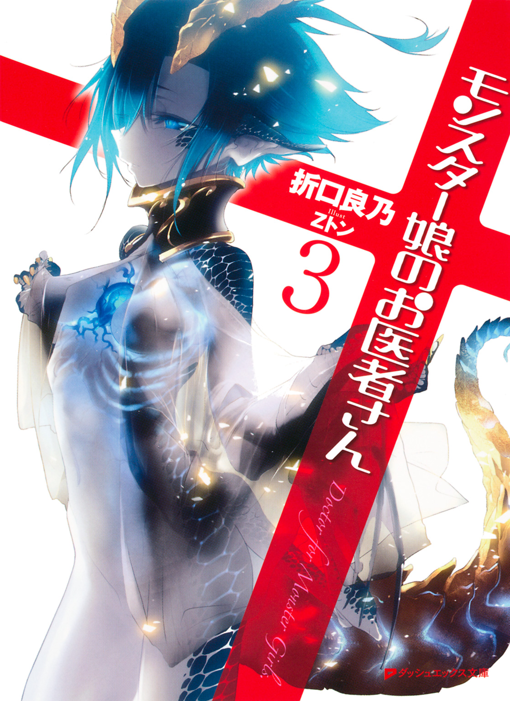
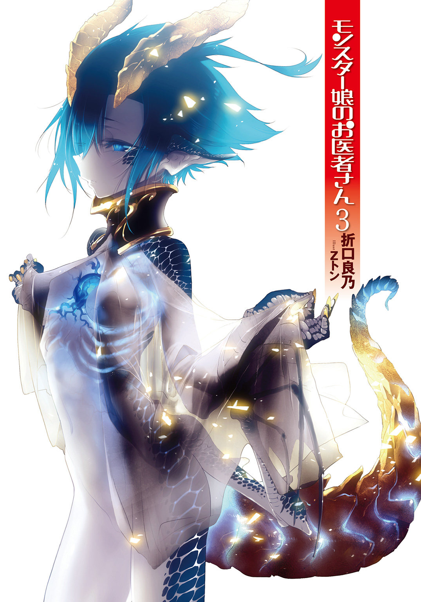
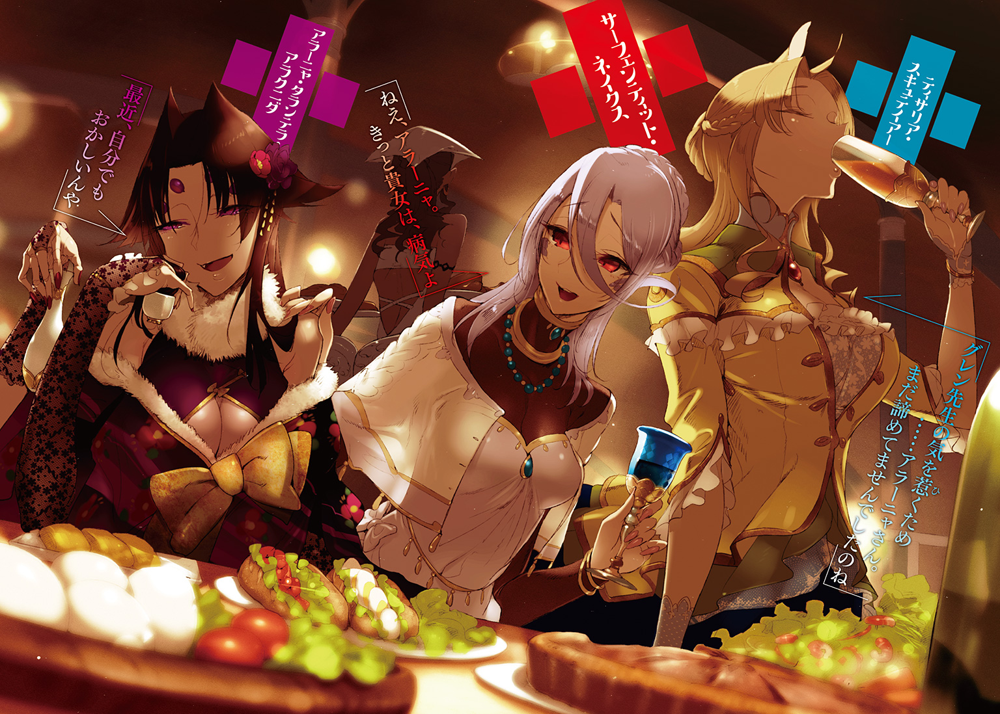
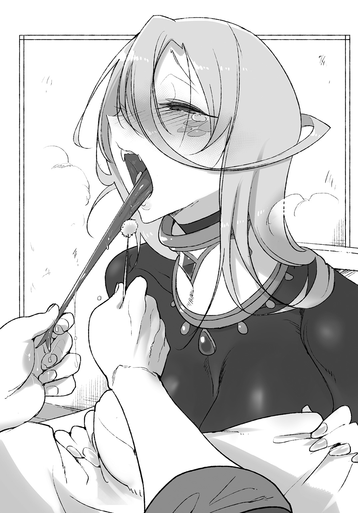
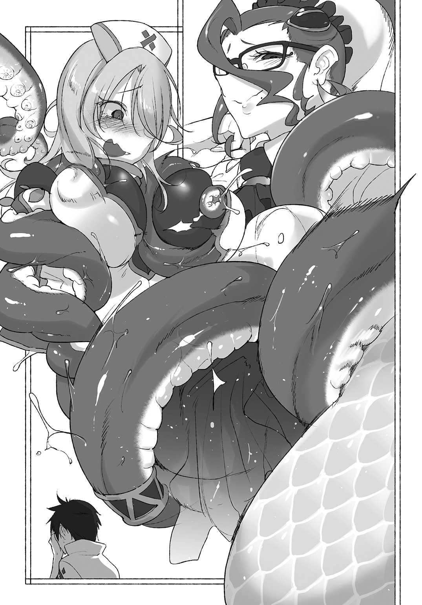
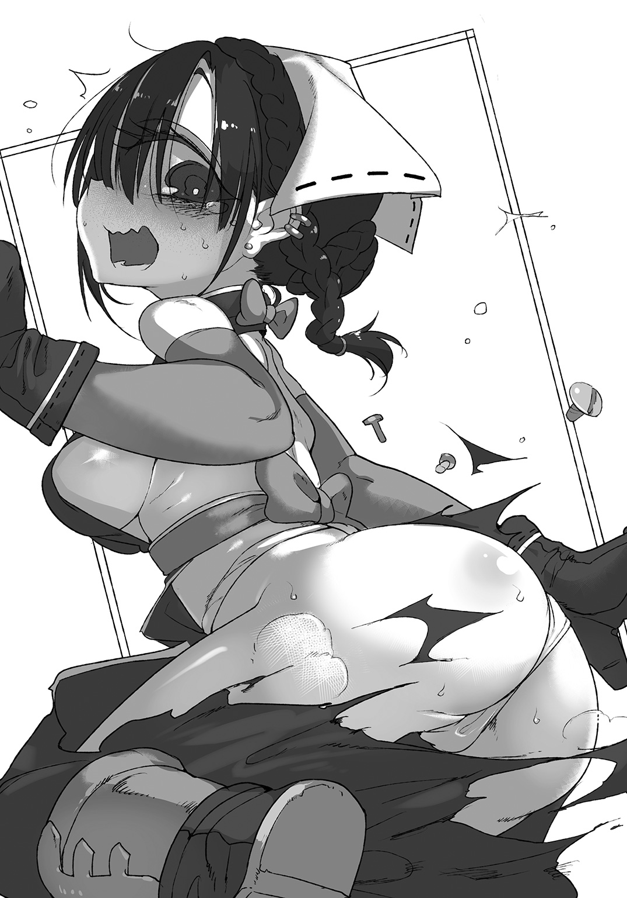
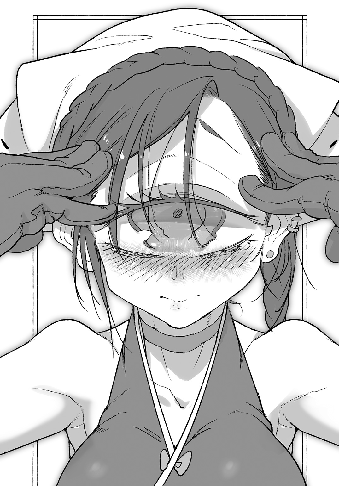
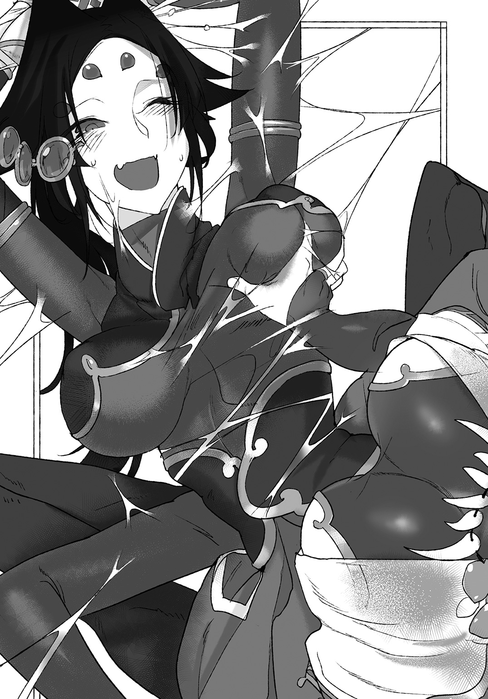
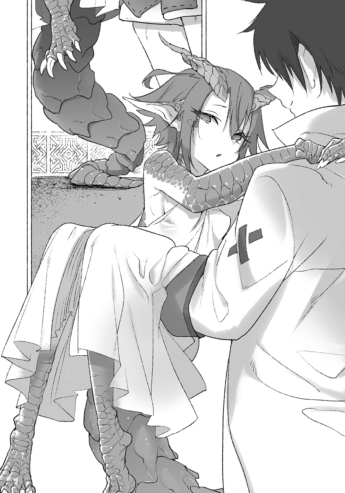
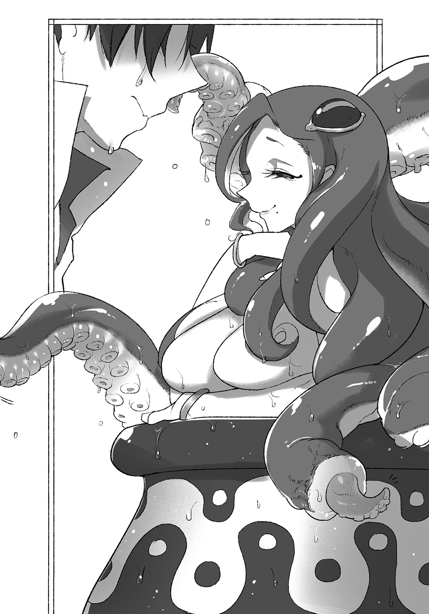

| モンスター娘のお医者さん 3 | |
| 折口良乃 | |

この本は縦書きでレイアウトされています。
また、ご覧になる機種により、表示の差が認められることがあります。


 ダッシュエックス文庫DIGITAL
ダッシュエックス文庫DIGITAL
モンスター娘のお医者さん３
折口 良乃
プロローグ１ 冬の一幕
リンド・ヴルムの冬は長い。
元々寒冷な地域であり、ヴィヴル山脈の麓に位置する竜の街では、毎年多くの雪が積もる。雪が止まぬうちは冬であり、街の活気は少し控えめになる。
多種多様な魔族らは、それぞれ違う形で冬を過ごす。
力に自信のある巨人族やケンタウロス族は、雪かきを率先して行い日銭を稼ぐ。ラミアやリザードフォークといった爬虫系魔族は、寒さを嫌って外出をほとんどしなくなる。同様に、水棲魔族たちも、温度の変化が少ない水中で過ごすことが多くなる。
そして今年の冬には、流行り病もあった。
流行り病といっても大げさなものではなく、ちょっと性質が悪いだけの風邪である。倦怠感と咳、高熱といった症状が主で、命に関わることはないものの、街では大いに蔓延してしまった。リトバイト診療所でも、冬の間中、風邪の対応に追われることになる。
診療所の魔族医師、グレン・リトバイトは診察に。
薬師サーフェンティット・ネイクスは、製薬と処方に。
二人は自らの仕事に、冬の間中かかりきりであった。
ろくろく外出もしてないが、その甲斐もあってか、幸い、病による死者を出さずに済んだ。
だが、そんな冬の終わりに、ちょっとした事件が起きる。
診療所の薬師サーフェンティットが、病に罹ってしまったのだ。
「サーフェ、調子はどう？」
グレンは声をかけてから、サーフェの寝室のドアを開ける。
サーフェはなにも答えず、だるそうにベッドに横たわっている。長い下半身は、湯を満たした大きな盥に浸けていた。
「卵酒作ろうと思って持ってきたよ。あとお湯を沸かしてきたから。置いておくね」
「............」
答えがない。
おや、と思いながらも、グレンは部屋の中に入っていった。
「診療所のほうは問題ないから、ゆっくり休んで」
「............」
やはり答えはなく、しかしサーフェはこくりと頷いた。話すのもだるいのか。
診療所で病の対応に追われるうちに、サーフェ自身がその風邪に感染してしまったのだった。
「げほっ、えほっ」
咳を繰り返すサーフェ。
風邪は誰でも罹るが――もちろん、人間の風邪とラミアの風邪では、原因となる菌や症状、そして治療法も異なる。ラミアに関しては、鼻や喉、肺といった呼吸器に症状が出ることが多いと言われる。
グレンは、サーフェの下半身が浸かる盥に指を入れて、温度を確かめてみる。
「少し冷えてる、お湯を足しておくね」
サーフェはまた頷く。何故かわからないが、今日は意地でも喋りたくないようだ。
なにか怒らせることをしてしまっただろうか、とも思うが、グレンに心当たりはなかった。ともあれ薬缶のお湯を盥に注いでいく。
人間であれば、風邪で効果的なのは暖かくして寝ることである。毛布でも被り、体を温めて汗をかく。汗をかいたらその分、水分を補給すればいい。
だが、ラミアは変温動物である。自分の体で熱を発することはないので、寝具のみで体温を維持することはできない。
そんなラミアにとって、最も効果が高いのは温浴と言われる。おおよそ三十度前後が、ラミアが温浴をするのに適した温度である。
適温の湯に下半身を沈め、湯の熱を利用して体を温める。体温が十分に高くなれば毛布や暖炉での保温も有効である。高い体温を維持することができれば、免疫力が上がって風邪はよくなるのだが――。
「ねえ、サーフェ、なにか隠してない？」
「...............」
露骨に無言を貫く薬師に、グレンは疑問を投げる。
サーフェは首を振るだけだった。
グレンは医者として、サーフェを観察した。
顔が赤いのは温浴の効果だろう。一方で息が荒いのは、鼻が詰まって口呼吸ばかりになっているせいだ。こうなると口の中が乾燥する。
「......サーフェ。ちょっと、口の中を見せて」
「い、いひゃです」
「ほら！ 嚙んだ！ 口の中になにかできてるでしょ！」
やっと喋ったと思えば、発音が妙におかしい。
風邪による免疫力の低下。口腔内の乾燥。これらから導き出される病気はいくつかある。たとえば虫歯、あるいは口内炎である。特に口内炎は体調不良、栄養不足の時によく発症する。
薬師として多忙ゆえ、食事もおろそかにしてしまったのだろうか。
「ほら、見せて。どこにできてるの」
「せ、せんせぇ。あの、口内炎くらい自分でなんとでもできますから......よく効く薬も作れますし」
「病人がなに言ってるんだよ。いいから、たまには僕に治療させてよ」
口内炎のせいか、舌っ足らずに『せんせぇ』と呼ぶサーフェは新鮮だった。
やがて、観念したのか、サーフェは大きく口を開ける。グレンはサーフェの両頰に手を添えて、彼女の口内を観察した。少し彼女の頰を傾け、採光窓のほうへ向かせる。
これで、口の中もよく見える。
「へぇ、へんへぇ。はひゃめに終わらひぇて......」
「うん。わかってる」
サーフェに頷いて、グレンは診察を続けた。顔が近いのが恥ずかしいのだろうか。
「はぇ......」
口の中に異常はない。歯も虫歯のない綺麗なものだった。
ラミアの亜種には歯の内部に毒腺を持つものもいるが、サーフェは毒を持たないラミアであった。もし毒を持っているならばグレンももっと慎重になっただろうが、サーフェに対しては遠慮がない。
というわけで――サーフェの口の中に指を突っ込んだ。
「んほぉぉ......!?」
「あ、ごめんね」
「はひひふっへふだはいっっ......！」
何を言っているかわからないが、怒っているのは伝わってきた。
グレンは指先がサーフェの唾液にまみれるのも構わずに、頰の内側に触れる。そのまま頰を内側から引っ張り、歯茎共々観察していく。
「あぇぇあ......」
「ん......歯茎には異常ないね」
異物が挿入されたせいで、サーフェの口の中には唾液が溜まってきていた。いい傾向だ。少しでも乾燥が防げるといいのだが。
口内炎ができているのは、歯茎でも頰の内側の肉でもない。
――となれば。
「舌か」
「あぇ......はほ」
サーフェが目線でその通りだと訴えてくる。最初から聞いておけば良かった。
「じゃあ、舌を診るね」
「ふぁい......」
べろり、とサーフェが口を開けたまま舌を出す。
ラミアの舌の長さは、人間のおよそ二倍。伸縮性、柔軟性に富む上、ラミアの舌には味覚の他、嗅覚を感知する神経も備わっている。グレンはサーフェの舌先をつまみ、観察した。
「あえぇー......」
舌の長さを見ると、これが口の中にちゃんと収まるのか、心配になる。
秘密は喉の筋肉にある。ラミアの喉は軟骨で支えられ、左右に分かれるような構造となっている。想像以上に柔軟で、拡張するのだ。
このため、鶏卵程度であれば丸のみしても窒息することはない。普段は分割された喉の隙間に長い舌が収納され、必要に応じて口外へと伸ばす。
この舌を出し入れすることで、周囲にあるものの味、匂いを感知することができるのであった。
「うん、ここだ......」
舌の裏側の中ほどに、白く変色した箇所があった。
やはり口内炎だ。
独特に進化したラミアの舌と喉であるが――逆にそれが弱点となる場合がある。たとえば細菌感染を原因とする口内炎は、始めは小さくとも、喉の中に収納されている時に、急激に炎症が広がってしまうおそれがある。
最悪の場合、炎症は舌にとどまらず、喉、肺にまで達し肺炎さえ誘発する。喉の構造が複雑ゆえに、菌も潜伏しやすく、一度炎症が悪化するとなかなか自然治癒しない。寒さで免疫力が低下している時などは、特に顕著である。
たかが口内炎ではあるが、ラミアの場合は早めに対処しておくことが望ましい。
「薬は......ないか」
「ふぁふぁふぁははひは......！」
サーフェなら作れるだろうが、病人に作らせるわけにはいかない。サーフェは口を開けたままなにか言っているが、やはりよくわからない。
「しょうがない、応急処置だね」
グレンは、サーフェの見舞いのために持ってきた品を見る。
持ってきたのは卵酒の材料である。
風邪といえば卵酒。
ブランデーに卵黄を入れ、牛乳や砂糖を加えて作る。少量のハチミツやスパイスを混ぜて飲みやすくする。農場から新鮮な鶏卵が手に入るため、良質なものを作ることが可能であった。
基本的には恒温動物に有効な卵酒だ。変温動物は自分から発熱することができないため、体を温める食材は効果がない。だが、栄養を取ることで回復を早める点ではラミアにも有効だ。
グレンはサーフェの部屋にあった脱脂綿を借り、ハチミツにつける。
「口内炎には、ハチミツが効くから」
「ふぉふぇふはいふぃっへ......ほぉぉっ」
サーフェがびくんとする。
ハチミツを十分に吸った脱脂綿で、舌の患部をとんとんと叩いた。
「ほっ......ははほぉぉ......！」
「ごめんね、ちょっと我慢して」
痛みのせいか、サーフェの体が震えた。
患部に直接触れているのだから、痛いに決まっているのだが。
「あへぁ.........！」
サーフェが何を言っているかはわからないが、痛みで顔をしかめていた。
口内炎の患部は少々大きい。当然、苦痛もそれなりにあったはずだが、なぜ言ってくれなかったのか。放っておけば酷いことになるのは、サーフェ自身がよくわかっているだろうに。
「あっ......ほへはほ......！」
「うん、もうすぐだよ」
ハチミツには殺菌作用がある。
古代では、傷口に蜂蜜を塗った包帯を巻いて、傷の化膿を防いだという。今ではあまり使われない療法ではあるが、応急処置としては十分なはずだった。

「はふははぁぁ......」
唾液とハチミツで手が濡れるが、グレンは構わずに患部への塗布を続けていく。充分に塗ったと判断したところで、グレンは治療を終えた。
「んっ......ふっ、ふう」
「お疲れ様、サーフェ」
「......どうも」
サーフェのじろりとした目はなにか言いたげであった。
「せんせぇ、さすがに口が疲れました。丁寧なのはいいのですけど......」
「......ご、ごめん。時間かけすぎだね」
「こうなると思ったから、口内炎のことを言わなかったんです」
そう言いながら、口の端から垂れてしまっていた涎を、自分で拭き取るサーフェだった。
「あと――」
「は、はい」
「――顔が近くて、恥ずかしかったです」
言ってしまってから、むしろサーフェのほうが顔を赤くした。
毛布を被って、ベッドの中に引きこもってしまう。言って照れてしまうくらいならば言わなければいいのに。
グレンもまた、顔が赤い。
口内炎が重症化する可能性を考えれば、グレンの対応は間違っていない。しかし、まあ、サーフェに対する配慮が足りなかったのは事実だろう。
むしろ身内という気安さから、ちょっと強引に診察に及んでしまったかもしれない。
「あー......えーと、卵酒飲む？ サーフェ」
安易なご機嫌取りではあった。
しかし卵も酒も、サーフェの大好物。卵酒が風邪に効くという理由とはまた別に、グレンは病んだサーフェが喜ぶだろうと用意したのだ。
「......せんせぇの手作りですか？」
「え？ うん、もちろん」
「せんせぇは、料理はからっきしなのに、治療に関わるものだけは上手にできるんですね」
確かに、診療所でとる食事は全てサーフェに任せっきりである。グレンも手伝えたらと思うのだが、あいにく心得がない。
それに、料理をするサーフェはなんだか楽しそうなので、手を出しづらいという理由もあった。
「......いただきます」
サーフェがグラスを受け取った。
薄黄色の卵酒の上に、少量のスパイスが浮いている。カクテルとして飲まれることもあるので、洒落たグラスを使ってみた。
「んっ、んくっ、ごく」
一息であった。
躊躇いなく、グラスの中身を一気に飲み干してしまう。喉が渇いていたのか。それとも別の理由か。
飲み干してから、サーフェはため息を一つ。
「ふう......全部ちゃんと飲めましたよ、せんせぇ」
「う、うん」
好物が二つも入った卵酒はやはり美味しかったようで、サーフェは満足そうに舌なめずりをするのだった。栄養は十分であろうから、じきに風邪も口内炎もよくなるだろう。
「......先生、ご存じですか？」
「なにを？」
「舌の長いものは、異性に好かれるそうです......私、同族の中でも、ちょっと長いほうなんですよ」
ちろ、とまた舌を出すサーフェ。
確かに、舌は性的な魅力に溢れているだろう。グレンもサーフェの舌でなにかを舐める仕草に見とれることが度々ある――ラミアが舌を出し入れするのは、食べ物の匂いを嗅いだりする場合に多いのだが。
つまり、この場合の食べ物とは――。
「わ、私、キスも上手いかもしれまひぇんよ？」
「風邪ひきなのにそういうこと言わないの！ しかも嚙んでるし」
「ううう だってぇぇ！」
だってぇぇ！」
毛布の中に戻り、身をくねらせるサーフェであった。『顔が近くて恥ずかしい』と言った――その舌の根も乾かぬうちに、そんなことを言ってしまうのだ。
「どうしたのさ、急に」
「わたしぃ、酔っちゃいました、せんせぇ」
流し目でグレンを見るサーフェ。
卵酒程度で酔うわけもないのだが、酒を理由にしなければ言えないほど恥ずかしいセリフである――ということだろうか。
甘え下手な彼女らしいといえば、らしい。
「まったく......」
風邪になれば心細くなる。寂しいし、不安になるし――。
サーフェの、ちょっと不機嫌で、だけど構ってほしそうな態度は病人特有のものなのだ。酒を理由に甘えてくるのも、やはり心細いからだろう。
グレンにできることは一つだった。
「今日はまだお昼休みがあるから、もうちょっと傍にいるよ」
「ほ、本当ですか？」
「うん――キスはしないけど」
「ううううそれはぁぁ忘れてぇぇ」
恥ずかしさで悶えるサーフェだ。
彼女は甘え下手なところがあるから、こういう時でも容易にグレンには頼ってくれない。しかし、それがかえっていじらしく、グレンに彼女を放っておけなくさせる。
もしかしたらすでに自分は、恋するラミアの術中なのだろうか。
盥にお湯を足しながら、そんなことを考える。
まったくサーフェには敵わない――などと、舌を巻くグレンであった。
プロローグ２ 水路街記念式典
サーフェが病から回復した頃。
いよいよ、リンド・ヴルムは春を迎えようとしていた。
春は祭典の季節であった。水路街では人魚たちが連日カーニバルを催し、闘技場では年に一度の昇位試験がある。人間も魔族も、お祭り騒ぎの予感に浮き足立っていた。
春になってから、サーフェがグレンに対して意味深に見つめてくることが増えた。
さしずめ水路街にでも観光に行きたいのだろう――ということはグレンにも察しがついた。ここぞとばかりに売られる商品が目当てだろう。
いずれ暇を作って、水路街に行こうと考えていたグレンであったが。
――まるでそれを見計らったかのように、空から一通の手紙が届けられた。
「こんっにちはー！」
診療所の窓が、がららっと勢いよく開け放たれる。
突然の侵入者は、診察を待つ患者のことなど気にせず入り込んできた。
グレンもサーフェも、それを見て呆れ顔である。サーフェは眉を不機嫌に痙攣させながら。
「イリィ。玄関から入りなさいとあれほど」
「診療所に速達だぜ！ ほら、中央議会から！」
「人の話を聞きなさい！」
窓から入ってくるのは、もう決まっていた。
極彩色の翼を持つこのハーピーは、名前をイリィ。グレンにとっては卵塞を助けたり、成長期の換羽を診断したりと、浅からぬ縁を持つ少女である。
「どうだい、イリィ。『スキュテイアー運送』の仕事は」
「楽しー！ 思う存分飛べるし！ お嬢も褒めてくれるし、目立つし！」
「それは良かった」
ハーピーの里で生活していた彼女だが、実は春先から『スキュテイアー商会』に正式に所属することとなった。今では空飛ぶ手紙配達人である。彼女が名前と顔を住民たちに覚えてもらい、街に馴染むのにそう時間はかからなかった。
飛ぶことがなにより好きな彼女にとって、天職と言えるかもしれない――とはいえ、窓からでも構わず侵入する悪癖は、ぜひ矯正してもらいたいのだが。
「はいこれ！ お届けでーす！」
「ん。議会から......じゃあ、スカディさんね？」
「そうそう。確かに渡したぜ！ それじゃアタシ、まだまだ配達残ってるから！」
イリィは機敏に、やってきた時と同じように窓から飛び立っていった。
「忙しないですね......」
「まあ、でも、そのくらいがイリィには丁度いいんだよ」
サーフェの言葉に、グレンは苦笑する。
落ち着かない少女だからこそ、忙しさを楽しめるだろう。生き生きとした表情からも、『スキュテイアー商会』の一員として、充実した生活を送っていることがわかる。
グレンはすぐに、配達された手紙を確認する。封蠟には竜の紋章が用いられており、議会代表スカディ・ドラーゲンフェルト手ずから認めた書状であることがわかった。よほど重要な内容だろう。
「メロウ水路街記念式典の招待状......？」
「......」
「なるほど。改築が終わったんだ。落成式だね」
メロウ水路街は、複雑な構造をしている。
人魚をはじめとする水棲魔族たちには居心地がいい街なのだが、すでにある街並みを水路に改造したために、使われていない廃墟が水上にいくつも突き出ていた。それを奴隷商たちにアジトとして利用されたこともある。卵塞に苦しむイリィに出会ったのも、そのアジトでのことだった。
冬の間中、スカディの側近である苦無・ゼナウの指揮でもって改築が進められているという話は聞いていた。例の奴隷商たちは軒並み苦無に教育され、改築工事に携わっているというから世の中わからないものである。
ともあれ、改築は無事に終わったようだ。
もう水路街が、妙な輩に利用されることもあるまい。水路街に住むルララも安心していることだろう。
「水路街の改築が終わった記念に、お祭りだってさ。パレードとかコーラスとか、いろいろと派手にやるみたい。あ、ルララも歌姫として参加するって」
「あら、それは是非行ってみたいです。招待は......」
「もちろんサーフェも呼ばれてるよ」
招待状にはしっかりとサーフェの名もある。スカディが気を利かせてくれたのだろう。
式典の内容が記された書状も同封されており、かなり大々的に式を執り行うようだった。もちろん、『メロウ水路街』で開催するのだから、露店や屋台の数も相当なものになるだろう。
なにより、知り合いの人魚ルララの歌は是非また聴きたい。主治医としては、彼女の喉の調子も気になるところだ。
「楽しみが増えましたね、先生」
「サーフェ、風邪はもういいの？」
「意地悪ですね先生。一体いつの話をしてるんですか。もう平気ですよ」
下半身の白い尻尾を左右に振りながら、サーフェはご機嫌だ。彼女は水路街に出回る品物が大好きだから、よほど嬉しいのだろう。
「是非ご一緒に。お店を回りましょう」
共に水路街まで足を運ぶのは、そういえば久しぶりだ。冬の間は診察に忙殺され、買い出しさえもろくに行けなかったのだ。
「わかったわかった。でも今は仕事ね、サーフェ」
「もちろんです、お待たせしました、次の方どうぞ」
待合室で堂々と無駄話をしているのだが、常連の患者たちに怒るようなものはいない。むしろ医者と薬師のやり取りを微笑ましそうに見ているものさえある。
街の小さな診療所であるからこその、和やかな空気であった。街の大通りに巨大施設を構え、日夜病魔と闘う『リンド・ヴルム中央病院』ではこうはいかないだろう。
春はもう到来した。
流行り病を切り抜けて、やってくる患者の数も落ち着いたリトバイト診療所においては、骨休めに丁度いい時期かもしれない。
招待状に描かれた一週間後の日付を、グレンは頭に刻みつつ、仕事を再開するのだった。
式典の日は、雲一つない快晴であった。
グレンとサーフェは徒歩で水路街へと入っていく。以前の水路街では徒歩は不便極まりなかったのだが、今は水路の上に新たな橋などが架けられている。水上での利便性も向上しているだろう。
グレンたちも橋を渡ることで、すぐに水路街の中心部まで辿り着くことができた。以前は船でなければ通れなかった場所だ。
「この辺りまでなら徒歩で来れるね。橋の数、増えたなぁ......」
「観光客用に整備したのですね。これなら買い物にも気軽に来れます」
観光街としてますます発展する水路街を見て、二人はそんな風に呟く。
橋の両側には、露店や屋台が出ている。商いをしているのは必ずしも水路街の住人ではないようで、人間でも魔族でも商魂たくましいものがすでに店を出していた。船の上ではなかなか難しい、料理の屋台などもある。
「素晴らしいですグレン先生、回りきれるかしら」
「ぜ、全部回るつもりじゃないよね......」
「さすがに全部は......あら、でもあの露店は行きたいし、あちらの屋台も」
時間的な制約もある。早速サーフェは、どう店を巡るべきか算段を始めたようであった。
グレンとしてはゴンドラでゆっくり進む水路街も好きだったのだが――やはり自分の足で歩ける利便性は強い。
橋の下を覗けば、ゴンドラが絶え間なく行き交っている。まだまだ船を用いて、水路を利用する客も絶えないだろう。今後もゴンドラは観光に不可欠なものとして、大いに活用されるはずだ。
「まずは大橋だよ、サーフェ」
「わ、わかっています」
目を離すと、ふらふらと露店に引き寄せられそうなサーフェに声をかける。
二人が向かうのは『メロウ水路街』の中心。
もっとも幅のある一番水路に、新たに架けられた橋だ。橋もただ『大橋』と呼ばれている。その橋を起点に、連日パレードなどが行われるらしい。パレードを間近に見たいのであれば特等席だが、当然、場所取りなどで毎日人がごった返している。
だが、今日はそれもなかった。
橋の上は、一般の観光客の姿はまったくない。橋自体は式典のための横断幕や、議会の紋章を記した旗できらびやかに飾られているが――そこにいるのは議会直属の警邏隊ばかりであった。
グレンは構わず進んでいく。
話が通っているのか、警邏隊に咎められることはない。
目当ての姿を見つけたのは、水路の脇道だった。
橋のたもとには、一番水路へと続く階段がある。グレンとサーフェが慎重に降りていくと、水際に彼女は立っていた。
「こんにちは、スカディさん、苦無さん」
「おお、グレン医師。来たか」
「このたびは、ご招待ありがとうございます」
グレンとサーフェが揃って頭を下げる。招待してくれたスカディ・ドラーゲンフェルトは、黙って静かに頷いた。相変わらずヴェールで顔を覆っており、神秘的な雰囲気をまとっている。
議会代表であり、街一番の権力者でありながら、その体格は子供のそれ。声も小さく、側近の苦無が代弁してくれねばなにを言っているのかわからない。
式典に際して、スカディ自身が大橋の上で挨拶をするらしい。
水路街の賑やかさに対して、大橋の周辺に議会の人間しかいないのはそういう理由である。
グレンは招待されたことにより、その演説を良い席で聞くことができるようだった――スカディの演説が、どれほど聞き取れるかは疑問だが。
まあ、きっと苦無が代わりに声を張り上げるのだろう。忠義者の彼女は、主の言葉の一片すら聞き逃さないはずだ。フレッシュゴーレムである彼女は耳も鼓膜も死肉なのだが、スカディが関わると生者の耳よりも性能が良くなるのかもしれない。
「多忙ゆえ来ないかもしれない、と竜闘女様も案じておられた。診療所のほうはいいのか」
「ええ、まあ、午前中のみ休診で」
「そうか。せっかく休みをとったのだ、ゆっくり式典を楽しむといい」
苦無の右肩には、警邏を示す腕章がつけられていた。さすがスカディの側近、式典の警備にも参加しているらしい。それはいいのだが、彼女の腕章は二の腕の肉にぶすりとピンで留められていた。
どうせ死体だからと、苦無は自分の体をぞんざいに扱うきらいがある。これは一言注意するべきだろうか――とグレンが考え込んでいた時だった。
「あーっ、先生！ 来てくれたの！」
「こら、動いたらあかんえ。じっとしぃ」
「はぁい」
耳馴染んだ声が聞こえた。
水路には、多くの人魚とゴンドラが見える。ゴンドラがこれでもかとばかりに飾られているところを見ると、式典パレードの準備中なのだろう。誰も彼もが忙しそうに水中、水上問わず働いていた。
知っている顔を二つも見つけて、グレンは驚く。
半身を水に沈めているのは、ルララ・ハイネ。水路街に住む人魚の歌姫だ。
彼女はパレードで歌うのだろう。派手な熱帯魚を思わせる優雅なドレスに身を包んでいた。彼女のドレスは水に浮かんでフレアスカートのように広がっている。
そして、もう一人の知った顔。
「アラーニャ......」
アラクネの服飾デザイナー、アラーニャ・タランテラ・アラクニダであった。
ルララのほうは、グレンが医師として彼女を治療し、その後も定期的に経過を診ている紛うことなき患者だが――アラーニャは違う。
彼女は自分の目的のために、仮病を騙ってまでグレンを手籠めにしようとした。
が、そんなことは忘れたかのように、彼女はルララの服を直したり、装飾品を付け替えてはうーむと唸っている。
大橋の橋脚から糸でぶら下がっているので、上下さかさまの姿勢であるが――いかにも仕事中、という感じだ。
水面ギリギリにまで体を下ろし、ルララと向き合っている様子は本物のクモのようである。
「どうしてここに......」
アラーニャの親友であるサーフェも驚いている。
「アラーニャ女史には、今日の式典で歌う人魚らの衣装のデザインを担当してもらっている。デザインのみならず、採寸から縫製、仕上げまで全て彼女の手によるものだ。今も最後の確認の最中でな、大仕事のはずだが、さすがの働きぶりでな」
「まあ、アラーニャが？」
「ああ。とにかく丁寧に仕上げてくれると、人魚たちも褒めていたぞ。『荒絹縫製』は良い若手を抱えているな」
「そうですか、そこまで評価されて......」
リンド・ヴルムも広いようでなかなか狭い。
グレンの知らないところでも、交友関係は様々に存在するようだった。
アラーニャとルララなど、二人の性格を考えると接点などなさそうだが――なるほど、歌姫と衣装役と考えればつながりはあるのだ。
純情なルララが、アラーニャに妙な影響を受けなければいいが。
「人魚やアラクネも含めた、大勢の協力を得て、今日この日を迎えられたこと、竜闘女様は大変お喜びだ。この春から水路街もさらに賑やかになることだろう」
「ええ、ええ。新しいお店もたくさんありますものね！」
買い物が大好きなサーフェがにこやかに告げる。もう買い物したい店の算段をつけていてもおかしくない。
「............」
「はい？」
スカディ・ドラーゲンフェルトが、なにか告げた。
それは蚊の鳴くよりもさらに小さい声だったかもしれない。グレンが彼女の言葉に気づいたのは、本当にたまたまだった。
「『よく来てくれた。楽しんでくれ』――と仰っている」
不死身の護衛が代弁してくれる。
「そ、そうですか」
「何度も言うが、竜闘女様は今日の式典に多くの者たちが集まってくれたことを心からお喜びである。リンド・ヴルムもここまで華やかになった。人間と魔族が健やかに生活している証拠だ......無論、住人の健康のため尽力しているグレン医師の働きにも、満足なさっている」
「はあ」
グレンは、スカディの素顔を見たことがない。
スカディの心境は苦無の語っている通りで間違いないのだろうが――スカディの顔が見えないのでは、喜んでいると言われても実感がわかない。
それに、グレンが気になったのは、スカディの尻尾であった。
ローブの裾から覗く、太く強靭な竜の尾。黄砂の色に輝く鱗で包まれたその尻尾は、水路街の石畳を引きずるように垂れている。以前見た時は、尻尾の根本はぴんと立ち、先端がゆらゆらと動いていたはずだが――。
「さて、時間だ。そろそろ始まる。席は用意してあるから、警邏の者に招待状を見せるといいだろう。――では、竜闘女様、参りましょう」
「............」
こくりと頷くスカディ。
彼女は階段を上り、大橋へと向かっていく。橋の上で開会式の挨拶でもするのだろう。そもそも水路街が今の形に作り上げられたのはスカディの力によるところが大きいのだ。苦無の言うとおり、水路街が一層盛り上がるのは彼女にとっても嬉しいことだろう。
だからこそ、気になる。
力なく垂れさがる、スカディの尻尾が。
「さ、私たちも席に行きましょう。あちらで飲み物も供されるそうですから......」
「ん......」
「先生？ ......先生！」
「えっ、あ......なに？」
「なにを上の空になっていらっしゃるんですか。さっきから呼んでいますのに」
サーフェが拗ねて唇を尖らせる。
「......わかる？」
「わかりますよ」
当然とばかりに言われてしまう。
よほど顔に出ていたのだろう。さすがに長い付き合いの幼馴染みを誤魔化すことはできないようだった。
「一体なにを気にされているんです？ アラーニャ？ ルララさん？ 苦無さんそれともスカディ様？ 一体どの女かしら、ねえ先生？」
「し、強いていえばスカディさんだけど、ちょっと、近いよサーフェ」
「私とご一緒なのに、これから買い物なのに。他の女のことを考えて上の空ですか。ふぅん」
「そうじゃなくて」
「あん」
このまま絡みつかれそうだと思ったグレンは、顔を寄せてくるサーフェを軽く押しのける。
「ちょっと気になることがあったんだけどさ、僕の杞憂だと思うから......」
「はあ」
なにがなんだかわからないとばかりに、サーフェはきょとんとした顔。
尻尾に元気がない、というだけでなにかを判断できるほどグレンは竜に詳しくない。医師としてあらゆる魔族に精通しているつもりだが、竜は別だ。少しでも診察をさせてもらえれば良かったのだが、それは日を改めてでもいいだろう。
そもそも、竜という強大な生物に、『不調』が存在するのだろうか。
スカディは挨拶をするだけで、なにがあるはずもない。自分はなにを心配しているのだろう。
「職業柄、ちょっとしたことが気になるのはわかりますけれど......少しは、私のことも気にしてくださいな」
「......うん」
そんな風に言われると、考え込んでいる自分を叱咤したくなる。
照れていじらしいサーフェの様子に、グレンはつい苦笑してしまうのだった。些細なことを憂うのは、自分の悪い癖だ。
せっかくの祝いの祭典なのだから、全力で楽しもう、とグレンは思った。
式典が始まった。
スカディはやはり、大橋に作られた壇上に立ち、式典の挨拶を行っていた。橋の欄干ぎりぎりに作られた壇に上がるスカディの姿は、堂々としたものである。
皆、スカディの言葉に熱心に耳を傾けていた。
「『昨年より始まった水路街の一大改築は、リンド・ヴルムに住民一同の助力を得て、無事に落成式を迎えることができた。関わった多くの者に感謝を述べるとともに、新しく生まれ変わったメロウ水路街に、私、スカディ・ドラーゲンフェルトから心ばかりの火竜の祝福を捧げるものである――――』」
壇上に立っているのはスカディだが、それを代弁しているのは苦無だ。
スカディの声量では水路街に集まった者たちの耳にはとても届かないだろう。苦無が代弁するのは今に始まったことではないのだが――スカディの政敵には、議会の代表が自らの言葉で語らないのを不審に思う者もあるという。
グレンも気になっていた。
スカディの声が、何故、あんなにも小さいのか。
「私たちの他にも、たくさん呼ばれてますね」
サーフェが耳元で囁いた。
グレンたちが座っているのは、招待客のために特別に設えられた席だ。スカディのいる大橋がよく見えるオープンカフェのような場所で、周囲にも多くの招待客がいる。
「そんなに？」
「ええ。あちらは『スキュテイアー商会』の代表......ティサリアのお父上でしょうね。『アルルーナ農園』の農場主アルルーナさんも。それに『キュクロ工房』の親方まで。あの空席は......ああ、クトゥリフ様の席ですね。またサボりかしら」
「先生は、忙しいからね」
「あちらは『荒絹縫製』リンド支社の支社長ですね。あら、アラーニャも一緒に」
リンド・ヴルムにある主だった商会、組織の代表が招かれているようだった。アラーニャは『荒絹縫製』のデザイナーなので、自分の上司と式典に参加しているというわけだ。
今さらながら緊張してしまう。ただの町医者にすぎないグレンには、ちょっと場違いな式典だったのかと思った。
グレンの緊張など知らぬげに、サーフェはのんびりと出されたお茶を飲んでいた。周囲が大人物ばかりだからといって緊張するような性格ではないのだった。
「『今日この日の式典に際し、七人のマーメイドに来て頂いた。人魚の美声を存分に味わいながら、生まれ変わった水路街を心ゆくまで堪能してほしい――――』」
スカディの言葉が、苦無の声で水路街へと響く。
橋の下は賑やかだ。拍手や口笛でもってスカディに賞賛が浴びせられる。
議会代表ということで政敵は少なくないスカディだが、逆にリンド・ヴルムの住民からの人気は高い。頻繁に苦無を連れて街を出歩いているからかもしれない。
「『最後に......非常に、非常に私的なことではあるが、ここに集まって頂いた皆に、ぜひ聞いてほしいことがある――――』」
話を続けるスカディが、欄干に手を載せた。
「『私は十年前、要塞都市だったこの街をリンド・ヴルムと名付けた。リンド・ヴルムは飛竜の意味。空を駆ける竜の一種だ。何故そんな名前を付けたのか。口さがない者は、スカディ・ドラーゲンフェルトが火竜であるゆえに、竜の名を付け、この街に君臨するつもりなのだ、と言う。しかしそれは全く正しくない』」
一口に竜と言っても、様々な種類がいる。
飛竜。火竜。毒竜。グレンの故郷である東の人間領においては、西側の魔族領とはまったく違う形の竜がいるとされていた――それは、ワニのような顔とヘビのような体を合わせた上に、翼もなく空を飛ぶという不思議な存在だった。
何故、こんなにも多様な竜がいるのか。
一説には、竜とは本来、神々に近い生物である。竜が神々から離れ、地上で長く生きすぎると、地上の穢れを受けて体が大きく変質してしまうのだという。竜の多様性に理由をつけるという点では、納得のいく説だが――。
しかし、ドラゴンとはそれほど不思議な生き物だ、という認識はグレンも持っていた。グレンの持つ生物学の知識では、理解しきれない部分も多い。
「『この都市は......人と魔族の住む街。諍いも問題もあろう。災害もあろう。余所からこの街の在り方についてあれこれ言われることもあるだろう。だが、街に竜の名前を冠すれば、どんなことがあっても竜が街を守ってくれるだろうと信じた。私のことではない。遙か天空にいる、我らが始祖の加護があると信じたのだ』」
誤解されがちだが、スカディはリンド・ヴルムの支配者というわけではない。
街の行政は、スカディを含めた有力者たちの合議で決定される。スカディは代表ではあるが、なにかを決める権力があるわけではない――もちろん議会での発言権の差はあろうが、それはスカディ自身の能力だ。
彼女が街を自分のものにしようなどと、誰も思ってはいない。
「『ゆえに私は......私は、そろそろ......』」
誰もが、スカディの言葉を待つ。
なにか大事なことを述べるのだ、というのは雰囲気で察した。
だが――続く言葉はなかった。スカディはなにを言うべきか、迷っているのか。だが、ここまで滔々と演説を続けていた彼女の言葉が止まるのはおかしい。
苦無も、ちらりとスカディを見る。
代弁している苦無が不審な様子だということは、やはりスカディが口ごもっているのだ。聴衆もまた、彼女の言葉を今か今かと待っている。
次の瞬間。
スカディがお辞儀をしたように見えた。
「苦無さん！」
グレンは反射的に声をあげ、立ち上がった。大橋までは距離があるが、グレンの声は届いたはずだ。聴衆をかき分けるようにして、グレンは走り出す。
お辞儀のように見えたのは、前のめりに倒れたのだった。
ぐらりと体勢を崩したスカディを、隣の苦無が支える。苦無の悲鳴のような声がグレンのもとにまで届いてきた。失神か。なにかの発作か。ただの立ちくらみ――いや、違う。苦無は何度もスカディに呼びかけているが、返事はない。
スカディは完全に意識を失い、倒れ込んだ。
応急処置が急務だ。
だが――。
人が多いのが問題だった。ただでさえ橋の両端は、スカディの言葉を聞こうという者たちで溢れている。グレンの細腕では人を押しのけるのも限度がある。しかも群衆には、なにが起きたのか理解しているものがおらず、混乱の只中にあった。
グレンも必死であったが、このままだとスカディのもとに駆けつけるのが遅れるかもしれない。
救急の医療処置においては、初期対応の遅れが致命的になることも多い。
「くっ......スカディさん！」
人ごみの中を少しでも前に進もうと、もがいていたその時。
「先生、こちらへ」
グレンの手を、サーフェが摑んだ。
さすがラミアというべきか、サーフェは人ごみの合間をするすると抜けていく。一見通れなさそうなところも、ラミアの肉体で強引に割り込むことができた。
こういう時は本当に頼りになる。
「急いでください」
「わかってる」
ラミアの先導で、グレンは人ごみを抜けることができた。
群衆を抜けた先には、倒れたスカディの姿があった。
傍にいる苦無は彼女の肩を抱いて必死に呼びかけている。主の危機ということもあり、苦無の元々色白な顔が、さらに蒼白さを増していた。
「動かさないでください。誰か！ 担架を用意してください！」
「ああ！ 来てくれたか！ 良かった......」
グレンがその場で指示を飛ばす。
苦無の表情に、安堵が広がる。
「突然、前のめりに倒れた。声をかけても返答がない......！」
「心臓か脳の疾患の可能性があります。スカディさんになにか持病は？」
「それは......っ」
苦無の目が泳ぐ。
持病に心当たりはあるようだが――返答に窮するのは彼女らしくない。群衆をちらりと見たようだから、もしや公の場では話せないようなことか。
「わかりました。とにかく応急処置を行います」
スカディのヴェールに、グレンは顔を近づける。
息がある。
すぐに脈を測る。手首付近は鱗があるため、ローブの脇から手を入れて脈をとる。
――ローブの下は何も身につけていないことに、その時に気づいた。ぎょっとするグレンだが、今はそれを言っている場合ではない。
弱いが、確かに脈はある。
「呼吸と脈拍を確認しました。急いで運びましょう。スカディさんは......クトゥリフ先生が主治医でしたね」
「あ、ああ」
呼吸と血流が確認できた。ならばここでできることは多くない。
リンド・ヴルム中央病院に向かい、そちらでクトゥリフと共に処置をするべきだろう。久方ぶりの再会がこれでは、クトゥリフも驚くだろうが。
もはや、式典どころではない。
苦無同様、多くの者たちが、スカディを診察するグレンの様子を見守っていた。
――噂は、すぐにリンド・ヴルム中を駆け巡った。
噂にはすぐにヒレがついてしまう。尾ひれや背びれがどんどんと付与されて、原型をとどめぬほどの怪物と化してしまう。
何者かの陰謀によるスカディ暗殺未遂という、なんの根拠もない話にまで変貌していた。
次の議会代表と目されている農場主アルルーナか。それとも謀略好きの『荒絹縫製』の支社長がなにかやったか。いやいや、病院長のクトゥリフが毒を盛ったのだ――などという、無責任にもほどがある噂が跋扈する。
倒れただけにとどまらず、もうスカディは亡くなったのだと早とちりしたものが、中央議会にまで押し寄せる一騒動さえ起きた。
その日、人々の口に上る話題は、スカディのことばかり。
それは、逆に言えば、いかに彼女が慕われていたか、街になくてはならない人材であったかということを、端的に示している。
――かくして。
竜の街を揺るがす、前代未聞の処置。ドラゴンの大手術が始まるのだった。
症例１ 倦怠感のスキュラ
リンド・ヴルム。
その街を呼ぶ時、『元要塞都市』と表現することがある。
先の戦争では、人間側の最前線都市として建設された要塞だったからだ。スカディは戦う以外の機能はほぼ持たぬ要塞に、リンド・ヴルムの名を与え、住むのに適した街に作り変えたのである。
かつて、捕虜を戦わせ見世物にした闘技場。幹部たちが集まり軍議した中央議会場などの施設は、改築や改装を行ったものの、大本の形はそのまま残っている。巨大な施設なので、壊すよりも利用したほうが都合がいいとの判断からだ。
中央病院もまた、軍事施設から転用されたものである。
かつては軍病院であったが、戦後に大きく改装され、市民のための病院へと変わった。魔族を診察できる医者の招聘は難航していたのだが、最終的には、クトゥリフ・スキュルが院長となり、中央病院は今の体制となる。
おまけのように、グレンも診療所を開いたのだが、まあそれはともかく。
クトゥリフの辣腕は誰の目にも明らかだった。大陸においても魔族医療に関して比肩する病院は存在しない。最新の設備と、クトゥリフの優秀な弟子たちによって、魔族の難病、奇病を数多く治した実績がある。
町医者のグレンとは、そもそも役割が違うと言っていい。
グレンがリンド・ヴルム中央病院を訪れるのは――随分と久しぶりになる。開業前のわずかな期間、ここで研修医として働いていたこともあったのだが。
「診療所を開いてから、来てなかったね」
「多忙でしたから。それに、用事は全部クトゥリフ様が言いつけてくるばかり。こちらから中央病院に頼むことはありませんでしたから」
サーフェはやはり、時折無茶を言ってくるクトゥリフを良く思ってはいないようだ。そもそもアカデミー時代から、師とサーフェは相性が悪い。
巨大なエントランスを、二人は進む。
目につくのはやはり魔族らだ。中央病院では、入院患者のためのベッドも多数用意されている。患者も魔族であれば、治療にあたる従業員も魔族ばかり。人間の身で魔族医を志すような奇特な者は、グレンくらいである証拠だった。
人間の一切いない空間であったが、グレンは慣れているので特に気にすることはなかった。
魔族のアカデミーにわざわざ入学したころから、種族として浮いてしまうことには慣れているのだった。
すれ違う看護師が、すっと頭を下げた。確かグレンの姉弟子にあたる魔族だと記憶していた。さほど親しかったわけでもないが、サーフェはにこやかに手を振っていた。むしろサーフェと仲が良かったのだろう。
「顔を知られていると、取り次ぎもなくていいですね」
サーフェは気楽に言う。
院長ともなれば、本来会うことも難しいはずだが――直弟子であるサーフェ、グレンならば誰に咎められることもない。
「スカディ様、大丈夫でしょうか」
「心配だけど、きっと大丈夫......だと思う」
式典があったのは、今日の昼間。
スカディが倒れ、中央病院に運び込まれたのは昼過ぎだ。
グレンも応急処置を行ったのだが、その後の治療は全て中央病院の管轄となり、グレンは参加させてもらえなかった。スカディの主治医が、前々から旧知の仲であるクトゥリフ・スキュルだから――とのこと。
夕刻になって、時間を作ったグレンとサーフェは、改めて中央病院に足を運んだのである。主治医が師匠であるとはいえ、グレンはスカディの倒れた現場に居合わせた。容体は気になるところだ。
それに――。
もう一年近くも顔を合わせていない、医学の師匠に会いたいというのもあった。
もちろん患者であるスカディのことが最優先ではあるのだが――そのついでに再会を喜んだとしても構わないだろう。同じ街に住んでいるのに、互いに多忙なため会う機会がほとんどないのだ。
「グレン先生、先に言っておきますが」
サーフェの顔は険しい。中央病院に来てから彼女はずっと不機嫌だ。
「クトゥリフ様との再会だからと、調子に乗らないように」
「だから大丈夫だよ、サーフェ。先生はもう僕に興味ないし、それに今はスカディさんのことが心配だから。のんびりお話はできないよ」
「そうだといいのですが」
病院の通路を進んだ先に、院長室はあった。
ここまで来ると患者の姿はほとんどないので、事務や管理の仕事をするための区画なのかもしれない。
職員の数といい、やはり二人で切り盛りしている診療所とは比較にならないものだった。
通路からは中庭がよく見える。中庭はよく手入れされており、なんと噴水まで設けられていた。ルララが歌う中央広場の噴水よりは小さいが、病院内の雰囲気を良くするために作ったのだろう。
それに――水は必須だろう。クトゥリフにも。
「先生、いらっしゃいますか。グレンです......サーフェンティットも一緒です」
院長室の扉を叩く。オーク材で作られた高級な扉だった。
「入りなさいな」
「はい」
久方ぶりに師に会う。高揚と緊張感がないまぜになった心境で、グレンは重い扉を開けた。
触手が見えた。
「あああ久しぶりねグレン......！」
顔に、触手が張りついてくる。
まさしくタコの足だった。吸盤のある長い触手――ただし、これはスキュラ族の下半身から生えるものなので、正確には腕ではなく脚である。
ともかく、腕とも足とも言える長い触手がぴたぴたと、グレンの顔や腕にひっついてくる。そのまま吸盤を吸いつかせながら肩、首、顔と順番に。吸盤にぎゅううと肌を吸われる感触は、慣れようとしてもなかなか慣れない。
先ほどまで水中にいたのだろう、触手はわずかに湿っている。吸盤の吸着力は尋常ではないもので、クトゥリフが手加減をしていても、赤い痕がしばらく残ってしまうほどだ。懐かしいスキンシップとはいえ、これは少し。
「クトゥリフ様......！ こンのダメ師匠......いい加減、グレン先生にまとわりつくのはやめてくださいな！」
「あら、サーフェンティット。いたの？ もう帰っていいわよ。優秀な弟子と話があるから」
「そういうわけにはいきません！」
サーフェは怒りの表情で、グレンに張りついた触手を引きはがそうとする。だが、それが無駄なことはグレン自身がよく知っていた。スキュラ族の下半身から生える八本の触手は筋肉の塊であり、力も強い。吸盤も一度吸いつくとなかなか離れない。
弟子時代、散々触手に撫でまわされたのでよくわかっていることだった。
「グレン」
「はい」
「少し、老けたわね」
呆れたようなその声とともに、きゅぽん、と吸盤が外れていく。まさか十七歳にして老けたなどと言われるとは思わなかったが――こういう師匠なのだ。
魔族医療の権威、クトゥリフ・スキュル。
アカデミーで他に並ぶものなき存在である彼女だが、その性格、態度、素行には少し――いや、大いに問題があると言える。
「久しぶり。可愛くも小憎らしい弟子ども」
「ご無沙汰......しています」
クトゥリフもまた、美しい女性だ。
そもそも魔族の中で脱皮するものは、肌に衰えを感じさせない。理知的な顔立ちに、高級品のメガネをかけている。白衣も相まって、まさしく優秀なる女医という風貌である。実際、賢い女性ではある。
さらに、短めのスカートから覗く八本の触手。タコのそれに酷似する触手は、時に足として、時に腕として、自在に蠢いてクトゥリフの行動を助ける。グレンから外れた触手は、ぺたり、ぺたりと確かめるように床に張りつきながら、身体を運ぶ。
下半身のタコのような触手が、スキュラ族最大の特徴。
脊椎動物である人間と、無脊椎動物であるタコの特徴を合わせもつという、魔族の中でもおよそ類を見ないスキュラ族。その体の構造には謎が多く、完全には解明されていない。そのため、邪神の末裔である一族だ――などと揶揄されることもあったという。
邪神とは言わないまでも、クトゥリフ自身、意地の悪い部分はある。
「ええ、ええ、私もご挨拶を。本当にご無沙汰していますクトゥリフ様。相変わらずグレン先生を狙っているようで......年増のくせに少年ばかり誑かす悪癖はまだ治っていませんか？ さっさと入院したらいかがです？ 少年しか愛せない病で」
「うるさいわね。人の性癖にケチをつけないのサーフェ。貴女こそ、その陰険で嫉妬深い性情を治せていないようじゃない？」
「誰かさんがちょっかい出さなければ、私も嫉妬せずに済むのですけれど」
「あらら、ごめんなさいねえ。可愛い弟子は愛でたくなるの」
「私も『可愛い』弟子のはずなんですけどもねぇ？」
二人とも顔は笑顔だが、その仲は最悪だ。
アカデミー時代はまだ師弟の間柄だったはずなのだが――グレンが入学してから、妙にこじれだした。グレンにとって昔馴染みのサーフェと、当時十四歳だったグレンに目をかけていたクトゥリフなのだから、仲良く付き合えるほうがおかしいのだ。
それでもきちんとクトゥリフはグレンたちに医療を教え、サーフェも薬学の知識を受け継いでいる。複雑な関係ではあるが、しかしサーフェが師としてクトゥリフを尊敬しているのは間違いない。
態度からはまったく感じられないのだが。
今にもタコの触手と、ヘビの尻尾による乱闘が始まりそうだった。アカデミー時代は二人でしょっちゅう取っ組み合いの喧嘩をしていたものだ。
「それにしても、あんなに可愛かったグレンも成長したわね」
「入学した時から、三年以上経ちましたから」
今はまだ若いとはいえ大人である。クトゥリフの性癖からすれば嘆くべきことだろうが――久方ぶりの再会でそんなことばかり嘆くのがクトゥリフという女性であった。
「ま、歓迎するわよ一応ね。診療所はどう？」
「ぼちぼち、どうにかやっています......二人で」
「一応言っておくけれど、逢引きのために与えた診療所ではないからね。魔族医療という本分を忘れ、二人でイチャつくようなら出て行ってもらうわ」
「そんな暇はありませんよ......」
今年の冬だって、流行り病の対応で目が回る忙しさだったのだ。それでもグレンもサーフェも、多忙な時期を乗り切った。本来の業務以外のことにかまけているような時間は正直、グレンたちにはなかった。
もしかするとグレンは、久しぶりの再会でクトゥリフに褒めてほしかったのかもしれない。よくやっている、頑張ったわね、と。しかし厳しい師匠は、レンズの奥から鋭い眼光を飛ばすのみ。
未だに、抜き打ち試験を受けているような気分になる。
「クトゥリフ様、本題なのですが」
サーフェが話を進めてくれる。
「わかっているわ。スカディのことでしょう。私は式典には出られなかったけれど、貴方たちが居合わせてくれて助かったわ。すぐにこちらまで搬送できた」
「出られなかった？ 面倒だっただけでしょう」
「だって式典に用事なんてないもの」
正直なクトゥリフは、ため息をついた。触手も蠢いて、まるで肩をすくめるような動作をしてみせる。
「スカディさんは......どんな病気で」
「難病よ」
「もっと具体的にお聞きしたいのですが」
「ごめんなさいねグレン。スカディの主治医として、軽々しく話すことはできないの。ただ、非常に稀有な症例で、他に類例もない。そう、難病というより......奇病というべきかしら」
クトゥリフは、魔族医療に関して当代屈指の権威である。
本来は、彼女は一族の汚名――邪神の末裔などと言われるスキュラ族の汚名を晴らすべく、魔族の進化の研究を行っていた。その過程で、それぞれの種族の起源や、身体の構造についての研究も進めることになる。そもそもスキュラ族は『深海の賢者』とも言われるほど、知識に対して貪欲な一族だ。
そういえば、彼女はドラゴンの研究もしていた。いわく、ドラゴンは魔族の中では最も原始的な姿を持つ存在なのだとか――ともかく、種の起源についてはまだ明らかになっている部分は多くないものの、彼女の本分は研究者であり、学者だ。
医者になったのは、その過程で身につけた生物学、医学の知識が並はずれているからなのだが、専門ではないにも拘わらず中央病院の院長にまでなったクトゥリフはやはり有能な女性である。
そんな彼女に、類例がないと言わしめる奇病。
「スカディは、式典の最中に倒れたそうね？」
「え、ええ」
「彼女の病は、すでに全身を蝕んでいる。もっとも危険なのは心臓ね。今回は血圧低下で倒れただけだけど......今後も、急な血圧変動によって心不全にまで陥る可能性は十分ある。いいえ、むしろ今まで人前で倒れなかったことが奇跡と言っていいわ」
「心不全......!? ではやはり心臓の病......？」
「そうよ。何年も前からね。ドラゴンというのは厄介だわ。普通の種族なら死ぬような病気に罹っても、体が丈夫だからなかなか死に至らない。逆に言えば、それだけ苦しむ時間が長いということよ」
グレンは思い出す。
スカディはつい最近まで、議会の代表として精力的に働いていたはずだ。心臓に病を抱えながら、そんなことができるものだろうか。いかにドラゴンといえ――いや、ドラゴンだからこそそんな無茶をすることができたのか。
しかし、だからといって辛くないわけではないはずだ。
クトゥリフの言う通り、相当に苦しんでいたのではないか。
「あの、クトゥリフ様」
「なあにサーフェンティット」
「スカディ様が顔を隠していらっしゃるのは......もしや、病を周りに悟られぬために？」
クトゥリフからの返答はなかった。
だがこれは図星だと、グレンにもわかった。クトゥリフは触手の先端をしかめ面で嚙み始める。これはクトゥリフの苛立っている時の仕草だ。
人間が爪を嚙むように、スキュラ族は足、触手の先端を嚙む。
「私から言えることはないわ」
クトゥリフの言葉は、拒絶のようだった。
「容易に治せる病ではない。まして竜の奇病だなんて、この私でも手に余る。当面は栄養剤でも飲んで、ゆっくり休めばなんとかなるわ。そろそろ目を覚ましている頃でしょう。けれど、根治のためには大本を叩かないと」
「病因は......わからないと？」
「いええ、病因ならばはっきりしている。だってあれは――」
クトゥリフははっとして、触手で口を押さえた。
うっかり口を滑らせそうになったと言わんばかりだった。クトゥリフは大きくため息をついてから、眼鏡を直す。
「いけないわね、可愛い弟子たちのせいで、つい喋りすぎてしまう」
「クトゥリフ先生。僕たちは、スカディさんの容体が知りたくて......なにか力になれないかと思って、ここまで来たのですが」
「いいから診療所に帰りなさいな。あのね、本当の問題は、病気のほうではないの。だからこれは、私にもどうにもならないこと。頑固なスカディが考え方を改めない限りは、私でもグレンでも、治療なんてできないわ」
ぺたり、ぺたりこ。
床を触手で這いながら、クトゥリフは部屋の奥、院長席へと着いた。そこには書類が山と積まれている。大病院の院長ともなれば、仕事は多岐にわたり、かつ膨大であろう。部屋の隅には休憩用のタコ壺まで設置されている。クトゥリフは帰る暇もなく、ここで寝起きしているのだ。
多忙なのはグレンだけではない。
式典の欠席も、単なる彼女の怠惰ではないとグレンはわかっているつもりだが――。
「いい？ これだけ、教えてあげる。だから帰りなさい」
クトゥリフの口調は優しい。
「最大の問題は、スカディに病を治す気が全くないということなのよ」
グレンと目を合わせないまま、師匠は告げた。
厳しそうで、また放任主義に見えても、芯の部分ではクトゥリフは弟子を愛おしく思っている。弟子たちのことが放っておけない、面倒見のいい師なのだ。
グレンはサーフェと目を見合わせた。彼女も黙って首を振る。これ以上どうしようもないということなのだ。
スカディに、治す気がない。どういうことなのか尋ねたところで、クトゥリフはこれ以上話すつもりはなさそうだった。
追及しても無意味か――とグレンは判断する。
「ありがとうございました、クトゥリフ先生。お顔が見れて嬉しかったです」
「診療所、励みなさいな」
書類にサインしながら、クトゥリフはそう言って触手を振った。
サーフェはもう用はないとばかりに院長室を出ている。グレンもすぐに彼女を追いかけていくが、頭の中のもやもやは消えない。
スカディ・ドラーゲンフェルトの奇病。
スカディ本人に治すつもりがないという言葉の意味。
中央病院を後にする時に、念のため通りがかった看護師を捕まえて、スカディと面会ができないか聞いてみたのだが――案の定、面会謝絶とのことだった。
「クトゥリフ様でも、手を焼いているのですね」
サーフェが病院を去り際に、ぽつりと言ったのが印象的だ。
「あんなに触手があるのだから、一本くらい焼けてもいいのかしら」
「そんなことないよ」
皮肉交じりなのが、いかにもサーフェらしいが――平気ということはあるまい。
医者なのに、患者の治療に踏み切れないのは、辛いに決まっていた。もしグレンがクトゥリフの立場であればと思うと心が痛む。
師の顔をもっと見ていたいと思う感情をぐっと堪え、グレンは診療所までの道を行く。隣のサーフェも、言葉少なだった。
医者であるというのに、なにもできない無力さに、グレンは思わず唇を嚙んだ。
悔しさが鉛のように、グレンの背にずしりとのしかかっていた。
式典から、数日が経った。
グレンは相変わらず、診療所で仕事の日々だった。
しかし外に出ずとも、街の騒ぎは知ることができた。イリィが持ってきてくれた街新聞には、水路街の式典でスカディが倒れてしまったこと。その病状は重いと見られるものの、実態は把握できていないことなどが綴られていた。
しかも悪いことに、クトゥリフはスカディの容体について沈黙を続けており、記者の取材も断ったようだ。これが記事を書いた記者の心証を悪くしたようで、『主治医の怠慢ではないか』『議会代表の病状について説明する義務がある』などと、悪態混じりの文章が書き連ねられていた。
「いつもすまんな、グレン医師」
「とんでもない。苦無さんこそ、お忙しいのに足を運んでいただいて」
「議会が騒がしくてな。治療にかこつけて抜け出してきた」
手首を縫い合わせるグレンに対して、苦無は苦笑交じりに応える。
昼過ぎにふらっとやってきたフレッシュゴーレムの苦無・ゼナウ。手首の糸がほどけてしまったと言って、グレンに縫合を頼んできた。完全に分離した右手首を持ってくる苦無も苦無だが、そんな猟奇的光景にもすっかり慣れてしまった。
また無茶な肉体の使い方をしたのだろう。しかし、千切れた手首の様子が少々おかしい。まるで力任せに、自ら手首を引きちぎったようにも見えた。
本人が言うように、診療所来訪はただの言い訳で、本当は中央議会場にいたくなかっただけなのかもしれない。
「やはり、議会は大騒ぎですか」
「それはもちろん、な。なにしろ代表が倒れて、退院はしたものの今も療養中だ。一応、次期代表候補のアルルーナ様がまとめてはいるが、竜闘女様の政敵はここぞとばかりに、議会の主導権を握ろうとしていてな......まさに侃々諤々だ」
「アルルーナさん、ですか......スカディさんが倒れたのは彼女の仕業という噂もありましたが」
「バカバカしい。倒れたのは病のせいだし、そもそもアルルーナ様は竜闘女様と親しい。根も葉もないことだ」
『アルルーナ農園』の農場主アルルーナ。
植物系の体を持つという彼女にしたら、まさに『根も葉もない』噂というわけだ。
「苦無さんは、スカディさんについていなくてもいいのですか？」
「一応、竜闘女様にはそう言ったのだが『手首が外れた姿で傍にいられても気が滅入るから、診療所に行ってきたら』と言われてしまった。私としては従うしかない」
スカディの傍にもいられず、議会にも身の置き場がなく、そんなわけで病院に来たということだろうか。
「――などというのは、実は建前でな」
「建前？」
「ああ、いや、手首が千切れたのは噓ではないが、それとは別に......話がしたくてな」
ぴくりと、診療所の隅にいるサーフェの尻尾が震えた。
彼女は苦無の来訪も気に留めていない様子だったのだが――薬草をすり潰す手が止まったので、どうやら耳をこちらに傾けているらしい。
「話とは......」
「もちろん竜闘女様のことだ」
苦無は重々しく頷く。
一方、サーフェの薬作りは再開された。どんな勘違いをしたのか知らないが、またサーフェの妬心を刺激してしまったのだろうか。
「竜闘女様の病状と治療について、なにか聞いているか。クトゥリフ様の弟子だったろう」
「師は、どうも話したくない様子でした。僕も詳しいことはなにも」
「やはりそうか......」
話を進めながらも、グレンは縫合する手を止めない。苦無の肉体をつなぐのはもう何度目だろうか。すっかり慣れたものである。
「竜闘女様は重篤な病だ。それは理解してもらえていることと思うが」
「はい、もちろん」
「しかし、竜闘女様には病を治す気がないようで、治療などしなくてもいいと仰っている。クトゥリフ様も同じ意見......というより、ただ患者の意思を尊重しているようだ。ゆえに、今後も入院や通院の予定はない」
このままでいいはずがない――と、苦無は唇を嚙んでいた。
「怠慢な主治医。医療に対する情熱がない。病を放置し、街の者に説明もしない......街新聞などは好き勝手に書いていましたね」
「もちろん私も新聞記事を鵜呑みにしているわけではない。治療を拒んでいるのは竜闘女様のご意思だからな」
そういえば以前にも、似たようなことがあった。
ケンタウロスのティサリアの装蹄。クトゥリフは彼女に装蹄の処置がなされていないことを知っていたが、自分から申し出て治療することはなかった。自ら過度に患者に関わることを良しとしないのだ。
スカディの件も、同様だろうか。
「確かに師は、スカディさんの意思に反してまで治療はしないかもしれません。それが、師の医者としての流儀でしょうから」
「......師弟といえど、随分違うのだな」
「僕が教わったのは、あくまで知識と技術ですから。師の本分は学者です。リンド・ヴルムで師匠が院長になったのも、スカディさんの強い要望があったからだと聞いていますが......」
「お二人は旧友とのことだからな」
友人同士でしかわからないなにかも、そこにはあるのかもしれない。
「だが！」
グレンが縫合の処置を終えると、苦無は自分の手を強く握りしめた。ぎりり......と音がしそうな強さで拳を握ると、またつなげたばかりの手が取れてしまいそうでハラハラする。
「だからといって命に関わる大病をみすみす見過ごせるか！ 竜闘女様には拾ってもらった御恩がある。あの方が苦しむのを黙って見ていられるわけがない。たとえ竜闘女様ご自身の意思に逆らうことになろうと......！」
「苦無さんならそう仰ると思いました」
忠義者の苦無が、主の病気に対してなにもせずにいるわけがない。
そして、それはグレンも同じ考えであった。師はともかく、グレンはお節介な医者である。
「今日いらっしゃった、本当の理由はそれですね」
「察しが良くて助かる。グレン医師に、竜闘女様の治療を頼みたい。金ならいくらでも出そう」
また豪勢なものだ。護衛とはそんなに儲かるのだろうか。
しかし、今の苦無は、配下を抱えるほどの地位にいるのだった。並の衛士とは扱いが違うのも当然か。まして議会代表の直属。
そもそも、苦無は死体であり、食事も必要としないと聞いている。
日々の生活にかかる金は微々たるものなのかもしれない。彼女個人の資産はそれなりにあるのだろう。
「私がグレン医師に治療を頼むのであれば、筋は通っているはずだ。グレン医師はクトゥリフ様の職域を犯すことになるかもしれないが......」
「それをうるさく言う人ではありませんから」
クトゥリフは決して怠け者ではない。
だが、必要以上に手を広げようとしない。積極性は皆無だ。彼女の仕事をグレンが代わって行っても、むしろ礼を言われるかもしれない。
「では――まずは診察ですね」
「ああ。とはいえ、竜闘女様がこちらに赴かれることはあるまい。診察を受けるおつもりもないだろうからな。したがってグレン医師から出かけてもらうことになるが」
「構いません」
診療に乗り気ではない患者を診るのは、これが初めてではない。ハーピーの里のイリィも、診察にこぎつけるまでにはある程度時間がかかった。
「いずれ手筈は整える。なに、議会の竜闘女様のご寝所にでも行けばいいさ」
がしゃん、と何かが落ちる音。
「し、寝所......ですか!?」
サーフェが作業に使っていた乳鉢を落としたらしい。彼女はいつの間にか体を持ち上げている。狭い診療所でラミアが体を伸ばせば、頭は天井に届きそうになる。
ヘビに置き換えればまさに『鎌首をもたげている』状態だ。こうなるとサーフェから発せられる威圧感は尋常ではない。
「ちょっと待ってください！ グレン先生に、ご婦人の寝所へ忍び込めと......!?」
「他の場所では誰かに見られる恐れがあるからな。病み上がりの竜闘女様と町医者グレンが会ったとなれば、またぞろ新聞にあらぬ醜聞を書かれることになる。人目につかぬようにするには寝所が良い」
「た、確かにそうですが......」
焦るサーフェは一体なにを想像しているのだろうか。
「それに、竜闘女様の病を診るには、薄着のほうが良かろう。普段のヴェールにローブでは、脱ぐのも一苦労だ」
「幼い外見のスカディ様の寝室に、人目をはばかりながら忍び込んで、服を脱がせる......!? い、いえ診察......診察ですよね、ね、先生！」
何故かサーフェが必死だ。いや、確かに言葉を並べると、いかがわしい行為に及ぶように取れなくもない。
「心配しなくても、仕事だから。今までも患者さんの自宅に行くことはあったでしょ」
「で、ですよね。診察、これは診察......」
単なる往診である――はずだが、確かにサーフェの言う通り、夜半に人目を忍んで診察に行くというだけで、人聞きが悪くなる。
「先に言う。覚悟しておいてほしい」
サーフェの狼狽など気にした風もなく、苦無の顔はどこまでも真剣であった。
「竜闘女様の心臓を見ることになるだろうが、あれは私の想像の埒外だ。説明しづらい......いや、説明はできるのだが、『なんであるのか』はさっぱりだ」
死体をツギハギにして動くフレッシュゴーレム――苦無をしてそこまで言わせるとは。
スカディの病はどのようなものなのだろう。苦無の口ぶりからして、見ればすぐわかる病のようだ。スカディがいつも素顔をヴェールで覆い、ローブをすっぽり着ているのも、病であることを隠すためなのだろうか。
しかし、グレンが最も気になるのは。
心臓を見る――という苦無の言い方だった。心臓は肋骨に隠され、外から見ることなどできはしない。しかし苦無の言い方はまるで、胸を切り開き直接心臓を見たかのような――。
まさか、とグレンは頭を振った。
「グレン医師。どうか、頼む」
実直な護衛は、頭を深々と下げて、グレンに頼みこむ。
もちろんグレンにも異存はなく、彼女の申し出を受け入れた。サーフェがその後、診察だ夜這いだなどとぶつぶつ言っていたが、それは置いておくとして。
しかし、同時に。
グレンの想像するよりもずっと、ずっと、スカディの病は奇妙なものなのではないか。その考えは止まらない。
もし自分の手に負えない病であるなら、どうするか。今からそれを考えておかねばならないと思うグレンだった。
往診の時は、すぐに来た。
数日と経たず、苦無は一日の診療を終えたグレンのもとにやってきた。苦無はグレンとサーフェを連れ出して、深夜の議会に行く。
議会も夜はさすがに人がおらず、少ない護衛は苦無の同僚や部下に当たる。彼らに話をつけることはさして難しくないという。
苦無が恐れているのは、スカディの醜聞だ。
街新聞に適当な記事を書かれたり、それをスカディの政敵に利用されることを警戒しているのだ。逆に言えば、ちょっと議会の警邏隊に見られたくらいでは問題にはならないのだという。警邏たちはスカディを貶めることなどしないからだ。
実際、見張りの警邏に出くわしても、咎められるどころか万承知しているとばかりに頷いてくれるのだから、苦無の手配がいかに周到であるかわかる。
議会には一度来たことがある。
巨大な石造りの建物であり、規模としては闘技場に匹敵する、リンド・ヴルムでも有数の歴史ある建築である。外から見れば無骨な建物であり、ところどころに彫刻などの装飾はあるものの、基本的には実用一辺倒の施設だ。
正面から入れば、すぐに大会議場があり、そこで日々、リンド・ヴルムの要事が話し合われている。しかし今、グレンらは議会の裏から建物の中に入っていた。
裏から入れば、直接スカディや苦無の居室、リンド・ヴルムの外から来た貴人を迎える客室などにつながっている。以前、サーフェが賊の扱う毒にやられた時、その客室を借りて休んだことがあった。
月が煌々と明るい。
名月として名高いリンド・ヴルムの宵月であるが、今日は特に明るい満月であった。議会の廊下を進んでいく苦無の顔も、照明もないのにはっきりと見えるほどだ。採光窓は大きく作られ、石造りの議会が暗くならないよう工夫されている。
おかげで夜でも歩くのに支障はない。
「――ここが、竜闘女様の寝室だ」
囁き声で、苦無が教えてくれる。スカディを気遣ってのことだろうか。
「騒がしいと誰か来るかもしれんし、竜闘女様も大事にされるのを嫌う。部屋に入るのはグレン医師のみで頼む」
「わ、私も行きます。先生は女性の診察には配慮が足りませんから、同性がいたほうが！」
つくづく信用がない。
が、今まで何度もやらかしたグレンとしては返す言葉がない。
「悪いが堪えてくれ。大勢で行くと竜闘女様に無用な負担をかけてしまう」
「う、うう......仕方ありません......」
ただの往診であるからサーフェまでついてくる必要は本来ないのだが――サーフェはどうも診察以外のことが起こることを懸念しているようだ。
「無論」
ぎらり、と苦無の目が光る。
彼女の眼球もまた死者の瞳であるはずなのだが、そこに宿る眼力には生者の何倍も力を感じてしまう。
「万に一つもないと信じるが、竜闘女様になにかあったと思えば部屋に飛び込むぞ。不埒な真似をしようなどとは考えるなよ、グレン医師」
結局、苦無も考えることはサーフェと似たようなものらしい。
こんなに怖い幼馴染みと護衛が近くにいるというのに、不埒な真似をするなど有り得ない。
「考えませんよ......なんでそんなに警戒しているんです？」
「ほう？ 私の足を縫合した時のことを忘れたか」
あ――とグレンは声をあげた。
「も、もちろん？ 私の場合とて治療だったということは重々承知しているつもりだがな？ その、だからといって竜闘女様にあの時と同じようなことをされては困るというか......うむ、貴人であるから、十分な配慮をだな......」
「わ、わかりました。気をつけます」
「た、頼むぞ」
いつかの治療は苦無にとっては屈辱であったのだろう――ようやく苦無の心配の種が理解できた。
その治療の場にいなかったサーフェは、なんの話かときょとんとしている。
「では、入ってくれ」
「失礼――します」
グレンが中に入ると、扉はすぐに閉められる。だが、部屋の外では息を殺したサーフェと苦無が聞き耳を立てている気配があった。やはり気になるらしい。
部屋の中は、夜とは思えないほど明るかった。大きく作られた採光窓から、月光が差し込んでいるせいだ。今夜の月がとりわけ明るいせいもあって、部屋の中の天蓋付きベッドや、レースで仕立てられたカーテンの意匠などもよく見える。
「スカディさん」
「――――............」
月光の中に、少女が立っていた。
寝間着姿の、本当に十歳足らずの童女のたたずまいである。ローブを着ていないスカディを見るのは、これが初めてかもしれない。細身な彼女は、ドラゴンという強大な生物とは到底思えないほど、触れたら倒れてしまいそうな危うさがあった。
ただ、天を衝く角。腰から伸びる尻尾。それが、この幼い子供がやはり竜の力を秘めていることを伝えてくれる。
寝間着は透けそうなほど薄かった。良い仕立てのものであり、もしかするとアラーニャの所属する『荒絹縫製』で作られたものかもしれない。ローブのようなゆったりとしたデザインで、布を余らせる服装がスカディの好みなのか、とグレンは思った。
窓際に立って、月を眺めていた彼女は、ゆっくりと振り返る。
「―――――............」
なにか告げた。
だが、聞き取れない。
スカディの素顔を初めて見た。ターコイズブルーの髪。魔族にもいろんな種類がいるが、染めてもいないのに青の髪を持つという種族は見たことがなかった。目尻にも鱗があり、こちらもやはり青い色であることから、『青』がスカディの特質となる色なのだろう。
鱗が月光を浴びて、色調をわずかに変えるのが神秘的だった。
鉱物か、とグレンは察する。
ターコイズによく似た色から察するに、鉱物や宝石に近い成分が体に多く混じっているのではないかと思われた。やはりドラゴンは、グレンの知る生物学的常識のみでは測れないのかもしれない。
胴も、首も、手足も細い。青い色もあって、どこか寂しげな印象を与えていた。
「――――............」
スカディの唇が動いている。発言していることはわかるが、聞き取れない。
――と、スカディが手招きをした。
「え？ あ、来い、と？」
スカディは何も言わずに、頷く。
グレンが近づくと、まだまだ、とばかりに手招きを繰り返す。また数歩寄ると、さらに手招きをされてしまう。結局グレンは、中腰の姿勢でスカディのすぐ傍まで身を寄せてしまうことになった。互いの吐息さえ顔に感じられるほどの距離だ。
「――どうしてここに？」
スカディの声を、初めてはっきりと聞いた。
鈴の音のようだ。やはり病が理由で、普通に声を出すことができないのだろうか。
グレンもまた、囁き声でもってここに来た経緯を説明した。
「そう、苦無が」
話を聞いて、スカディが頷く。とりあえず意思疎通ができることに安堵したグレン。
今まではずっと、苦無を通してしか話をすることができなかった。わずかな雑音でもかき消されてしまうだろうスカディの声。至近距離であっても、集中しなければ聞き逃してしまいそうだ。こんな静かな夜でなかったら、会話は無理だったかもしれない。
――まあ、だから尚のこと、普通にスカディと会話できる苦無が不思議でならないのだが。それともフレッシュゴーレムは聴力がいいのか。
「苦無にも迷惑を......心配をかけてしまった。私はいつも、傍にいる人にできることが少ないの」
「スカディさん？」
「あ、いえ、なんでもない......グレン医師」
グレンに語る口調は、権威ある議会代表らしいものだった。
「寝所に無断で忍び入ったことは不問に付す。苦無も叱責するだけに留める。それだけの覚悟をもってここまで来てくれた以上、私も応えねばならない」
「では......」
「ああ。診てもらおう。貴殿も手ぶらでは帰れまい。もっとも......グレン医師とて治せはせぬ、だろうが」
諦めだろうか。
それとも、なにか別の感情が混じっているのだろうか。グレンに対しても、期待らしい期待をしていないのが見て取れた。
当然かもしれない。師であるクトゥリフをして『奇病』と言わしめるほどの病だ。弟子であるグレンが易々と治療できるはずもないのだ。だが、スカディの諦観はもっと別のところからきているような気がする。
つまり――そもそも治す気がない。
治療するつもりがないから、診られようが診られまいがどうでもいいのだ。
「では、失礼しますが、服を」
「うむ」
躊躇いはなかった。
スカディは薄いネグリジェの胸元を開ける。羞恥らしい羞恥は特に示さなかった。今さらながらに苦無が、人払いに執心した理由がわかる。今、この状況を見られたらどう思われるか。
幼女の寝所で、息がかかるほどに顔を近づけ、服を脱がせている男の図――である。
医者と患者という名目がなければ明らかに警邏隊の世話になるような一幕である。グレンは一層、使命に忠実であろうと心に決めた。
「これでよく見えような？」
寝間着をはだけてグレンの目にさらしたのが、白い裸身だった。
幼女ということを差し引いてもやはり細い。薄い胸には、申し訳程度の膨らみがあるものの女性的な曲線もほとんどない。
だが――。
そんなことよりも、グレンが目を惹かれたのは、胸の中心。
乳房と言うにはつつましい左右の胸の間に、脈打つものがあった。
「これは......」
驚愕した。
それなりに場数を踏んできたつもりのグレンでも、言わずにはいられなかった。
「これは――なんだ？」
なにかと言われれば、答えられる――心臓だ。
大きさはスカディの拳大ほど。彼女の体格からすればごく普通の大きさだろう。
だがもちろん、肋骨に守られた心臓が、外皮近くに視認できるなど有り得ない。心臓はドクドクと脈打ち、内部はターコイズブルーに輝いている。
青の光はおそらく、スカディの血管の色なのだ。グレンの見立て通り、スカディの体内に鉱物が多く含まれているとすれば、心臓にも、鱗と同様の青みがあってもおかしくはない。
問題は――肋骨の上に出来上がった心臓が、まるで腫瘍のように見えることだ。
「......触ってもよろしいですか」
「んっ。よかろ」
グレンはおずおずと、心臓に触れる。
熱い。触っていられないほどではないが、熱を持っている。脈打つ心臓の拍動を数えてみるが、やはり普通の心臓のようだ。外皮があるからまだいいが、心臓はまるで胸の上で成長した球根のように、皮膚を押し上げ、透けさせている。
「クトゥリフが言うには......んっ、これは、悪性の腫瘍」
「腫瘍。やはり。では心臓によく似ているだけのもの」
「らしい。だが、この腫瘍は胸の上にできてから、全身の血管を徐々に乗っ取っているそうだ。『根』を伸ばし、血管に入り込み、血液循環の構造を挿げ替えようとしているのだとか......つまり、今、私には心臓が二つあるということになる」
グレンは啞然とした。
これでは不整脈や心不全はいつ起こってもおかしくない。心臓とは命に直接つながる臓器であり、命ある限り動き続ける力は相当なものだ。もしこの腫瘍の機能が、心臓とよく似ているのだとすれば――心臓を二つ抱えたスカディへの負担は計り知れない。
倒れたくらいで済んだのが奇跡だ。
人間であればとっくに死んでいる。クトゥリフの言葉通りであれば、スカディの病は数年前から進行していたはずだ。こんな状態で、議会代表としての執務をこなし、街のために働いていたというのか。
ドラゴンの生命力に、ただ驚愕するばかりだ。そしてそれほど強靭なドラゴンを蝕む、この謎の腫瘍にも驚きを隠せない。
「仕方ない。だってこれは、私の業だから」
グレンの記憶の中に、これに類する症例はない。
原因を特定することもできないが、切除は可能なのだろうか。もし外科手術で切除できるのであれば、この二つ目の心臓に起因する症状は治療できるはずだ。だが、それは簡単にはいかないだろう。
グレンの見る限りでも、この心臓は血液を受け取ってしっかりと脈動している。血液が通っているのであれば、ただ切除するだけでは大出血を引き起こしてしまうだろう。
病気の分析と、的確な手術計画の作成が急務だ。
「ドラゴンという種は、そもそも地上の生き物ではない」
スカディの言葉は続く。
「遙か昔、祖先たちは神域に近い場所から地上に降り立った。しかし地上の瘴気に影響され、姿形を変えてしまったのだ。手足を失くしワームとなったもの。前足を失いワイバーンとなったもの。東のほうではさらに形を変えた竜もいるそうだ。そして私のように――人に近い形となったもの」
心臓を撫でながら、グレンはさらに考えていた。
これは確かに、自分だけでは治療できない病だ。
スカディの薄い胸の中で、彼女を苛む心臓。スカディの吐息がだんだんと荒くなっている。やはりこの二つ目の心臓があるせいで苦しいのかもしれない。
「私は人に近くなってしまった。もはやかつての火竜の姿には戻れない。大戦争のせいで、大陸にはたくさんの血が流れてしまった。その穢れが溜まって......んっ、ふっ......きっと、この病はそのせいで」
「すみません、もう少し」
「あのっ......えっと......グレン医師......？」
グレンはスカディの話をほとんど聞いていなかった。
いや、聞いてはいたのだが、大地の穢れとか、神域とか、半ば御伽話のような内容と、この病気に関わりがあるとは思えなかったのだ。
竜が大地に降り、長く生きると姿形を変えるという。それは興味深い。スカディが語る以上、真実なのだろうし、グレンには想像もできぬ世界があるのだろう。ヴィヴル山に住む巨神ディオネも、遙か太古から生きている、グレンの想像の及ばぬ種族だった。
だがそれと、この病とは別だ。
腫瘍は瘴気などでできるものではない。生物の器官が、なんらかの理由で肥大化し成長してしまう現象だ。ならばその原因もグレンの知識で特定できる――はずだ。
診察を続けるグレンは、少なくともそう信じた。
「あの......グレン医師......だからね？ 私は、もう治療するつもりはなくて......」
「診察を続けます。鱗の部分はどうなって......？」
「あっ、んっ......あの......」
竜の鱗は各所にある。サーフェのような滑らかな鱗ではなく、わずかに表面が逆立ち、剣の先端のように尖っている。触り方によっては切れてしまいそうだ。
グレンは指を切らぬように留意しつつ、ドラゴンの鱗を撫でていった。触れるか触れないかという撫で方で、スカディの鱗を観察していく。
「ひゃっ、あっ！ く、くすぐったい......！」
首回りや、背中、腰の一部に確認できる。そして鱗の色と、皮膚から透けてみえる青い心臓の色はよく似ていた。二つ目の心臓や血管も、鱗と似た組織で作られていると考えるべきだ。
普通の手術針では貫通さえしないかもしれない。
「失礼。こちらも診せてください」
「んきゃっ!?」
グレンは尻尾にも触れていく。スカディが声をあげ、びくんと震えた。
「あっ、えっ、そこはぁ......！」
「こちらは色が違いますね」
尻尾の色は、金、あるいは黄土色。手触りも鋭さはなく、ヘビの鱗のように滑らかだ。太く強靭で、これで殴られればひとたまりもないだろうと思われた。
手触りや色が違うところを見ると、尻尾はまた組織が違うのだろうか。グレンの興味は尽きない。
「式典の際、尻尾が下がっていました。やはり無理をしていたのでは？」
「わ、私は、その、尻尾に養分を溜められる。だからあの、調子悪い時は、尻尾は細くなって垂れ下がる......あっ、んっ！ い、いつまで触る......？」
「すみませんもう少し」
過酷な環境に住むトカゲの一種には、餌をとれない時期に対応するため、尾に養分を溜めるものがいるという。似たようなものだろうか。
尻尾の様子を観察すれば、ドラゴンの健康も測れるのかもしれない。
「あ、あのぉ......尻尾はぁ......敏感でぇ......あっ！」
「？ しかし尾で戦ったりしていたはずでは」
「つ、付け根は、ダメぇ......んんんんんっ！」
なるほど、そういうことか。
だが、診察はまだ終わらない。
今度はスカディの背中付近に目を向ける。ドラゴンといえば、コウモリにも似た翼があるはずだが、スカディの背には何もない――しかし目線を下ろしていけば、すぐに見つかった。
「あきゃあぁぁ!?」
「これは翼......？」
「ひゃ、あっ、んぁ」
腰から生えている、一対のコウモリのような翼。
折りたたまれていることを差し引いても、随分と小さく感じた。
全て広げたとしても、グレンの両腕の長さにも及ばないだろう。この翼では、全力で羽ばたいたとしても飛ぶことはできそうにない。
かつてあった翼の名残――という印象を受けた。グレンが翼に触れてみると。
背中に氷でも入れられたかのように、スカディの体が跳ねた。
「あっ......んんっ！ ダメ、あの、翼、ホントに......！」
「すみません、心臓の病とのことなので、他にはなにか異常はないかと」
「ああんんんッ！ つ、翼の痕のとこ、ホントむりぃぃ！」
スカディが聞いたこともないほどの声をあげる。
「無理、だってぇ......！ あんっ、グレン医師......私の話、聞いて......？」
聞いてはいる。
だが、それ以上に診察が優先だ。多少くすぐったくとも我慢してもらうしかない。幸い、背中側に異常らしきものは見られない。やはりスカディの問題は胸部に形成されている二つ目の心臓に限るようだった。
「うっ......ぐすっ、えぐっ」
もはや、スカディにリンド・ヴルム議会代表の威厳はどこにもなかった。
グレンなりに気をつけていたつもりだったが――初めてのドラゴンの診察に、つい熱中してしまった。
「ふぇぇぇぇぇ......！」
病にばかり集中して、肝心の患者に目を向けていなかった。
半泣きで、それでも泣くまいと堪えているスカディの姿は、どこからどう見てもただの子供であった。
多少、異なる点もあれど。
スカディは爬虫類的な特徴を多く持つ――ヘビ、トカゲの特色を混ぜ合わせたのが、ドラゴンという生物なのかもしれない。などと、呑気に構えている場合ではなかった。
「何事だ！」
扉が開き、苦無が入ってくる。
「竜闘女様の泣き声が聞こえたぞ！ 一体なにご......と......」
そうだ。
主の泣き声を、忠臣たる苦無が聞き逃すはずはなかったのだ。
そして踏み込んでしまえば、部屋の中の光景は誤解を招きかねないものだ。いや、誤解などするはずはない。たとえ幼女のネグリジェを脱がし泣かせているグレンを見たところで、手引きをした苦無はこれが診察だと理解している。
している――はずだ。
「............っ！」
現に苦無と共に部屋に入ってきたサーフェは、部屋の光景を見てもなにも言わない。
いや、目元をひくつかせて、尻尾は掲げられガラガラと震えているから、今にも爆発しそうな感情があるのは間違いないのだろうが、堪えてくれている。
我慢しているということはつまり、サーフェはグレンがなにか不埒なことをしてスカディを泣かせたわけではないと理解している。
「グレン医師」
苦無は。
つかつかと鋭い足取りでグレンに近づいてきた。スカディを引きはがし、素早く彼女の寝間着を直す。それからきっとグレンを睨み。
「いや、あの、苦無さん。理解しているかと思いますが、これは診察で」
「もちろんだ。よくよく理解している、グレン医師。貴殿には何度も私の体の修復をお願いしているしな。なんなら時には女の肉体を楽しむより、診療のほうにご執心だという、貴殿の特殊な性格もよくよく理解しているつもりだ」
それはそれで大いなる誤解だ。
グレンだって診察する魔族の姿になんら思うところがないわけではないが――医師としてそれを顔や態度に出すのは失礼であるため、なるべく出さないよう気をつけているだけだ。どれだけ実践できているかは、疑問だが。
「だがな」
苦無はすっと短刀を取り出した。
どこに忍ばせていたのか、とグレンは驚愕する。薄着の苦無に、短刀を隠せるとは思えないのだが。
「それでも竜闘女様を泣かせてしまった詫びはしてもらわねばならん。せめてもの情けだ、苦しまぬよう一気に首を」
「ちょ、ちょっと待ってください！ それはさすがに！」
「もちろん一人では逝かせん。私もすぐに腹を切ろう。この場を設えたのは私だからな。責任はとる、死出の旅路は共に行こう」
「苦無さんの自決になんの意味があるんですか！」
死肉を集めて作られたフレッシュゴーレムがなにを言っているのか。
グレンは理解した。苦無は錯乱しているのだ。おそらく見慣れぬ主の涙に前後を見失っているのだ。しかし、だからといって彼女を止められるだろうか。苦無・ゼナウは闘技場で第一階位まで上り詰めた歴戦の猛者だ。
「ふ、ふ、ふふふ！ 申し訳ありませぬ竜闘女様、たったいまケジメをつけますので......！」
「東の風習を持ち出さないでください！」
不死者と心中など笑い話にもならない。
「ちょ、ちょっと待って苦無。へーき、私、へーきだから」
「はっ」
取りすがるように、スカディが苦無を押さえつける。
それがきっかけになったのだろう。苦無はようやく我に返ったように、その目にいつもの冷静な光が宿った。
「りゅ、竜闘女様。お体に障りは」
「へーき。ちょっと落ち着いて」
「私はいつでも落ち着いております」
しれっと無表情で言い放つ。本人としてはずっと冷静なつもりなのだろうが、真面目すぎるがゆえに本当にグレンを処断しかねない勢いがあった。
ともあれ、グレンの窮地は脱したようだ。
スカディは涙の残る目を、ごしごしとこする。
「もう、いいでしょう？ 診察は終わり。私は......もう少し休むから」
「は、お休みのところ、申し訳ありませんでした」
スカディがグレンから少し離れる。まだなにか言ったようだったが、ちょっと距離をとっただけですぐに彼女の声は聞こえなくなってしまう。
二つ目の心臓。
それが、スカディ本来の心臓にも負担をかけている。大きな声を出せないのも、もしかすると二つ目の心臓のせいで、胸が圧迫されているせいかもしれない。あの心臓は、外から見るよりも深く深く、スカディの体に根を下ろしている。
「......浮気のくせは死んだら治るかしら」
一方。
やり取りを黙って見ていたサーフェが、ぼそりと言う。
サーフェもグレンに聞かせるつもりではなかったろうが――どうしてかその言葉は普段よりもはっきりと、グレンの耳に聞こえた。
グレンにしてみれば刃物を向けてきた苦無よりも、サーフェのそんな何気ない呟きのほうが何倍も恐ろしい。
もう誤解されるような診察はしないでおこうと、グレンは固く心に誓うのだった。
夜のうちに、グレンたちは議会場を後にした。
夜も更けているので、グレンもサーフェも診療所に戻ってからは早々に寝支度を始めたのだが――グレンは一晩中、眠れずに考え続けていた。どうしたらあの第二の心臓を取り除けるか。奇病を治すことができるか。
あの腫瘍は、けれど青い宝石のようにも見えた。あれは腫瘍独特の輝きなのか、それとも竜の心臓はどれもあのように金属的な光沢を伴うのか。
あの腫瘍は取り除かなければならない。
でなければ本当に、スカディの命に関わる。
グレンは知る限りの外科手術の手法で、あの腫瘍を取り除けるかどうか――一晩中、頭の中で考え続けていた。
「――それで？」
グレンが行動を起こしたのは、翌日であった。
一日の診療を終えてから、迷わず中央病院の院長室へと向かった。
まるで敵陣に乗り込む兵のような険しい表情だった。後ろからついてくるサーフェは、彼女としては珍しいことに困り顔であった。昨日の今日で、グレンがここまで直接的に行動に出るとは思わなかったのだろう。
院長室では、クトゥリフが無数の書類と格闘していた。彼女のメガネの奥の瞳には、いつでも気怠そうな色がある。
「私になにを求めているの？」
グレンはクトゥリフに余さず話した。
彼女の診察を勝手に行ったこと。その結果知ることができた、スカディの第二の心臓のこと。あの病因を取り除かなければスカディは死んでしまうこと。
そして――グレン一人では、彼女の治療は無理なこと。
「先生のお力を借りたいんです」
「サーフェと二人でやればいいじゃないの。いつまでも師匠を頼っていてはダメよ」
クトゥリフは素っ気ない。
確かにサーフェは、自分の相棒だ。グレンが真摯に頼めば力を貸してくれる。だが、今度ばかりはそれでも手が足りない。もちろんサーフェの助力は必要だが、それでもなお。
「あの第二の心臓は、体内の主要な血管とすでにつながっていました。しっかりと脈動しているのがその証拠です」
偽心臓は、すでにスカディの体の一部だ。
安易に切除してしまえば、心臓に流れている血液が流出してしまう。出血量は間違いなく致命的な量になるだろう。
「取り除くには、血管と切り離してから即座に本来の血管に繫げる必要があります。なるべく患者に負担をかけないよう血を流さずに血管を繫げるために、速さと手の多さが重要です」
輸血の研究もアカデミーではまだ行っているだろうか。グレンが所属していた頃は、輸血はまだ臨床に移せる治療法ではなかった。動物実験でわずかに成功例があるにすぎなかったはずだ。
輸血治療が確立されていたなら、手術中に足りなくなるスカディの血を補うこともできたかもしれないが――いや、竜の血をそうそう調達できるわけはないから、結局同じことだったかもしれない。
「だから、手の多いクトゥリフ先生にお願いを」
クトゥリフならば。
彼女は下半身の八本足と、上半身の二本腕を使いこなして手術を行う。彼女にかかれば腫瘍の切除を行いつつ、血管を繫ぐという同時進行の外科手術も可能だ。グレンと協力すれば、二倍、いや三倍の速さで手術をこなせるはずだった。
クトゥリフは黙って聞いていた。目を合わせてはくれなかった。
「僕と一緒に、スカディさんの手術を......」
「三十点よ」
採点されてしまった。
アカデミー時代のようだ。懐かしい――などと思ったのも一瞬。今はもう、師事していた時代ではないのだ。
「グレン、貴方、手術をすると言うけれど、患者の同意は得たの？ スカディは治療を望んでいない。それはね、そろそろこの辺りで己の死に場所を見定めようという、あの子の身勝手な考えによるものだけど......どうあれ患者の同意がないまま、治療なんてしてはいけないわ」
「それは......これから説得します」
「説得してからいらっしゃいな」
正論であった。
だがグレンとて、ただ黙って受け入れるつもりはなかった。こちらにも正しいと信じるものがあるのだから。
「では仮に説得できたら、手を貸していただけますか。先生」
「あの、グレン先生。あまり無茶なことは。クトゥリフ様にもお考えが」
サーフェは、困ったようにグレンとクトゥリフを見る。どちらの味方もできないようだ。グレンは構わずに続ける。
納得がいかない。
クトゥリフは、スカディと親友のはずだ。それなのに、スカディはクトゥリフを頼ろうとせず、治療をしないまま。クトゥリフもクトゥリフで、スカディの主治医を名乗りながら、あえて踏み込まないで放置している。
そんなこと。
それで――スカディが本当に死んでしまったら。それで後悔するのは誰だ。
決まっている。クトゥリフだ。スカディの意思を尊重して、一番悔いるのはクトゥリフなのだ。グレンは、二人がどのように親交を深めていたかは知らないが――リンド・ヴルムに優秀な医者が足りないことを憂えたスカディが、クトゥリフを院長として招いたことは知っている。
スカディも、病なのだからクトゥリフを頼ればいいのだ。
そうすればクトゥリフだって、応えられるだろうに――。
二人がちゃんと医者と患者の関係になっていれば、グレンの出る幕は本来ないはずなのに。
「僕が説得します。スカディさんの考えを変えます」
「...............」
「だから手を貸してください。一緒にスカディさんを助けてください。後悔するとわかっているのに......なにもしないなんて、そんな悲しいことを言わないでください、クトゥリフ先生」
怠惰に思われがちな女性だ。
厄介な仕事があるとすぐグレンに投げてくるし、中央病院でも自ら治療に当たる診療はごく一部だと聞いている。二言目には『面倒くさい』と言い放つから、よく誤解されてしまう。アカデミーでも生徒に対して放任がちと言われていた。
だが、怠惰なのではなくて。
誰に対しても一線を引く。必要以上に踏み込まないのは、クトゥリフ自身が踏み込まれるのを嫌うからだろう。
こんな風にグレンが余計なことばかり言って、クトゥリフの考えに無遠慮に口を出すのを――そういうことを、師匠は最も嫌うから。
「若輩者が。簡単に言うわね」
クトゥリフは怒り心頭とばかりに、グレンを睨む。
彼女の触手は怒りを表す炎のように、ゆらゆらと蠢いていた。
きっかけがあれば、一気にグレンを締めつけかねない勢いがあった。
「グレン。切除をするというけれど、私たち三人でそれができるなんて思っているならおこがましいわ。ねえ、スカディに取りついている心臓が、どれだけ深く根を下ろしているかわかっている？ あれはただの腫瘍ではない。自ら血液循環の構造を変えていき、スカディの血液を自分のものとして脈動し続けている――腫瘍という言葉さえ正しくない。心臓の形をした寄生虫のようなものよ」
寄生虫。
グレンはようやく、納得する。あの心臓はスカディの体内で発生したものではなく、外的な要因によるものなのだ。それこそ寄生虫なのかもしれない。いや、心臓に擬態する寄生虫など聞いたことはないが。
「アレはまるで軟体動物のように、少しずつ肢を伸ばしているわ。それは日に日に血管を手繰り寄せ、スカディの動脈を蝕んでいる。最終的にはスカディの心臓に成り代わるわ。あの偽の心臓が肢を伸ばした血管はすでに百近く。ねえグレン、貴方のたった二本しかない腕で、その血管を全て処理できるというの？」
「だから、先生の力も」
「私の八本の足を使ってできるならばとっくにやってるわ！」
グレンは、頷いた。
やっと本音を言ってくれた。悲痛な声で、それは紛れもなくクトゥリフの本音だった。グレンの無遠慮な言葉で、ようやくクトゥリフは本音を見せてくれたのだ。
手のかかる師匠だった。
でもグレンだって、手のかかる弟子だ。ならば手をかけてもらった分、グレンが師匠に手をかけるのは当然ではないか。幸い、グレンとクトゥリフのものを合わせれば、手は十本を超える。充分な数だ。
「......ねえ、グレン」
タコの足が、するすると伸びてくる。
グレンはその触手を、反射的に握った。触手の先端がグレンの腕に巻きついてくるが、その締めつけはどこか優しい。痛みもなく、ただ吸盤だけがグレンを頼るように吸いついてくるのみだった。
「はい、先生」
「本当に......あの子を、説得できる？」
「全力を尽くします」
躊躇いはなかった。
スカディの苦悩も、治療を拒む理由も、グレンははっきりとは理解していない。スカディにしかわからない理由が、あるのかもしれない。
だが、患者の治療に全力を尽くす。
治療に必要なら、患者の説得だってしなければならない。相手はスカディだから、もちろん一筋縄ではいかないだろうが――。
「私だって説得したの。手術をしないと、その病は治らないって。もちろんあの護衛......苦無といったかしら？ 彼女だって機会がある度に進言したはず。それなのに、頑固なあのドラゴン娘はまったく考えを変えようとしなかった。それでもできるというの」
「はい。できます。やってみせます」
「どうしてそこまでするのよ。貴方、スカディにそこまで思い入れはないでしょう。私と違って、スカディとは友人でもなんでもない――」
「......そうかもしれませんね」
「ならば、何故？」
付き合いは長くない。グレンにとってスカディは街の代表でしかなく、友人と言えるほどの関係は構築していない。だが、理由はいくらでもある。
「だって」
医者として見過ごせない。
人としても見過ごせない。
だが、一番の理由は。
「スカディさんを誰より助けたいのは、先生ではないですか」
クトゥリフは驚いたように、グレンを見つめた。彼女の伸ばした触手がびくりと震える。
高級品である眼鏡を使用していることからもわかるとおり、彼女は極度の近視である。彼女が人を睨みつけるのはなにも不機嫌であるからではなく、きちんと相手の考えを見極めんとしているからだ。
「......なんですって」
「先生は、手術のプランも立てている。スカディさんの説得もすでに試みているじゃないですか。何故ですか？ ――考えるまでもないですよね」
「......そうね」
「クトゥリフ先生こそ、誰よりもスカディさんを助けたい。僕がわざわざここに来たのは、それを知っているから。僕も同じ気持ちです、クトゥリフ先生」
隣でサーフェが、深々とため息をついた。
しかしそれは呆れたためのため息であっても、疲労や困惑を交えたものではなかった。これからますます大変になるが、それでも付き合いますよ――という、グレンの行動を後押しするもののようにも思えた。
サーフェがいつも隣にいてくれるから、グレンも大胆にも師に反駁することができた。
「貴方たち」
触手が、ずずずと動く。
クトゥリフは机から立ち上がり、こちらに這い寄ってくる。伸びる触手はグレンの顔を撫でまわし、頰にぺたりぺたりと張りついてきた。
「えっ......ちょ、私もですか!? ひゃぁッ！」
スキュラ族の触手は伸縮自在であり、見た目以上に体積がある。限界まで伸ばせばかなりの長さになる触手で、クトゥリフはサーフェをも絡めとっていた。
ヘビの尻尾と、タコの触手が絡むとなにがなんだかわからなくなるが――クトゥリフはなにかを確かめるように、吸盤で鱗に吸いつき始めている。
「本当に、老けたわね、貴方たち」
「ま、まだ私は若いです！」
「いいえ、老けたのよ。私がアカデミーで教えていた時代からはもう想像もつかないほどに老けた。成長したの」
サーフェの反駁さえ、クトゥリフは意に介さない。
グレンはただ黙って、腕や顔に吸いついてくる触手のなすがままにされていた。昔から何度も触手の洗礼を浴びてきたグレンは知っている――これは、師匠なりの抱擁なのだ。
感謝を伝えたいくせに、照れくさいから、こんな形になるのだ。
「クトゥリフ様、あんまり吸いつかれると私も......っ！ あっ......ちょっと、どこ触って......ふゃん！」
クトゥリフの不器用な愛情表現である。
だからなるべく、変な声をあげるサーフェのほうを見ないことにした。不用意にサーフェのほうを見てしまうと、またぞろ叱られてしまうような気がしたからだ。一体なんの声かも気にしないようにする、できるだけ。
「ちょ、ちょっと......や、あぁん......！」
気にしない。気にしない。
「あっ、そこ......んっ......んんっ！ グレンせんせぇ......た、助けてぇ」
気に――しない。
などと鋼の精神でもなければ無理な話だ。一体触手でなにをされているのかわからないが、粘液にまみれた触手が先ほどからぐちゅるぐちゅると怪しげな音を立てる。
「サーフェンティット。貴女にも苦労をかけたわね」
「え......は......？」
「グレンは若いくせに無茶ばかりで、大変だったでしょう」
「あっ......んんっ！ あの、なんの......？」
「なにって、労いよ、師匠からの」
うじゅるうじゅる。

粘液と鱗が絡み合う音が響く。労うのはいいが、クトゥリフの労いは独特に過ぎるし、これではむしろサーフェのほうが疲れそうだ。
「先生、あの、そろそろ」
「グレンもすっかり......成長して」
さらにグレンの首筋へと触手を回して、吸盤で吸いついてくる。
しばらくは吸ったり離れたり、ちゅうちゅうと吸盤でのコミュニケーションが続く。
そろそろ首筋が痛くなってきたかというところで、最後にまるで接吻するように、きゅううううと一際強く吸引される。
そして、ようやく満足したのか、クトゥリフは解放してくれた。
「弟子が大きくなって私も嬉しいわ。遠からず隠居できるわね」
隠居をして、存分に研究のみに専心する生活――それが、クトゥリフの望みであった。本来教授も医師も向いていない、とクトゥリフは自分を評しているのだ。
サーフェも乱れた服と呼吸を整えている。服の下まで容赦なく触手を突っ込まれていたらしい。
「でもグレン、手術するにしても問題は山積みよ」
優秀な女医は顔を強張らせる。
「スカディの説得は任せるわ、グレン。けれど仮にスカディが手術を承諾したとしても、手が足りない。グレンと私が全力を出しても、血管の縫合には速度が足りない」
「わ、私もやります」
サーフェが胸に手を当てて言う。だが、クトゥリフは首を振った。
「サーフェンティット。貴女は麻酔担当。心臓手術なんだから全身麻酔よ」
「麻酔......」
「ドラゴンの全身麻酔なんて前例がないからね。失敗したら全部終わりだし、貴女以外に麻酔ができる人材もいない。万全の準備を整えておきなさい。手術中も麻酔のかかり具合を見るのが貴女の仕事」
サーフェが、ごくりと唾を飲んだ。薬師として、もちろんサーフェも麻酔の扱い方は心得ているはずだ。彼女には彼女の仕事がある。直接、手技を任せるわけにはいかない。
「あと一人、欲しいわね」
スカディの大手術。
それに参加できる有能な人材が、もう一人。
「偽の心臓を切除し、ほぼ時間差なしで血管を繫ぎたいわ。流れる血液は限界まで少なくしたい。そうでないと、たとえ手術を始めたとしても失われる血液が致命的な量になってしまう」
「......それは、そうですが」
「まだ足りないわ。あと一人でいいの。グレン、サーフェと親しい......欲を言えば目を見ただけで意思疎通ができるほど親しい仲。それでいて細かい作業も得意な医師がいいわ。特に糸と針を使った縫合が得意なら」
「中央病院の誰かには任せられませんか......？」
「最悪、中央病院の弟子を使い物になるよう教育するしかないけれど......グレンほど頼れる腕前になることはないわね」
グレンは高く評価されている。
それは同時に、クトゥリフとグレンに追いつけるほどの人材は、中央病院にさえいないことを意味していた。
クトゥリフが町医者として独立を認めたのが、未だにグレンのみという点も重要だ。それほど厳しい師匠なのだ。グレンに並ぶ弟子はそうそういない。
「別に、医師や看護師でなくてもいいわ。医療の知識は最悪、なくてもいい」
とんでもないことを言いだす。
「糸の扱いに長けて、手先が器用ならばいいの。私の指示の通りに血管を繫いで、かつグレンやサーフェと呼吸を合わせられる者。とにかく針と糸を、私たちと同じ速度で使いこなせる者......」
「そんな。そんな都合のいい人がいるわけが――」
いや。
いるわけがない、と言いかけて、グレンははっと気づく。いるではないか。ただ一人。医療の知識はないが、針と糸にかけてはグレン以上の専門家。さらに言えばサーフェとも親しくしている者。手先の器用さならばリンド・ヴルム一かもしれない者。
「......グレン先生」
「うん」
サーフェも同じことを考えたらしい。二人は顔を見合わせて、力強く頷いた。
「......心当たりがあるのね？」
「はい。ちょっと性格のほうが......読めない部分もあるのですが」
「構わないわ。手術までに使い物になるようにしなさい」
承諾して、くれるだろうか。
いや、承諾してもらうしかない。スカディと同じで、こちらの説得も重要になりそうであった。どうあれスカディの命を救うために乗り越えなければならない課題だ。
「ちなみに名前は？」
「アラーニャ・タランテラ・アラクニダ」
サーフェが答える。
グレンの思い浮かべた名前と、一言一句同じであった。
症例２ 自虐のサイクロプス
「お断りしますえ」
即答された。
「妾にそんなお仕事、とてもとても無理ですやろ？」
「お願いしますアラーニャさん。貴女が最も適任であると判断しています」
「そう言われましてもなぁ」
アラーニャは眉根を寄せて、困った表情をしてみせる。いまいち本心というものが読み取りづらい女性ではあるが、これは本気で困っているように見えた。
「アラーニャさん、僕は今、手術の準備を全て整えなくてはいけない立場にあります。僕の師匠であるクトゥリフ・スキュルが、スカディさんの執刀をすることになりましたので」
「へぇ、街新聞読みましたえ。大変どすなぁ」
「スカディさんの病は、他に例のない奇病のため、執刀するクトゥリフも初めてのことが多いのです。だからそれを助けるために最高の人材を揃えたい......アラーニャさん、貴女です」
「えろう評価してもろて嬉しおす。先生にそこまで言われて光栄やわぁ」
糸と針に関してはこれ以上ない専門家――アラーニャ・タランテラ・アラクニダは、そうしたグレンの想いを聞いても、やはり困った顔を崩さない。なにか縫い物をしているようで、四本の腕はグレンには見えない速度で布に刺繡を施していた。
「でも仕事中に、他のお仕事の話されましてもなぁ。支社長に睨まれてしまうわぁ」
「す、すみません。ですが」
「冗談どす」
困り顔のグレンを、アラーニャは楽しそうに見やる。相変わらず食えない女性であった。
本人の言う通り、今は仕事中であるらしい。『荒絹縫製』リンド・ヴルム支社では、多くのアラクネ族が仕事をしていた。自らの腹部から糸を出して製糸している女性、糸を使って織物をしている女性、あるいは裁ちばさみや足踏みミシンで服を作っている者もいる。糸、布、服に関わる、実に多彩な仕事があるようだった。
働いているのは全てアラクネの女性である。そもそもアラクネ族には女性しかいないので当然ではあるが――。
「先ほどから......なんだか、視線を感じるのですが」
「そら先生。のこのこアラクネしかいない商会にやって来ましたからなぁ」
アラーニャは意味深に笑った。
「アラクネは女ばかり、子供を作るには他種族の男捕まえなあきまへん。年頃のアラクネに熱い視線送られるのは当然ですやろ。まして人間は大人気や」
「人間が......人気？」
「左様。なにしろ人間の男は小柄で捕まえやすく、気弱で従順。伴侶にしたら一生こき使えるゆえ、他の魔族の男よりもよっぽど人気なんどす。知りはりませんでした？」
アラクネの婚姻事情は初めて聞いた。熱い視線もこう言われては恐怖しか感じない。
ドラゴンほどではないが、アラクネもまた謎の多い生物である。
そもそも女性しか生まれないという点で不思議だ。基本的に、生物は同じ種としか子供を作れないわけだが――ラミア、ケンタウロス、マーメイドなど、多くの魔族は人間との交配が可能だ。しかし生まれてくる子供が女性のみというのはアラクネ以外にはいない。
子供を作れるということは、実は魔族と人間は近しい生物なのではないか。
そんな仮説も立てられるほどである。実際リンド・ヴルムでは、魔族と人間の婚姻も認められているし、ケンタウロスのティサリアだってグレンに見合いを申し込んでいる。
「............っ」
同行したサーフェは、鋭い眼光でアラクネたちを威嚇していた。尻尾は先ほどからガラガラと震えている。彼女の警戒心は最高潮であった。
アラクネたちは睨まれても、なおグレンを見てはくすくす笑ったり、ひそひそ話を続けている。そんな風に男の品定めに興じていても、彼女たちの手は一秒たりとも休むことがないのが凄まじい。およそ服飾に関しては、この場にいるアラクネは専門家揃いだ。
「まあまあサーフェ、そんなに怒らんと。ここにいる皆、噂話や色恋に飢えてますのや。なにしろ一日中仕事やからなぁ」
「怒ってません」
「嫉妬ばかりでほんにサーフェはかぁいらしいなあ」
アラーニャはにこにこしている。作業用のものか片眼鏡をかけているが、それにはなんとレンズが三つもあった。それぞれ大きさの違うレンズは、六つの目を持つアラクネに合わせて特注したものなのだろうが――普通の眼鏡でさえ高価なのに、特注となると一体いくらになるのか。
身につける物は、高価であっても妥協しないのが、さすがデザイナーといったところか。
「さ、用が済んだなら早う帰り。妾もこれ、今日中に仕上げなあかんねや」
「そこをなんとか......お願いできませんか、アラーニャさん。この通りです」
グレンは頭を下げるが、アラーニャは首を振る。
「妾はデザイナーや。服に関することならまだしも、患者さんに針と糸を通せやなんて......そない簡単にできまへんやろ？ 下手に関わってもうて、手術が失敗しはったら......妾はとても責任負えまへんえ？」
「責任は僕がとります。アラーニャさんは僕らの指示に従ってもらえたら」
「先生がそう言うても、街の人はどう思うやろか？ ど素人のアラーニャが参加したばかりに失敗した――なんて街新聞に書かれたら」
「それは......」
「妾は好きに書かれてもええけど、『荒絹縫製』の信用を失いかねへんのは......ちょっと、なあ？」
芸術家肌で、こだわりも多いアラーニャだからこそ、仕事に対しては彼女なりに真摯になるのかもしれない。あくまでも彼女なりであり、世間一般の道義や常識に合った真摯さではないだろうが――。
「申し訳ありまへんけど、今回は別のお方を探してもろて......」
「アラーニャ」
説得は無理か――と思ったその時だった。
サーフェの呼びかけに、アラーニャは顔を上げる。サーフェの声にある真剣さを感じ取ったのだろうか。作業の手さえ止めていた。
「いいの、本当に？」
「ええもなにも、妾に医療行為やなんて」
「アラーニャに仕事をやってもらう以上、私たちがつきっきりで指導します。『荒絹縫製』の支社長にも話を通します。アラーニャにはしばらく診療所の一員になってもらうわ」
「それで？」
「つまりね」
サーフェは、ふっと微笑んで。
「貴女、私とお揃いの看護服を着れるのよ」
「やりますえ。いんや、やらしていただきます！」
そんな勧誘が通じるか――などと思う暇もなかった。
アラーニャは作業中の布地さえ投げ捨てて、サーフェの手を取った。サーフェの看護服は、アラーニャの作った特別製であったはず。確かにアラーニャは、親友サーフェンティットに妙な執着を抱いているが。
「......そんな、ことで？」
「なにを言うてますのや先生！ そんなこと!? サーフェの看護服はこの世でただ一つ、遮光性の高いインナーと、清潔感溢れる看護服の奇跡の融合なんや！ まあもちろん妾が着るのはそれなりに手直しはいたしますけどな、お揃いなんて機会、二度とあらしまへんのや！」
「いえ、それは、普通に着ればいいのでは」
「理由もないのに看護服など着られまへん！」
アラーニャの服飾に対するこだわりに、まったく共感できないグレンではあるが。
しかし彼女は乗り気である。なんだかんだと理由をつけて断っていたのに、勘所を押さえたサーフェの説得にはあっさりと応じた。
「そうと決まったら早速支社長を説き伏せんとな！ 一秒も無駄にできへん！」
「あ、あの、アラーニャさん。本当によろしいのですか」
「腹くくりましたえ。サーフェと一緒に！ サーフェと一緒にこの仕事を成功させてみせますえ！ なあに、布を縫うのも血管縫うのもさして変わらへんやろ！」
掌返しは実に鮮やか。
アラーニャは持ち前の俊敏さで、商会の奥へと進んでいった。残されたグレンは、彼女の変わり身の早さに驚いている。こんなにも単純にいくものなのか――。
「親友ですから」
サーフェはグレンに向けて、片目を閉じてみせた。
「彼女のことは、とてもよくわかっています。アラーニャはきっと、力になってくれますよ」
「アラーニャさん、そんなにお揃いの服を着たかったの？」
「まさか」
サーフェは鼻で笑う。
「アラーニャが引き受けるのを渋っていたのは、大方、こちらの譲歩を待っていたのでしょう。あの子のお腹は真っ黒ですから、こちらが妥協して有利な条件を提案するまで、やる気がないフリをしていたんですよ」
「えー......」
では、交渉の一環だったのだ。そんなことも気づかず、グレンは正直に頼むことを繰り返していたのだ。
「ですので、お揃いの衣装ということで、こっちも譲歩するフリをしたのです。あれ以上渋ると、本当にこの話はなくなってしまうので、アラーニャも引き受けてくれたのですよ」
「......待って。それだと、アラーニャさんは他になにか考えがあって仕事を受けたの？」
「かもしれません。お揃いの衣装を着たかったというのも、まったく噓ではないでしょうが。仕事には真面目に取り組むとは思いますが、くれぐれも気をつけて」
一度、騙されたことがあるグレンだ。アラーニャには注意したほうがいいだろう。
彼女は決して悪人ではないのだが、自分の目的のためには手段を選ばない時がある。
「......いつもありがとう。いてくれて助かるよ」
「当然です。先生はまだまだ、半人前なのですから」
相変わらず頼もしい助手に、グレンは改めて感謝することしかできないのだった。
アラーニャの説得――と言えるのかどうかは疑問だが――は完了したとはいえ、問題は山積みだった。
まず、アラーニャの教育がある。針と糸の心得はあるとはいえ、やはり肉体の縫合を、布を縫うのと同じように、というわけにはいかない。アラーニャには血管、神経を縫合する技術を一から教えていく必要があった。
アラーニャに基礎を教えるのは、当面はサーフェが担当することになった。アラーニャになにか別の意図があっても、サーフェならば見抜けるという考えもあった。幸い、アラーニャの覚えは早いようで、当面はサーフェだけに任せても良さそうだ。
『荒絹縫製』のリンド・ヴルム支社長は、スカディの手術が――成功するか否かを問わず――終わるまでという条件で、アラーニャが診療所に通うことを許してくれた。見聞を広め、普段と違う仕事に携わることでデザイナーとしての感性が磨かれるだろう、とのことだった。
「社長は懐が深うございますから、有能なデザイナーが余所へ行っても未練もなにもあらしまへんのや」
アラーニャはそう言ってからから笑っていたが、どう聞いても社長への皮肉だった。引き止めてほしかったわけでもないだろうが。
グレンもアラーニャの指導を手伝いたかったが、他にやらねばならないことがあった。
まず、クトゥリフとの手術計画の打ち合わせがある。竜の手術は前例がないため、不確定な点、懸念となる点は全て洗い出し解決しておきたかった。
肝心の、スカディの説得もある。苦無を通じて、再びスカディと話す機会を設けたいと思っているグレンだったが――こちらはあまり芳しくない。スカディはすでに議会代表としての政務に復帰している。奇病に冒されているとはとても思えないそうだ。まるで命を削っているようだという。
加えて、もう一つの問題を解決するために、グレンは診療所をサーフェに任せて、大通りの一角にある『そこ』までやってきた。
「さて......」
グレンは額の汗を拭う。
訪れたのは――『キュクロ工房』。
熱気がすごい。奥にある炉の炎に加え、この場で働く者たちの熱意も充満しているようだった。
高熱であっても、勤勉に職人たちが働く大工房。
かつては鍛冶専門であったが、時代を経て様々な職人が集まるようになっており、今では金属のみならずガラス製品や陶器、果ては木材加工やレンガなど、日用品全般を扱っている。
布製品を作るのは『荒絹縫製』の職域を侵すことになるから、互いになんらかの契約を結んでいるのだろうが――逆に言えば布以外はなんでも揃う。
工房内では、幾人もの巨漢が忙しく立ち働き、あるいはじっと座って己の作業と向き合っていた。グレンにはよくわからない巨大な機械が音を立てて動いているのも見える。
機械の動力には水車が用いられており、水路の流れから生み出される安定した動力が、工房の生産力を支えている。リンド・ヴルムのあちこちに走る水路は、人魚たちの移動のみならず、こういうところでも活用されている。
ここはグレンも、医療具の調達などに利用させてもらっている。針や鉗子、手術用ナイフなどは、高い完成度を要求される上に、衛生上の観念から使い捨てにしてしまうことも多い。『キュクロ工房』の力がなければ、グレンは医者を続けることさえ難しいかもしれない。
そういえば、以前、ティサリアの蹄鉄を作った時も工房の職人たちを呼んだのだった。日頃から大変に世話になっている場所である。
――などと考えていると、働く巨漢らの間に顔見知りを見つけた。
「やあ」
「ひぃっ」
声をかける――と、飛び退かれる。
「に、に、人間......ッ！」
「いやまあ人間だけれど......グレンだよ。久しぶり、メメ」
「あ、あ、なんだ......グレン先生......」
周りと比べ小柄な少女は、相手が知り合いだとわかってもなお、おどおどとしながらこちらの様子をうかがっている。
「ど、同族以外を久しぶりに見たから......二つ目にはまだまだびっくりするの......」
「まあ、そうだろうね。でも一つ目のほうが生物学的には珍しいと思うんだけど」
「そ、そうよね、一つ目はどうせ怖いでしょうね......」
グレンは頭を搔く。
グレンが声をかけた少女の名は、メメ・ルドンという。
アラクネばかりの『荒絹縫製』と同様に、『キュクロ工房』の職人たちはサイクロプス族ばかり。巨大な一つ目と筋骨隆々の体。人間と比べても一回りほど大きいその巨体から、巨人族の一種とされることもある種族だが――。
その大柄な巨体に反して、実に手先が器用な一族である。
このサイクロプス族の少女――メメ・ルドンもまた、サイクロプスの例に漏れず手先が器用であった。その腕前を工房の親方に見込まれて、紅一点の徒弟として働いているのである。
くりくりとした、巨大な一つ目が特徴である。
――のだが、彼女にとってはその一つ目は劣等感の象徴であるらしい。黒い前髪を伸ばすことで目を隠し、且ついつも下を向いて過ごしている。対人恐怖症の気があるようで、先ほどのようにグレンが声をかけるだけで怯える、謝るというのがいつもの反応だ。
劣等感からか卑屈な言動も多く、なにかというと自虐的な発言になっていく。
「め、珍しいわね、グレン先生が工房まで」
「うん。少し頼みたい仕事があってね」
「......毎度ご利用、どうも」
グレンへ向ける視線はなにか言いたげだ。
サイクロプス最大の特徴。その一つ目は、とにかく表情と感情を如実に映し出す。
だが、メメの場合は臆病さが勝つのか、挙動不審な様子で目は左右に揺れている。なかなか目を合わせてくれない。
グレンも、人生で初めてサイクロプスを見た衝撃は忘れられないが、魔族専門の医師として仕事をしている内にあっさりと慣れた。しかしメメは気弱なせいか、そうした他種族からの視線に過敏になっているようだ――結果、こうして向き合って話していても声がうわずる。
「工房に来るのは久しぶりだけど、みんな元気かな」
「そ、そうよね。腰痛とか肩こりとか職業病みたいなものだから、あんまり元気じゃ......私なんて顔色も悪いし、目の下にクマがあるし......病気みたいに見えるんでしょうね」
「そんなこと言ってないでしょ」
確かにメメの目の下にはクマがある。一見、不健康そうであるが――原因は寝不足や不摂生とは限らない。
人間であっても、目の周りの筋肉が衰えることでクマができてしまうことがある。特にサイクロプスの眼球は巨大で重いため、眼輪筋も疲弊しやすい。サイクロプスにとってクマは種族特有のものであって、過剰に気にする必要はないが――。
「......どこか悪いのかい？」
「いい、いいのよどうせ、人にぶつかるのも、車にひかれそうになるのもいつものことだから別に診察してくれなくてもどうせ、どうせ」
「......サイクロプス族は遠近感摑みづらいからね。でもメメはもっとちゃんと前を向いて歩かないと、いつか事故になるよ」
「ひ、人と目を合わせろっていうの......!? 無理、ぜったい無理......！」
グレンはため息をついた。メメとは大体いつも、こんな調子である。
厳しい職人世界である工房でやっていけるのか不安になるが――工房には壮年、老年の職人も多いから、皆も娘や孫を可愛がるようにして接しているのかもしれない。メメ自身、親方直々に見込まれて徒弟になったというのだから、才能はあるはずなのだ。
「な、なによ、じろじろ見て......」
「あ、ごめんね」
まだ十五歳だったはず。
黒髪と白い肌を持つメメ。薄い布で作られた襦袢と前掛けを身につけているが、隠れているのは胸や腹だけで、肩や二の腕、背中は露出している。炉の熱気がこもる工房内では、薄着になるのは当然か。
脚には東洋風の『ハカマ』を身につけている。こちらは腰や太ももの部分が露出する構造になっている衣服であり、通気性に優れていた。熱い工房内での作業に適しているのだろう。
腕には不燃素材のアームカバー。その上に革で作られたグローブをはめている。薄着でありながら火傷をふせぐ対策はしっかりと為されていた。
サイクロプス族の男性は大柄であるが、女性の身長は人間とさほど変わらない。ただ、手は心持ち大きめで指も太い。手には作業に使うのであろうハンマーを握っていたが、さして重そうな様子も見えない。その辺りに巨人族と言われる片鱗を見る。
グレンくらいならば、メメにも持ち上げられてしまうかもしれない。ティサリアにも以前抱え上げられたことがあるし――とかく魔族は女性であっても力自慢なことが多い。
そんな仕事人らしさの一方で、身嗜みにも気を遣っている。白い三角巾はトレードマークになっているし、後ろ髪は三つ編みを作って複雑にまとめている。かなり凝った髪型だ。支度には時間がかかるだろう。
さらに印象的なのが、左耳につけたピアス。シンプルな金属細工ではあるが、メメ自身が造ったものであった。こんな細工をなんなくこなす彼女は、やはり職人として将来有望なのだ。
「最近はどんな仕事をしてるんだい？」
「え、え、っと、包丁とか。木を削るためのナイフとか、小さいヤツを研がせてもらって......どうせ私は見習いよ......だから、雑用ばっかり」
「でも、配達からは成長したじゃないか」
「配達はもう嫌......知らない人と話すの怖い......」
「変わらないね......」
ふふふふ、と自嘲的にメメは笑う。あらぬ方向を見て笑うので不気味ではある。
以前は、工房で作った道具を発注先に配達、納品するのがメメの仕事であった。そのため診療所で必要な道具は、メメがいつも届けてくれたのだ。グレンやサーフェとはすでに見知った仲だというのにメメはさっぱり目を合わせてくれないのが悲しい。
しかし、メメも今ではどうやら配達以外の仕事も任せてもらえるようになったらしい。
工房の女職人としてその名を馳せるのも、そう遠くないかもしれない。もっともそのためには、まずその卑屈な性格をなんとかしなければならないだろうが。
「うん、わかった。それでメメ、親方はいるかな。複雑な仕事の話をしたいんだけど」
「あ、はい、いいわよ......」
メメが先導してくれる――が、伸ばした前髪と、下を向く癖のせいで、どうも足取りが頼りない。しっかり前を見て歩いてほしい。
なにしろ工房は危険なものも多い。焼けた鉄の匂いと、金属をハンマーで鍛える甲高い音。そしてたまらず白衣を脱いでしまいたくなるほどの暑さ。
『キュクロ工房』の独特の光景は、水路街のような観光地とはまた違った趣があるが、ふらふら歩いていると事故になりかねないのだ。事実、年に何度かは、工房のサイクロプスが診療所へと運びこまれてくる。
「ふぎゃっ！」
などと思っていたら案の定。
なにか資材を運んでいた別のサイクロプスとメメがぶつかってしまう。言わんことではない。サイクロプスは単眼なので遠近感をちゃんと捉えられないのだ。
「おっと。大丈夫？」
尻餅をつきそうになるメメを、後ろで支えた。
だが――それがかえって良くなかった。
抱き止めてから、グレンが上から覗き込むような形になる。
「ふぎゃっ......近っ、近ぁぁ！」
「うわっ！」
今度はグレンが突き飛ばされる。女性とはいえサイクロプス、咄嗟の時の力は相当なものである。
だが。突き飛ばしたほうのメメも混乱していたのだろう。すぐに尻餅をついてしまった。
「痛っ！」
互いに反動で後ろに倒れ込む格好になる。
鈍い音がした。メメが前掛けのポケットに入れていた工具かなにかが、尻餅をついた拍子に散らばってしまったのだ。しっかりと留めていなかったのか、それとも留めてはいたが、転んだ時の衝撃が強かったのか。
「あっ......」
いずれにせよ。
なんらかの工具が引っかかってしまったのだろう。布を裂く音が聞こえた。メメが尻餅をつくと同時に、はらりと彼女の穿いている『ハカマ』が裂けた。
「ふぎゃああぁぁぁぁ――――――っ！」
工房中に、メメの悲鳴が響いた。
衣服が裂け、メメが身につけていた下着が、グレンの位置からはっきり見えてしまった。白い太ももから、鼠蹊部まで。工房の熱気のために、ほんのりと汗をかき色づいているのまでしっかりと目に入る。
穿いている下着は、東洋の『フンドシ』であった。
なるほど木綿で作られ、通気性と吸汗性に優れたこの下着は、職人の好む機能美に溢れているのだなと思った。
数瞬後。
混乱したメメに、思いきり顔を叩かれてしまったのは言うまでもない。

メメは大きな眼球から涙を流しながらも、着替えをしてから案内を再開してくれた。
「ちゃんと前を見ないと、また転ぶよ」
「うぐぅ......見られた見られた......もうお嫁に行けないわどうせ私なんか最初からお嫁に行けるはずもないのだけれどえぐえぐ」
下着を見てしまったことは申し訳ないと思うが、あまりに泣かれるのでグレンも困ってしまう。
そんな状況でも、ちゃんとグレンを先導してくれるメメ。だが、相変わらず前は見ないし泣いているしで、いつまた転ぶか知れたものではない。
これだけ騒いでいても、周りのサイクロプスたちがメメの様子を気に留めている様子はないので、割といつもの光景なのかもしれなかったが。
はらはらしながらメメの後に続くと、革の作業着に身を包んだ巨漢がいた。
「お、お、親方......」
「おう、メメ......と、お客さんじゃねえか」
腕を組む壮年のサイクロプス――彼がここの工房長である。職人たちからは単に『親方』と呼ばれている、リンド・ヴルム随一の職人であった。
彼のすぐ目の前には、大口を開けて熱を吐き出す炉がある。
これが『キュクロ工房』の巨大炉であり、一年を通して内部の火が絶えることはないと言われる。どこの工房でも炉の火は神聖なものだ。
ちょうど、焼けた鉄を取り出したところだったらしく、何人ものサイクロプスたちが、その鉄に代わる代わるハンマーを打ちつけていた。なにを作っているのかまではわからないが、かなり大がかりな鍛造のようだ。
親方は作業には加わらず、じっと様子を見ている。彼が直々に監督しなければならないような品なのだろう。
「一体どうした、町医者の先生よう。今月分の道具はきちんと納品しただろう？」
「あ、いえ、そのことではなくて」
「じゃあ支払いの話か？ 先生は金払いが良いから問題ねえと思っていたが......まあこちらとしても診療所はお得意様だ。ちょっとくらいなら支払いを待っても......」
「お金もきちんと払いますよ。それも違うんです」
親方の一つ目が細くなり、じっとグレンを見つめた。
さすがに多くの職人を率いる棟梁の眼光は鋭い。目は口ほどに物を言う――どころかサイクロプス族の巨大な瞳は、時に口よりも雄弁に物事を語る。
わざわざ工房にまで足を運んで、納品でも支払いのことでもないというなら、さぞ面倒な話をする気なのだろう――察しの良い親方だ、そう思ってもおかしくない。
「実は今、スカディ様の手術を計画しています」
「おう。俺も式典の場にいたぞ。まさか竜闘女様がお倒れになるとはな」
「はい。それで、中央病院の院長と打ち合わせ、手術したいと考えています。ついては、竜の外科手術のために必要な道具を、と」
「ぬう。やはりかよ......」
親方はひげを撫でて唸った。
グレンは医療バッグから羊皮紙を取り出した。作ってもらいたい品目と、必要な大きさや強度が詳細に書かれた注文書であった。グレンは元より、クトゥリフのサインもある。親方はそれを受け取ると、すばやく目を走らせる。
グレンの頭を悩ませる問題の一つが、これら道具の調達であった。
たとえば、手術用ナイフには、カミソリ以上の切れ味と、鱗に負けない強度を両立させなくてはならない。縫合に用いる針も既存の道具では簡単に折れてしまうことが予想されるので、竜の肉体に負けぬ剛性を要求している。
手術道具を一通り、竜の手術のために新調する必要があるのだ。逆に言えば、羊皮紙に書かれた規格を満たす道具さえ『キュクロ工房』で調達できれば、手術の成功率は大きく上がる。多少はスカディを説得しやすくなるだろうと思われた。
親方は難しい顔で、羊皮紙を睨んでいる。一つ目でそれだけ睨むとまるで羊皮紙に穴が開きそうだ。メメも興味があるのか、ちらちらとではあるが羊皮紙を覗き見ていた。
「むう」
「いかがですか」
「材料から取り寄せることになるぞ。時間も金もかかる。いくら出せる？」
「お金に関しては中央病院の予算を用いますので心配しないでください。時間に関しては......なるべく早くとしか」
「納期は決めてもらわなくちゃならん」
「遅くとも一カ月、ですね」
ぬぬぬううう――と、親方がその禿頭を抱えた。
親方は齢五十に届くはずだが、歳による衰えを感じさせぬ覇気がある。それもそのはず、彼には大戦時に戦争で消費される数多の武器防具を拵えてきた、武器職人としての経歴があった。戦争を知らぬメメのような徒弟とは、積んできた経験が違う。サイクロプスの武器職人といえば、無数の職人の中でも最高峰と称えられる存在だ。
その親方がここまで頭を抱えている。グレンがどれだけ無茶を言っているのかわかろうというものだ。
親方はしばらく唸っていたが、やがてグレンの目を見て。
「いいだろう。請け負おう」
渋面ではあったが、責任感を露に親方は告げた。
「ほ、本当ですか」
「ああ。サイクロプスの誇りにかけてやってやる。高くつくぞ先生。これほどのものを作るなら元手がいる」
「お金に関してはご心配なく」
「はっ、中央病院が関わってるなら無用の心配だったな！」
リンド・ヴルムほどの大都市となれば、病にかかる魔族の数も相当なものだ。グレンのような町医者でさえ多忙なのに、中央病院の患者となれば数え切れない。当然、中央病院の稼ぎは相当なもののはずだった。
クトゥリフも難しい依頼と知っているから、手術にかかる費用は惜しまないだろう。
「ただな」
親方はそこで、少し言葉を切る。
「針に関してだけは、請け負えん」
「針、ですか」
「ああ、手術針の大きさで、竜鱗を貫くほどの強度は......少し難しい。これは知恵を絞ってみる必要がある。期日までに絶対にできると約束はできねぇ」
「......作ってはもらえると？」
「確実とは言えねえが、やれるだけはやってみる」
親方が難しいと言うのであれば、それはやはり相当な難事なのだろう。
「わかりました。では、針以外はすぐにもとりかかってもらうということで。手術針についても目途がついたら連絡をいただけると助かるのですが......」
「ああ、それはもちろん。院長先生にもよろしく伝えといてくれ」
親方は禿頭を撫でながら笑う。やると言った以上、おそらく万難を排して成し遂げるだろう。生粋の職人気質、サイクロプスの一族はそういう点で間違いなく信用できる。
逆に言えば。
親方の請け負えなかった手術針については、仮に完成するとしても、注文通りの出来にはならないかもしれない。それはクトゥリフにもよくよく伝えておくべきだろう。
「............」
親方は、その巨大な一つ目をぐるりと動かした。工房内を見回したらしい。
サイクロプスの一つ目は、立体視ができないが、視力と視覚範囲は人間の比ではない。非常に特殊な構造の眼球である。ぐるぐるとよく動き、前方同様、左右にあるものもよく捉える眼球であった。
「メメよ」
やがて親方は、未だに羊皮紙をちらちら見ている徒弟に声をかけた。
「は、は、はいッ!?」
「おめぇ、針を作ってみるか？」
まさかのご指名であった。メメの目が見開かれる。
なまじ眼球が大きく、虹彩が光を反射するため、目を見開くと本当に瞳が光を放っているようにさえ見える。
「そろそろ一仕事任せてもいい頃だ。作るものは小せぇが、こいつは大仕事だぞ。注文通りの針を作ってみろ」
「う、う、え、私、私が......？」
「いずれはやらなくちゃならん。いい機会だ」
「む、む、無理ぃ！ 無理よぉ親方！ 私なんかがそんな大事な針を......！」
首が千切れんばかりに首を振るメメだった。普通の徒弟であれば、親方に仕事を振られれば喜び勇むものだが――メメに関してはそうではないらしい。
「こ、魂胆はわかっているわよ......スカディ様の手術に使う道具を、私みたいな新米に任せて、手術失敗の責任を問おうというんでしょう......!? 私の針が原因で手術は失敗し街は混乱し新聞には私のプライベートな秘密が赤裸々に綴られ私は笑いものにされるんだわ......！」
「おめぇは本当に前を見れねぇ性格だな。こういう細かい仕事ならお前のほうが向いている。ごちゃごちゃ言わずにやってみやがれ」
「ううううぅぅぅ......」
メメが涙目になりながら、グレンのほうを見た。彼女の大きな眼球には、『助けなさいよ』という言葉が書かれている気がした。
グレンはちょっと考えたが、やがて微笑んで。
「いいんじゃないかな。やってみてよ、メメ」
「ふええあぁぁ......」
逃げ道をふさがれ、メメはなんとも言えない声をあげた。
工房の中のことは、全て親方が仕切るべきだ。グレンは依頼をする立場ではあるが、誰に任せるかまで口を出す権利はない。親方が任せてみたいと言うのであれば、グレンだってそれを信用する。
それに、メメはまだ徒弟の身ではあるが、金属細工のような繊細な作業が得意だと聞いている。針の加工などはむしろ適任かもしれない。
「が、が、頑張ります......でも、あんまり期待しないで......死ぬ、プレッシャーで死ぬから」
「お客様になに言ってやがる。そういう時は誠心誠意やらせていただきますと言うんだ」
「無理よぉぉぉぉ......！」
なんとも後ろ向きな職人であるが、そんなところがメメらしい。親方が任せる以上、腕前は確かなのだ――問題は性格である。
親方は、どうやらグレンが思う以上にメメを買っているようだった。同時に、彼女が実力を発揮するために克服するべきは、この後ろ向きな性格だということもわかっている。早めに仕事を任せて、胆力をつけさせようという親方の配慮だろうか。
うまくいけば良いのだが。下を向いてブツブツとなにか呟いているメメを見ると――まあ、万何事もなく、とはいかなそうだ。
「では――そのようにお願いします。手術を成功させるためにも」
「せ、せ、精一杯やるわ......」
サイクロプスは一つ目の巨人。その外見から、かつては粗野で野蛮だと誤解されることもあった。
しかし実際は真面目で、義理堅い一族だ。融通の利かない頑固な面もあるが、責任感が強く自分たちの作るものには誇りを持っている。一度請け負ったからには、彼らは必ず手術の道具を揃えてくれるだろう。
――また俯いて、独り言を繰り返すメメ・ルドンについては、心配がないと言えば噓になるのであるが。
「なんやこれ......うう、なんやこれ」
「乱暴だな。やはりグレン医師のほうが上手いぞ」
「当たり前やろ！ 妾はまったくの素人どす！」
アラーニャの叫ぶような声が聞こえた。
それも無理なかろうと思われた。アラーニャは糸と針の専門家ではあるが、布ではなく血管を縫わせているのだから。
「ふ、ふふふ、レースの刺繡より細かい作業があると思いまへんでしたわ。先生、いつもこんなお仕事してはりますの？」
「いや、縫合は日常の業務ではあまり......苦無さんは別ですが」
「せ、せやね......」
診療所の一室にて。
アラーニャは今日もまた、縫合手術の練習に追われていた。四本の腕を自在に扱えるし、覚えも早いとはいえ、グレンですらクトゥリフの下で長期間徹底的に指導を受けて身につけた縫合技術である。易々と覚えられてはグレンの立場がない。
診療所で働くにあたって、アラーニャはサーフェと揃いの看護服を着ていた。もちろん、アラクネ用にあちこち手直ししてある。
帽子や白と赤の前掛けはサーフェとお揃い。遮光インナーも基本的にはサーフェと同じだが、四本腕のアラーニャに合わせて仕立て直してある。
付け爪は作業のため全て外しているし、髪もいつもの二つ結びではなく、高い位置で一本に結んでいた。
デザイナーの時はいかにも洒落者、傾奇者といった姿だが――現在は清潔感と実用性を重視した装いだ。時と場に相応しい衣装になるのが、アラーニャなりのこだわりだろう。
「別に構わんだろう。体を縫う機会などそうそうない。私の肉体に感謝するがいい」
幸い、縫合を練習するためにその体を貸してくれる者がいた。
苦無である。
長年にわたり酷使してきた右腕は損耗が激しく、グレンが縫合しても取れやすくなっているのだという。逆にそれがアラーニャの練習に都合が良く、苦無は毎日のように診療所にやってきては、練習台として右腕を提供してくれていた。
「ホンマ、細かいどすなぁ......どないなってますの？ 血管はともかく神経は見づらいわぁ」
「好きに弄って構わん。しかしアラーニャ女史が本当に診療所で働くとはな。最初に聞いたときはなにかの冗談かと思ったぞ」
「こんな大事なこと、冗談で言いまへんえ......ちょいと後悔しとりますけどな」
ぼそっと付け加えるアラーニャ。顔には疲れが見て取れる。
苦無の千切れた腕、血管や神経を毎日のように見ていたら、疲労が募るのも当然かもしれない。スカディの手術がなければ、二人が診療所で顔を合わせるようなことはなかっただろう。アラーニャは四苦八苦しながらも、苦無の腕を繫いでいた。
連日の修行の成果もあってか、アラーニャの腕はみるみる上達している。
グレンの見込んだ通り、アラーニャの針使いは大したものだ。このままいけば、手術の際には頼もしい仕事をしてくれるだろう。
「せいぜい頑張りなさいな、アラーニャ」
「サーフェぇ......妾もう疲れたわ。お酒飲みたい......」
「ダメよ。貴女、いっつも飲みすぎるんだから。しばらく禁酒」
「ご無体な......」
弱音を吐くアラーニャに、サーフェは手厳しい。疲弊したアラーニャを見るのを楽しんでいるようなフシさえ感じられる。二人の友情関係は複雑で、どこか歪んでいる。
彼女がなにか企んでいるとサーフェは述べていたが――正直、診療所の仕事に忙殺されれば、企みを練る暇もないだろう。
アラーニャの技術向上のためにも、ここで手を抜くわけにはいかない。グレンは引き続き厳しく接するつもりであった。
「竜闘女様の件だが」
苦無が縫合されながら告げる。
「私からも再三、説得を続けている。クトゥリフ様からの書簡も受け取っているはずだが、やはり手術の実施には難色を示されている。ご意思は固いようだ」
「やはり、そうですか......」
グレンは頭を抱えたくなる。
本人の同意もなく手術をすることはできない。スカディとて心臓の病を放置していて辛くないはずがないのだが――なぜ、そこまで拒むのか。
目の前の苦無はかつて医者嫌いで治療を拒んだ経緯があるが、スカディが医者嫌いだという話は聞いたことがない。そもそもクトゥリフと親交が深く、彼女を病院長に据えたのもスカディだ。
外科手術のほかに、あの心臓を速やかに取り除く方法があるとは思えない。手術が実施できなければ、アラーニャの必死の特訓も、メメに依頼をした手術針の件も、全て水泡に帰してしまう。
「何故、そこまで拒むのでしょうか......」
「私が言うのもおかしな話だが、天命、という考え方だろうと思う」
苦無は自嘲するように微笑した。
天命。確かに人だろうと魔族だろうと、いずれ寿命は尽きる。グレンも命を救う仕事をしているが、いくら救ったとしても、やがて来る死からは逃れられない。
――もっとも中には、アンデッド系の魔族や、死肉を繫いで生きている苦無のような例もあるので、全てに当てはまる話ではないのだが。
「竜闘女様は、人と魔族が長く争った歴史を厭い、両者が共に暮らすこの街の発展に尽力された。竜闘女様にとってはそれこそが自分の使命であるそうだ。そして、今やリンド・ヴルムは大陸においても有数の大都市。人口も経済規模も、ここまでのものはそうそうない」
「そう、ですね......」
「竜闘女様にすれば、もはや果たすべきことは果たした。ゆえに、病で死ぬとしてもそれは天命が来るということ。悔いはない――そういうことだと、思うのだ」
あくまで苦無の想像らしい。しかしスカディの護衛として常に傍にいた苦無が言うのだから、その考えは大きくは違っていないだろうと思う。
「難儀やなぁ。妾は生きられますならどれだけ生きても嬉しおす。やりたいことが山のようにあるさかいになぁ」
「竜闘女様はそのような俗な考え方はされん。しかし......そうだな、私の前で、死ぬという表現は使わなかった。天に還る、という言い方だったな。なにか違いがあるのだろうか」
「へぇ。どうせ妾は俗な女どす」
拗ねたように唇を尖らせるアラーニャだ。
しかしアラーニャの考えは間違っていない。生物は生きている以上、より良く生きたいと思うのが普通だ。ドラゴンであるスカディは、その点からして価値観を異にしているように感じられた。天に還るという表現も、不思議だ。
スカディにとっては、この地上は本来いるべき場所ではないということか。
そういえば診察したときも、スカディは言っていた。神域に近い場所から来た、と。
グレンは無宗教であるが、魔族にも人間にも、信仰を持つものは少なくない。神に言及するということは、やはりドラゴンは、御伽話や神話で語られるような世界の住人ということなのだろうか。
どちらかといえば、グレンも俗な考えの持ち主であった。
神や神域と聞いてもピンとこない。神というのは病気になるのだろうか。診察できるのだろうか、という疑問が浮かぶだけであった。
「しかし説得は続ける必要があります。今度は僕も同行しましょう」
「そうだな。何度も言えば竜闘女様もお考えを変えるかもしれない」
「せやろうか」
アラーニャは手術用ハサミで糸を切る。苦無の縫合は終わったようだった。グレンから見れば完璧とは言いがたい縫合痕だが、この短い期間で彼女の成長は著しい。
だが、苦無は不満そうに眉をひそめている。やはりいつものグレンの縫合のほうがいいのかもしれないが――しかし練習台になろうと申し出たのは苦無自身である。悪いが我慢してもらうしかない。
「あんまし同じことばっかり言うてしまいますと、代表はんはもっと頑なになってまうかもしれまへんえ」
「む......」
「糸は縒れば強うなるけど、そのぶん固くなるし扱いにくい。数を増やせばええってもんでもありまへんやろ？ たまには引いてみいひんと......まあ、苦無はんはそういう駆け引き苦手そうやけど？」
どこからか取り出した糸を指で引くアラーニャだった。いつの間にか四本腕を使って、糸を綾取りのように絡ませている。
「あんまり引っ張っても糸は切れてしまうから、加減が大事やけどな」
「加減......ですか」
「妾たち魔族は、手加減はあんまり上手やありませんけどなぁ」
アラーニャはくすくす笑う。彼女の目線の先には、サーフェがいた。サーフェはどこか憮然とした顔だ。以前、ハーピーの里で、グレンが失神するほどにサーフェに首を絞められたことを言っているのかもしれない。痕が残るほどの締めつけだったが、サーフェをそこまで怒らせたのはそもそもアラーニャだ。
やはりこの二人は、複雑な関係だ。
グレンには推し量れないなにかがあって――だからこそ親友というのかもしれないが。
「では、どうしたら......？」
「正面からダメなら、搦め手で。押しても引いてもだめなら、染め上げるのが一番や。糸が綺麗に染まったら、出来上がる服もそれは美事なもんどすえ？」
「染める......」
アラーニャは手早く、指の中の糸を織り上げていく。そうやってアラーニャの四本腕の中では立派な蜘蛛の巣が完成していた。六角形の幾何学模様が、まるで工芸品のようだ。
ただの手遊びで、短い時間にこれほどのものを作り上げてしまうアラーニャの技量はやはり素晴らしい。
「染めるのは得意やろ、先生？」
「え？ いや、そんなことは......染め物なんて経験ありませんよ」
「なに言うとるんや。いつもサーフェの顔、赤く染めとるやないか。恋患いで真っ赤なサーフェには、一体どんな染料を使うとるんやろな？」
アラーニャ！ とサーフェが叫びをあげる。
なるほど、真面目な話をしているつもりが、どうもからかわれていたらしい。サーフェはそれこそ顔を赤くしてアラーニャを叱責しようとするが、逃げ足だけは天下一品のアラクネはすでに処置室を抜け出していた。相変わらず巨体の割に動きが素早い。
「これはグレン医師、一本とられたな？」
「糸だけに......ですか？」
「はっはっは！ 冗談を言う元気はあるようでなによりだ。あまり考えすぎるなよ」
こうした冗談は苦無も好きなようだった。表情が柔らかい。
「笑い事ではありません！」
顔を赤くして怒ってるのは、サーフェだけだった。
彼女には悪いが、恋心を指摘されて怒るサーフェのことを、グレンは可愛らしいと思ってしまうのだった。
本人に言うとまた怒るだろうから、口には出せないグレンだったが。
グレンの多忙さは増す一方だった。
通常の診療業務と、スカディの手術の準備。両立させるのはやはり大変だ。グレンは診療所をサーフェに任せ、外出することが増えた。中央病院や工房などに頻繁に出入りしては、手術の準備を整えていく。議会に行く日取りも苦無と相談して決定した。スカディに直接話をする日も近い。
サーフェに留守番を頼むのを、グレンは申し訳なく感じていた。本来はグレンがやらなければならない仕事を任せているわけで、サーフェの負担でないはずがない。妖精たちやアラーニャもいるとはいえ、やはり最も大変なのはサーフェだ。
――そういえば、多忙にかまけてろくに話をしていないかもしれない。
一つ屋根の下で暮らしているというのに、サーフェに気遣う言葉もかけていないかもしれない。負担を減らせないなら、せめて労いの言葉くらい、と思うのだが。
我ながら気を回すのが下手だ、と思う。
「他の女のことを考えているわね、グレン？」
「え、あ、いや」
「わかるのよ。私にはね」
触手を蠕動させて進むクトゥリフの指摘に、グレンは慌てた。
何故わかるのだろう。師匠は読心術でも心得ているのだろうか。そういえばクトゥリフはスカディと普通に話ができると聞いたことがある。親友ならではのものなのか、それとも表情から心までを読むのか。
まさかそんなわけはないと思いつつ、クトゥリフの底知れなさからすれば有り得る、とも思ってしまうグレンだ。
「でも今は仕事のことだけ考えなさいな」
「......はい」
サーフェのことは心配だが、確かにそればかり考えてはいられない。
再び、グレンはクトゥリフを伴って『キュクロ工房』に足を運んでいた。焼けた鉄の匂いと、鍛鉄するハンマーの音。さらに肌に感じる高熱。
「やっぱり暑いわね、ここは」
クトゥリフはわずかに眉をしかめていた。
もとは水棲魔族である彼女は、基本的に火や乾燥を嫌う。触手を保護する粘膜が乾いてしまうからだ。クトゥリフが触手の先端を嚙んでいるところを見ると、やはり工房は居心地が悪いのだろう。
「触手を嚙むクセ、やめたほうがいいですよ、先生」
「イカの日干しみたいなもんよ。嚙んでると落ち着くの。グレンも嚙んでいいわよ」
「遠慮しておきます......」
クトゥリフには時折、触手を食べさせようとする悪癖がある。
スキュラの触手は珍味だというが――さすがに食べてみたいとは思わない。遙か西の地方にはスキュラ族が自らの触手を切って調理する食堂もあるらしいが、繁盛しているのだろうか。
触手はすぐに再生するが、だからといって食材として供されても困る。しかも自分の体を調理するわけだから、誰も批判できないのが、また話をややこしくしているのだった。
「さっさと終わらせましょ」
工房の奥では、親方が腕を組んで陣取っていた。相変わらず難しい顔をしており、工房の頭らしい威厳がある。
「おう、来たな。院長先生直々とは思わなかったがね」
「私の使う道具になるのだから、私が直接見るに決まっているでしょう」
親方の示した作業台には、高級な布が敷かれており、その上に完成したばかりで傷一つない手術道具がある。
「注文の品だ。抜けはねえはずだが確認してくれ」
「ふうん......」
クトゥリフは手術用ナイフを手に取った。『キュクロ工房』製のナイフの切っ先は鋭利であり、刀剣のような無骨さは一切ない。刃の部分は指先ほどに小さいが、軽く触れただけで皮膚を裂く切れ味があるはずだ。
彼女はナイフを矯めつ眇めつ、その完成度を確認していたが、やがて――。
「っ」
自分の触手に向かって、素早くナイフを走らせた。
鋭いその切っ先は、タコに似た触手など易々と切断する。その先端、小指の先ほどもないわずかな肉片がぽとりと床に落ちる。それはわずかにうねうねと動いていたが、やがて沈黙した。
グレンは啞然としたが、クトゥリフは何食わぬ顔。
「いい切れ味ね。気に入ったわ」
「......ご自分の触手で試し切りしないでください！」
「いいじゃないの、どうせ消毒するんだから」
「衛生面の問題だけではなくてですね......！」
グレンは頭を抱えたくなる。スキュラの触手は再生力が強く、ちょっと切り落としたくらいでは数日で生えてくるだろう。
苦無といいクトゥリフといい、自分の体を雑に扱う者が多すぎる。もっと自分を大事にしてもらいたい。わざわざ要らぬ傷をつけることはあるまい。
「品質も問題なさそうね。親方、全部もらっていくわ。ただ、数が足りないようだけれど？」
「おう。毎度ご贔屓に。残りの分は奥に積んであるから確認してくれ」
手術の道具は、基本的に使い捨てである。
刃物などすぐ切れ味が落ちる。手術中に研ぐような時間はないし、衛生面の問題からも同じ道具を使い続けることはできない。それなりにまとまった量が必要である。
「では中央病院まで運びこんでもらえるかしら？」
「ああ。あとで若い衆が持っていく」
『キュクロ工房』の製品は、中央病院にも納品している。
クトゥリフと親方は、それゆえ以前から顔見知りであった。勝手知ったるとばかりに、二人の間ではとんとんと話が進んでいく。
グレンは、布に並べられた道具の数々を見る。
さっと見ただけでもその出来の良さは一目瞭然だ。
親方が自信満々に並べているのだから、おそらく竜の皮膚や鱗もものともしないだろう。高温の炉と、最高級の素材、そしてサイクロプスたちの技術があったればこそ完成したものだ。
しかし、それらの中で、グレンが目に留めたのは。
手術針だ。釣り針よりもさらに小さい針が、いくつか隅に並べられている。グレンは一本、手に取ってみたが――明らかに粗悪品だ。針は曲がっているし、強度も足りない。
「ああ、それは試作品だ」
親方が、針を見て告げる。
「メメがあれこれ試していてな、一応作ってはみたが――とても実用に耐えるもんじゃねえ。アイツもいろいろと悩んでいるようでな」
「なるほど」
ひどい言い方をすれば、失敗作だ。
しかし失敗を積み重ねなければ成功にたどり着かないことは、グレンもよく知っている。グレンたちも手術を成功させるためにかなり無茶を言っているのだ。メメの試行錯誤は当然のことかもしれない。
「メメに会っていくかい、先生よ。あいつは工房の試作室にこもって出てこねえ。顔を見たいというなら声をかけるが......」
「――いえ、やめておきますよ」
グレンは少し迷ったが、結局は首を振った。
メメは今頃、初の大仕事で頭がいっぱいだろう。
メメはまだ若いが、親方にも『目をかけられている』優秀な徒弟だ。そんな未来ある職人の初仕事。今はよけいな気を遣わず、メメ自身の作業に集中してもらいたい。
グレンはなにも言わずに、先ほどから納品された道具を確認しているクトゥリフを見た。彼女はその視線に気づくと、触手をうねうねと動かして抗議した。
「なによグレン、じっと見て」
「いえ、改めて思い出しまして」
「今さら私の美貌に気づいたのかしら？」
「そうではなくてですね......最初に手術したときのことです。クトゥリフ先生にいきなり呼びつけられて、なにかと思えば初手術の執刀でした」
「あったわねえ、そんなことも」
アカデミーにいた頃の話だ。急患があったが近くの病院では受け入れられず、クトゥリフのいる研究室にまで運びこまれてきたのだ。
てっきりクトゥリフが執刀するものと思っていたのだが、彼女は助手としてまだ学生だったグレンを指名した。
あの時も確か、腫瘍の切除だった。
患者はゴーレム族だった。泥土を食べることで自らの肉体を形成する魔族だったが、知らぬ間になにか異物を取り入れていたらしく、それが核となって体内に腫瘍が作られてしまったのだ。クトゥリフの指示通りに執刀するので精一杯で、泥と土にまみれながらようやく腫瘍を切除したのを思い出す。
「あのときから、先生は無茶振りばかりでしたね」
そもそもアカデミーで受け入れたのも、ゴーレム族の臨床実績を残したかったクトゥリフの意向である――患者の命を救いたいというのも噓ではないだろうが。
「なあに？ 体よく利用したことを恨んでいるの、グレン」
「とんでもないです。クトゥリフ先生が厳しかったから、僕も今、なんとかやれています」
「馬鹿ねえ」
クトゥリフは微笑んでみせた。
師匠の笑顔を見るのは久方ぶりだ。なにしろ彼女は人前で感情を露にしない。いつも気だるそうな彼女だが、その実、人付き合いが苦手なのだ。本当は深海で引きこもっているのが性に合っており、街での生活は水が合わないのだ。
そういう意味では、むしろメメと性格が似ている。仲良くなれるとは限らないが。
「厳しかった、だなんて過去形は寂しいじゃないの。私は今でも厳しいわ」
「......知ってます」
「じゃ、とりあえず水を持ってきて頂戴な」
適当な椅子に座り、ふんぞり返るクトゥリフだった。水を要求するということは、彼女の触手はかなり乾燥してしまっているのだろう。
工房の中心たる炉は、今日も内部に灼熱の火を抱く。
リンド・ヴルムが誇る最先端の炉であり、非常に質のよい鋼を作ることが可能だという。その他にも、あちこちで小さな炉が稼動しており、工房内はどうしても暑くなる。親方やメメが薄着なのも、それが理由だ。
サイクロプス族が鍛冶に特化しているのは、その特徴的な目が理由とされる。
人間の鍛冶師は目が潰れやすい。絶えず高熱の炉を見続けるためであるが――サイクロプス族の眼球の表面は、ガラスにも似た特殊な膜で覆われているという。また、涙腺の量も人間より多く、常に眼球は体液で保護されている。
これらによって眼球はいつも潤いを保つことができ、高熱にさらされても目はほとんどダメージを受けない。要するに、サイクロプスは眼球を透明な鱗で保護しているようなもので、炉を見続けても失明することはない――らしい。
らしいというのは、サイクロプス族の眼球を解剖した者が未だかつていないのだ。眼球は腐りやすく、サイクロプスの遺体からもすぐに消失してしまう。眼球をガラス質の膜で保護しているというのも、鍛冶に勤しむサイクロプス族を見た学者の仮説である。
たとえ研究目的の遺体解剖と説明しても、一般の理解はなかなか得られない。死体の解剖そのものが偏見の目で見られている。ゆえにサイクロプス族の研究は進まない。彼らの眼球は、まだまだ秘密で満ちている。
しかし、彼らが鍛冶の仕事に適性があるのは確かだ。それは種族的性格も然り、身体的特徴も然りである。
「グレン、なにしているの、水」
「はいはい、先生、ただいま」
「その受け答えは四十点よ。師匠に対する敬意が足りないわ......」
「そんなことないですよ、敬意しかないです」
「どうかしら」
クトゥリフは不満げだが。
もちろん、敬意はある。なにしろアカデミー時代、サイクロプスの遺体の解剖を行おうとしたクトゥリフだ。彼女も、謎に包まれた単眼種の身体の構造を知りたかったのだ。結局、許可を得るには至らなかったようだが――。
サイクロプスの秘密がわかれば、それもまた医療に役立てることができる。他種族にない眼球の秘密が、サイクロプス族のみならず、他の魔族を救うこともあるかもしれない。
わが道を行く女性だが、医者らしく魔族を救う使命感も持ち合わせているのだ。
「......どんなものができるかな」
「なに？」
「いえ、なんでもありませんよ、師匠」
工房製のガラスでできたコップに水を入れて、グレンは師へと差し出した。よほど喉が渇いていたらしく、ごくごくと飲み干す。
技術力に関して他の追随を許さぬサイクロプス。
大陸において最先端の設備を揃えた『キュクロ工房』。
グレンは、メメがやはり高品質、最上級の手術針を完成させてくれることを願って止まなかった。あの時、最初の手術をやり遂げた、新米だった頃のグレン・リトバイトのように。
思えば、クトゥリフだって自分に期待を寄せてくれているのだ。アカデミーの時も、今も。
メメに会わないのは、それが彼女のプレッシャーになるからだ。繊細な女性で、だからこそ周囲の視線に敏感だったり、自分に自信を持てずに卑屈であるわけなのだが――その繊細さが竜の体さえ縫い合わせる針を作ってくれるのではないか、と思った。
「なにをニヤニヤしているの、グレン」
「ただの思い出し笑いですよ」
「変な子ねぇ......触手食べる？」
「い、いりません」
クトゥリフにだけは変だと言われたくない。
その後――クトゥリフは中央病院に戻り、グレンもまた診療所に戻った。グレンはそれから工房を訪れることはなく、結局メメとも会わないままだ。しかしグレンは、メメが満面の笑みで完成品を持ってきてくれることを疑っていなかった。
――グレンがそのことを後悔するのは、数日後。
リトバイト診療所で、メメが意識を失ったという報せを受けた時だ。
工房でメメ・ルドンが倒れた。
それを聞いて、グレンはすぐに診療所を飛び出した。幸い急を要する患者が来ていなかったため、サーフェも同行してくれた。休診の札をかけ、後のことはアラーニャと妖精たちに任せることになった。
「メメっ！」
親方の案内で、試作室だという工房の中に入る。
その部屋にも炉があり、内部は熱気で満ちていた。換気もしていないらしい。
「こっちだ先生」
「メメ、大丈夫かい？」
単眼の少女が横になっているところへ、グレンは素早く駆け寄った。メメのことを娘のように思っているサイクロプスの職人たちも、グレンが来たことで道を空けてくれる。
声をかけても返答がない。グレンは素早く呼吸を確認した。
「息は......ある」
「脈も弱いですがあります、先生」
「メメ、聞こえるかい！ 返事をして！」
グレンはメメの頰を挟むようにして、声をかける。彼女の大きな瞳が少しだけ開き、唇がわずかに動いた。
なにを言ったかまでは聞き取れないが――返答をしたのだ。
「意識がある。サーフェ、脱がせるよ」
「はい先生」
サーフェがその尻尾で、近くにあった鋏をとった。グレンはそれを受け取り、メメの上着を切り裂いていく。彼女の襦袢は薄手でありながら、汗をよく吸う素材で作られていた。工房の大きな鋏で切り裂くのは容易だった。
呼吸が荒いので、服を切って胸元を楽にさせる。
胸が露出すると、年齢に比して大きな膨らみが弾んだ。
「っ............ぇ」
メメがまたなにか言った。
しかし聞き取れない。メメの声が小さいせいもあるが、工房の環境が良くない。この試作室では、グレンの知らない作業機械が唸りをあげている。ごうん、ごうんと音を立て、グレンの思考を邪魔してくる。
水路を動力とする巨大機械。メメはなにかの作業中だったのだろうか。
「意識はある。静かなところで休ませよう」
「先生よぉ、メメはどうしたんだ。なんかの病気か......？」
「わかりません。しかし彼女に持病はなかったはずですし、深刻な病気とは考えづらいです。工房は暑いですから、脱水症状かもしれません」
メメの額に手を当てる。
平熱よりわずかに高い、と判断した。軽い脱水症状か、あるいは熱中症か。しかしサイクロプスは熱にも耐性があるはずだから、熱中症になったとしたらよほど無理を続けたことになるだろう。
「とにかくここは良くない、すぐに運びましょう」
工房の中は暑い。グレンの体も汗で濡れてしまっている。
それはメメも同様であり、汗ばんではいるが異常と言うほどではない。ではやはり別の要因によるものだろうか。
「しっかり休むように言ったんだがな......メメのやつ」
親方が呟く。
「まさか、不眠不休だったのですか？」
「いや、さすがに倒れるほどの無理はしちゃいねえはずだが......俺の監督不行き届きだったかもしれん」
工房での作業は過酷だ。
サイクロプスの体は頑丈であるが、どんな種族にも限界はある。メメも張り切りすぎてしまったのだろうか。だとすれば過労の可能性も高い。
謹厳実直。己の仕事に対して誠実なサイクロプスは、その性格上ついつい働きすぎてしまうことがある。魔族も真面目な種族は多いが、サイクロプスのそれはいささか過剰だ。
メメなどはその良い例かもしれない。いかにも重圧に弱くて、無理な仕事を抱え込んでしまいそうな性格だ。
他の職人たちが担架を運んできてくれた。診療所は遠くないし、このまま彼らに運んでもらうのがいいだろう。サーフェがメメの体を尻尾で持ち上げて、手早く担架に乗せてくれた。
メメの唇が動く。
ごうんごうんと回転する機械がうるさいが、今度は何故かしっかりと聞き取れた。メメの意識が戻ってきたのかもしれない。
「はり............」
針。
「はり、つくら、なきゃ......」
どこまでも仕事に忠実な、彼女の言葉だった。
世界が回る。
ぐるぐる回る。
自分の大きな目が回転しているようだ、と思った。
どこを見ているのかわからない。瞳に映るのは、自分のかつての姿だった。
まだまだ回る。
ぐるると回る。
メメ・ルドンは、子供の頃からよく言われた。
女の子なのに――と。
まだ幼い頃から、メメは父の仕事に興味津々だった。サイクロプスである父の仕事もやはり職人――車大工であり、小さな荷車から巨大な馬車まで、およそ車輪のあるものならなんでも作っていた。大戦時には戦車を手がけたことさえあったらしい。
巨大で無骨な馬車にも憧れたが、一方で馬車の装飾――車窓のガラスや、屋根にとりつける金細工などなど、細かなものにも惹かれていた。
父の道具を勝手に借りて、立てつけの悪かったドアの金具を直したこともあった。危険な道具もあるから、と母には叱られたが、父はむしろ褒めてくれた。
サイクロプス族の職人は、伝統的に男性ばかりであった。今でも老職人の中には、女が炉に近づくだけで嫌そうな顔をする者がいるが――父はそのようなことはなく、早くからメメの才能を見抜き、彼女を職人として教育することを決めた。
以前から知り合いだった親方に、メメを徒弟として預けたのが数年前。
確かに、メメはガラスや金属の加工や細工に興味があった。
しかしだからといって、生来、気が弱く、人付き合いの苦手な性分で、よく知らぬリンド・ヴルムという街に馴染める自信などなかった。工房の職人たちは優しかったが、他の魔族や人間は怖い。みんな目が二つあるじゃないか、と。単眼ばかりの里で暮らしていた時には考えられないようなことだ。
メメは工房で、職人としての技術を学び始めると同時に、人付き合いの苦手ぶりも拗らせていった。工房に籠もっていれば、人付き合いは不要だからだ。
親方はそんなメメを心配し、あえて他者と関わることの多い配達の仕事を任せることにしたが、なかなか改善は見られなかった。それどころか、人間や魔族と関わることでむしろ自分の中の劣等感を一層育ててしまった感さえある。
メメの過敏な心が萎縮してしまうのには、理由があった。
職人たちの実情である。
長く続く戦争において、サイクロプスたちが直接前線に出ることはなかった。彼らは温厚であるから、戦いは性に合わない。しかし職人としては一流であったから、サイクロプスは武器を作ることで魔族側の軍に貢献した。
以前は、多種多様な道具を作る職人もいただろう。しかし長く続く戦争では、武器作りが最優先であった。受け継がれた技術は戦争に関わるものばかり――メメの父でさえ、車大工として戦車の製造に関わっていたのだ。
メメが『キュクロ工房』に来た時も、工房にいるのは親方をはじめ、元武器職人がほとんどだった。
サイクロプスが戦争を生き抜くためには、武器を作らなければいけなかった。
サイクロプスの技術はいつの間にか、戦うための道具を作ることに特化されていた。
事実、『キュクロ工房』でも一番多かった仕事は、刃物に関連するもの。包丁、ナイフ、手斧などは普段の生活でも必要であるが、武器製造の応用で作れてしまうものばかり。元武器職人のサイクロプスたちにとっても、それは最も手馴れた仕事だった。
――なにを作っても、戦争の匂いがする。
メメはそれを敏感に感じ取っていた。元々、感受性は人一倍である。
そしてそれは、メメ自身が手がける物でも同様であった。
メメは怖がりで臆病だ。だが、工房の仕事は過酷であり、武器を作る技術を応用して道具を作っている。その現実に、メメの穏やかすぎる心は耐えられなかった。彼女がやりたい仕事は、戦争と無縁な、アクセサリーや置物といったものを作り上げることであった。
工房で彫刻でも作っていられたらいいのに、とメメは思う。
そしてまた、メメが過敏になっていた戦争の残滓は、『キュクロ工房』の多くの職人たちも感じ取っていたことだった。平和を愛するサイクロプスらは、戦争の際に培った技術だけで仕事をするのは本意ではなかった。
ずっと『キュクロ工房』の職人たちは思っていた。
仕事をくれ。俺たちに仕事をくれ。
どんな難しい品物でも仕上げてみせる。見たこともない製品を作り上げてみせる。無理だと思う条件も飛び越えてみせる。だから仕事が欲しい。
戦争は終わったのだから。
武器と関係のない仕事をくれ。
誰も傷つけない仕事をくれ。
他者の視線に敏感で、だから誰よりも周りの感情を理解していたメメだからこそ、先輩職人たちの声なき声が聞こえるような気がした。
そしてそれは、メメ自身の望みでもあった。
綺麗なものが好き。ガラスや金属の細工が好き。美しい装飾が好き。レースとフリルで彩った服も好きだが、それはアラクネ族の仕事だ。他には――無骨なハンマーで機能美のみを追求した刃物を作るのもいいけれど、自分はやはり、道具に彩りを添える細かい装飾品などを作ってみたい。
だから、工房に残っていた戦争の残滓は、残らず掃いて片づけたい。
元要塞都市で工房を構えるということはそういうことだったのだが――だからこそ、生まれ変わったリンド・ヴルムで、サイクロプスたちは己が力量を発揮できる機会を待っていた。
じっと、忍耐強く。
なにも語ることなく。
不本意ながらも、戦争のために武器を造り続けていた時もそうだ。彼らは忍んで待つのが得意だった。自分たちの望む、平和な時代を。
果たして――その機会は来た。
その時のことを、メメははっきりと覚えている。
「中央病院に新たな院長が来る」
メメが、『キュクロ工房』の徒弟となって、しばらくしてからだ。
街の代表スカディが、護衛である苦無を連れて工房までやってきた。
苦無が代理として声を張り上げてはいたが、言葉は紛れもなくスカディ自身のものだっただろう。
「新たな院長クトゥリフは、先進的な考えを持ち、この街の病院で魔族の総合医療を為す。ここに記したのは、彼女の要求した品物の一覧である。クトゥリフは、これだけのものを揃えられなければ院長職は引き受けられないと言った」
工房の職人たちは、誰もがその大きな目を見開いてスカディを見ていた。
サイクロプスたちの視線を一身に浴びても、スカディは上に立つ者としての態度を崩さなかった。少なくとも幼いメメにはそう見えた。
メメは人付き合いが苦手なので、見知らぬ者が来るとすぐ工房の裏に隠れて覗き見るのが常だった。
「ついては、工房の有能な職人諸君に、これらの品物を完成させてもらいたい」
大人たちは注文書を確認し、口々になにかを言い合っていた。親方も難しい顔をしていた。まだ技術が未熟だったメメには、それがどんなものだったかはわからない。ただ、その病院長とやらが来るまで、工房は不眠不休で稼働させねばならない、ということくらいは察しがついた。
それだけの大仕事だ。
「諸君らサイクロプス族は、かつては武器を作っていたそうだが」
迷っている親方たちに、スカディは護衛の口を借りて言葉をかける。
「ここに書かれているのは武器ではなく、医療具。作るのに武器製造の技術を用いることもあろう。だが、これらの道具は全て誰かを救うために使われる。約束しよう。諸君らの技術が、誰かを助けるのだ――戦時に流した血よりも、もっと多くの命を救うだろう」
それは、『キュクロ工房』の職人たちが心待ちにしていた大仕事だった。
職人たちは奮い立ち、存分に自らの腕を振るった。
病院からの仕事、というのが特に良かった。戦争ではなく、人助けのために技術を役立てるというのは、温厚なサイクロプス族の性に合っていた。しかもそれを作れるのが自分たちしかいないとなれば、張り切るのは当然というものだ。
かくして、リンド・ヴルム中央病院は『キュクロ工房』の得意先となる。
当然、そこから独立したリトバイト診療所とも、頻繁に取引を行うことになった。『キュクロ工房』は街の一大工房として名を馳せ、メメのような徒弟も目を回すような忙しさとなるのだった。
わずかの演説で、スカディは職人たちを激励した。あの時の興奮はまだ覚えている。自分もいつか、その技術を必要とされるような職人になりたい。
スカディの言葉は、メメが本当の意味で職人を目指す、大きなきっかけとなった。
そんなスカディを助けるための手術。そのために必要な道具の製造。力が入らないわけがないのだ。スカディを初めて見た日から何年も経った。技術が誰かを助けると言ったスカディ自身が、その誰かになった。
絶対にやり遂げる。
――その意気込みはいいのだが、メメの中で段々と、やり遂げなければならないという必死さが、絶対に失敗できないという強迫観念に変わっていった。自分の作る針でもって、手術の成否が決まる。
こうなるとメメの作業は手が震える。顔が青くなる。
自分はいつも悪いほう悪いほうにばかり考える。下を向いているせいだろうか。けれど他人の目が怖い。何故みんな、目が二つもあるのだ。二つも目があると、視線の恐怖も二倍ではないか――アラクネ族なんて目が六つだ。なんでそんなに目があるのだ。一つでいいではないか。もうわけがわからない。倒れそう。
実際に倒れた。
顔を上げることなんてできはしない。
ぐるぐる回る。
世界が回る。
手術針を完成させようという熱意。失敗ができないという恐怖。その二つがコーヒーとミルクのように、螺旋を描いてぐるぐると回っているようだった。
メメの大きな目が見開かれた。
サイクロプスの巨大な目は、近くで見るとやはり迫力がある。大きな農場などでは、縁起担ぎとしてサイクロプスの女性を雇う風習があると聞く。大きな目で鳥害を防いでくれるし、なにより勤勉で働き者なところが農家に重宝がられるのだろう。女性を雇うのは、サイクロプスの男はみな道具職人になってしまうかららしい。
「......先生？」
「気づいたかい」
診療所のベッドである。
カーテンの向こうからは、サーフェとアラーニャ、妖精たちも様子をうかがっている。
メメはしばらくぼうっとしていたが、やがてはっと息を呑んだ。自分がいる場所がどこなのか――ようやく理解したらしい。
「あ、わ、私、針を作らないと......」
がばっとシーツを撥ね除け、ベッドから降りようとしたところで。
「おえぇぇぇ......！」
「ほらほら、ダメだよ、まだ寝てないと」
メメは背を折り曲げて、苦しそうにえずく。グレンは落ち着いたもので、用意してあった盥でメメの吐瀉物を受け止めた。幸い軽い嘔吐で、わずかな胃液が盥に溜まるのみだった。
グレンはむき出しになっているメメの背をさすった。少女らしい華奢さと、サイクロプスとしての筋肉質な特徴を持ち合わせている、不思議な感触だった。
「うぅ......？ き、気持ち悪い......」
「よしよし、もう大丈夫だから、急に動いちゃダメだよ」
「あう......」
メメ自身、自分の体の不調に気づいていないようだった。
メメの瞳孔が渦を巻いているような気がした。もちろんそれは錯覚なのだが、感情に忠実なサイクロプスの眼球は、メメの不調さえ伝えてくるようだ。
「先生、お優しい」「妾たちと話すときよりも優しゅう見えますえ」「そ、そんなことは......！」「働き者な女の子は嫌われへんやろなぁ」「わ、私だって働き者のつもりよ」「サーフェはお酒飲むさかい」「なんの関係があるのアラーニャ！」
カーテンの向こうから聞こえる声がうるさい。アラーニャが診療所に出入りするようになってから、サーフェが動揺したり慌てたりということが増えた。まあそれはサーフェにとっても悪いことばかりではないだろうが――。
患者の体に障るから覗くのをやめるか、せめて静かにしてほしい。
「うぉぉぅえええ......なんで、なんでいつもこうなるの......。どうせ私はゲロ吐くのがお似合いってことね......今回こそはって頑張ったのに、どうせ......！」
「落ち着いてメメ。大丈夫だよ」
「なにがどうなってるのかわからないわ......」
「工房で倒れたんだよ」
「うぇっ？ わ、わ、私が？ ど、どして」
「それをこれから診察したくてね」
結論をだすのは早計であるとはいえ――。
グレンは、メメの倒れた原因に、大体の目星をつけていた。彼女は手術針を作るために、かなりの不摂生を繰り返していた。
症状としては、めまいと吐き気。しかし、起き上がったメメの顔色は決して悪くない。可能性があるとすれば。
「はぎゃあああッ!?」
などと考えてると、メメが悲鳴を上げる。
「ふ、服、切れて......わ、私......！」
「ごめんね、緊急事態だったから切ってしまった。弁償するよ」
「そ、そうじゃなくて......！」
メメは必死で胸を隠す。
メメの服は、首で留めて前を隠すだけのシンプルなものだった。胸元を切ってしまえば、下着も身につけていない胸がむき出しになる。そのまま搬送したので上半身が裸なのは当然といえば当然だが。
「ひぃぃぃぃ！ もうなんなのよぉぉお！」
メメは悲鳴を上げながら、シーツを頭から被る。元々泣き虫ではあるが、今は涙でわけがわからない、といった様子だった。
「見られた見られた見られた見られた見られた......」
「あー......メメ、ちょっと落ち着いて、ね？ でないと」
「うおおおぇぇぇぇ！」
言った傍から、とグレンは呆れつつ、吐き気でえずくメメに盥を差し出した。
「ね、大丈夫だから」
「大丈夫じゃないぃぃ。無理ぃぃ」
「とりあえず顔だけでも出してくれないかな」
メメは少しシーツの中でもぞもぞしていたが、やがて涙目の顔をぬうっと出してきた。
「診察をしたいんだ。少し我慢してね」
「わ、わかったわ......」
「ありがとう。それじゃあ最初は目を見せてね」
「う、ううぇぇ」
グレンは、メメの瞳を覗き込む。
世の中には、天体の動きを観測し、星々の運行を調べることで世界の理を見出そうとする研究者たちがいるという。グレンには想像もつかないが、遙か彼方の星を見れば、自分たちのいるこの世界のことが理解できるのだという。
そうした最先端の天文学者が用いる、巨大な望遠鏡がある。以前、グレンが『キュクロ工房』を訪れた時に、その望遠鏡のレンズを見たことがあった。遙か上空の星を観測するためには、『キュクロ工房』の技術力が不可欠なのだとか。
メメの目を見るたび、グレンはそのレンズを思い出す。
「ひぃぃ......目、見ないで、恥ずかしい......」
「大丈夫、力を抜いて」
「だ、だ、ダメ......わ、私なんかの顔、見ないでぇ」
メメは自分の瞳を隠して、頭を振った。
「落ち着いて、深呼吸だよ」
「すー、はー」
焦るとまた嘔吐してしまうかもしれないと思ったグレンが、努めて優しくメメに声をかけた。劣等感の塊である彼女だから、自分がしっかり対応しないと診察もままならない。
混じり気のないガラス細工。グレンは医者として魔族の肉体を診察するとき、時として工芸品より自然に生まれた魔族の肉体のほうが美しいと感じることがある。
たとえばケンタウロスの走ることに特化した構造美。マーメイドの泳ぎに適した曲線がもたらす優雅さ。時に官能的でさえある、ラミアの鱗の感触と模様――。
「あ、あうっ......」
「ちょっと我慢してね」
「んんっ......近っ」
サイクロプスの眼球もまた、生物特有の機能美を備えている。
底の見えない深い色合いは、あるいは望遠鏡で遠くの星を覗くよりも、もっと身近な、宇宙の神秘かもしれない。
眼球に異常はない。しかしグレンは、メメが倒れた理由は彼女の目にあると考えていた。
「あ、あ、あの......っ？ 先生？」
「ああ、ごめんね。ついぼうっとして」
よもやメメの瞳に見惚れていたなどとは言えない。メメにそんなことを言えば、恥ずかしさと自虐心でまた倒れてしまうかもしれなかった。
「ちょっと瞳孔の働きが鈍いね。頭がぼうっとしているだろう？」
「うう......さ、さっきからくらくらするわ......」
「これを見て」
グレンは人差し指を立て、メメの前に持っていく。
「動かすから目で追ってくれるかい」
そのまま指を左右に動かした。メメの眼球がグレンの指を追いかけるが――。
「......う、おえええぇっ」
「よしよし」
メメがまた口を押さえた。まだまだ吐き気は収まらないようだ。彼女が背を折り曲げると、シーツがはだけて、少女にしてはずいぶんと発達した谷間がグレンの前に迫ってくる。
なるべくそちらは見ないようにして、グレンはメメの背中をさすった。
「せんせぇ......」
「そんな顔をしないで。少し休めば帰れるから」
吐き気のために、メメの瞳には涙が溜まっていた。サイクロプスの目は涙を溜めやすい構造になっており、目へのダメージはすぐに涙で防御される。逆に言えば、すぐ涙目になるのはサイクロプスの特徴の一つだ。
「あ、あのぉ......」
「うん、どうかした？」
「服を......あの」
「あ、ああ、そうだね。サーフェ、なにか着るものないかな？」
カーテンの向こうに声をかける。間違っても年端のいかない少女の胸に視線が向いてしまうことをサーフェに知られるわけにはいかない。
すると。
カーテン越しに投げるようにして、一枚の布が飛んできた。簡素な形のシャツだ。一応、診療所には着替えなども用意してあるのだが、その一枚にはちょっと見覚えがない。
「それ使うとええよ」
アラーニャの声だ。
「即席どす。ちょいとサイズ合わんかもしれまへんけど、堪忍しておくれやす」
カーテンの向こうでは、クモの節足がちらちらと見えた。まさかこの短時間で一着仕上げたのか。とんだ早業である。
気遣いのできる女性はありがたい。
「あ、ありがとぉ......アラーニャさん」
「またゴスロリ服の注文あったら、いつでも言うておくれやす」
「そ、それは秘密なのぉぉぉ！」
「あら、言うたらあかんかったん」
どうやらメメとアラーニャも顔見知りらしい。アラーニャの口ぶりだと、メメの私服に関わることのようだが、それを差し引いても二人の関係は親密そうだった。メメにしては珍しい。
二人に共通点があるとしたら――人付き合いが得意ではなさそう、というところか。アラーニャも愛想はいいが、人格に問題があるので友達は少なそうだ。だからむしろ気が合うのか。
「先生も！」
「は、はい！」
失礼なことを考えていたら、アラーニャの鋭い声が飛んできた。
「女の子の服を切ったんやから、もっと気配りせんと！ 服は女の命なんやから、そこらへん気ぃつけとくれやす！」
「す、すみませんっ」
服のこととなると語気を荒げるアラーニャだった。グレンは思わず背筋を伸ばす。
メメはいそいそと服を着込む。あれだけ恥ずかしがっていたくせに、服を着るときはグレンの視線さえ気にしない――いや、あまりに恥ずかしいから、服を着る以外のことが目に入っていないのだ。
おかげで彼女の白い背中がよく見えてしまった。背中側からも胸の膨らみも確認できてしまう。慌てて目をそらすグレンだ。
メメの着たシャツはシンプルなものだが、短時間で作ったとは思えないほどしっかりとした出来であった。アラーニャの自前の糸で拵えたのだろう。決して真似できない技巧で助けてもらってしまっては、グレンとしてもなにも言うことができない。
まあ、丈が短く、メメの腹――わずかに腹筋の割れた下腹部が見えてしまっているのはご愛嬌というか。メメ自身も気にしている様子はない。
「目薬でも作りますか、先生」
サーフェが声をかけてくれたが、グレンは首を振った。
「ううん、今回はそれは必要ないかな。メメ、ミントの香りで気持ち悪くなったことはあるかい？」
「な、な、ない......」
「じゃあサーフェ、ミントのポプリを持ってきて。ハーブの香りで気持ちを落ち着けたら、かなり楽になると思うよ」
そもそも目の異常ではない。
シャツも着込んで落ち着いたメメ。まだ若干顔色は良くないが、彼女の症状は命に関わるようなものではない。
「結局、なんの病気でしたん？」
「簡単ですよ。メメは『酔った』だけです」
「酔った？ 二日酔い？」
アラーニャも酒好きと聞いている。酔ったと聞いて、彼女はすぐに酒を連想したらしい。
「お、お酒なんて飲んでない......」
「泥酔や二日酔いではなく......いわゆる、『馬車酔い』と原理は同じです」
「馬車......？」
リンド・ヴルムではケンタウロスの曳く車が一般的だが――大陸全体では、まだまだ馬車での移動が主流である。乗馬は訓練が必要だが、馬車に乗るには特別な技術は必要ない。結果、馬車に慣れぬものはよく『酔って』しまう。
「せ、せんせぇ。自分、馬車なんて乗ってないわよぉ......」
「そうだろうね。でも原理は同じなんだ」
「げ、原理......？」
「三半規管。耳の奥に、回転や運動を感知する器官があってね。これは人間もサイクロプスも変わらない。魔族もほとんどがこの器官を持っている」
ラミアなどは、この三半規管が異常に発達している。
そのため、樹上で自在な行動をとり、体がさかさまになっても問題なく活動することができる。サーフェもよく天井からぶら下がっているが、別段活動に支障があるということはない。
グレンは自分の耳をとんとんと叩いた。
「サイクロプスは、ここが弱くてね」
「う、運動が苦手、ってこと？ 確かに私、運動できない......」
「ちょっと違うかな。三半規管の機能は普通なんだ。ただ、サイクロプスは目が良すぎるんだよ。視界が広くて視力もいい。けれど、サイクロプスは単眼だから立体視ができないし、一つのものを凝視するとほかに目が行かない」
単眼で、なにかをじっと見つめるのは得意だ。
だが、広い視野で多角的にものをとらえるのが苦手だ。動体視力も優れているとは言い難い。
「たとえば、風車とかをじっと見つめたり、馬車のように単純な上下運動を繰り返す空間にいると――良すぎる視力のせいで、目と三半規管の連絡がうまくいかなくなる。立ってるだけなのに回転空間にいるように感じたり、逆に動いているのに止まっていると感じたり......」
「あっ......」
「サイクロプスは、馬車に乗らなくても『馬車酔い』することがある種族なんだ」
なにか思い当たることがあったらしく、メメは目を見開いた。
視覚と三半規管の連携は非常に重要なのだが――サイクロプスは視力に特化している。しかし立体視ができないという致命的な弱点を抱えており、三半規管との連携を崩しやすい。
「場合によっては幻覚を見ているような気分になる人もいてね。意識が朦朧としちゃうんだ......サイクロプスの目が良いから起きてしまう現象だね」
「ああ」
「覚えがあるようだね」
これが人間ならば、たかが『酔い』で倒れることはない。ただ、似たような事例として、水中で溺れた時に耳に水が入ることで三半規管の機能を喪失し、上下の認識を失うことがある。
サイクロプスにおいては単なる『酔い』でも、あまりに酷い時は平衡感覚を失って倒れてしまうことは十分考えられた。
三半規管に比べて目が良すぎるのが、サイクロプスが『酔う』原因だ。
「一体なにがあったんだい？ なにか風車とか水車とか......回転する巨大なものをじっと見続けていないと、酔うことはないと思うんだけど」
「そ、それは、多分、針を作っていたからで」
「やっぱり、そうなんだね」
それはグレンにも察しがついた。気になるのは、一体どうやって作っていたのか。そしてそれが、サイクロプスの『馬車酔い』とどう関係するのか、という点だ。
「ちょ、丁度いいから、先生に見てもらいたい......あと、アラーニャさんにも」
「――妾にも？」
アラーニャは首を傾げた。確かに、手術針は実際の手術の際にはアラーニャも使用するだろうから、彼女にも見てもらったほうがいい。
カーテンの向こうから、ミントの香りが漂ってきた。
薬に詳しいサーフェは、ハーブや薬草の調合にも長けている。これもサーフェが懇意にしている『アルルーナ農場』から採取したハーブを使っているのだろう。いい香りだし、ミントには精神を落ち着かせる効果がある。
「私、こんなダメサイクロプスだし、正直なにやっても上手くいかないけど......今回は、今回だけは本当に、頑張ったから」
もうメメの顔色は青くも赤くもない。ミントの効果もあって、症状が緩和されたからかもしれない。
メメの手術針製作は、どうやら『目途』が立ったらしい。
彼女の大きな目に映っているのは、自分の仕事に対する、職人らしい自信であった。
ごうん、ごうん。
巨大な機械が音を立てて回る。ぐるぐる回る。
大きすぎるため全体像はわかりづらいが、それは巨大な六角形の機械のようだった。それが横方向に回転している。動力は工房の自慢、大水車から得ている水流だろう。発揮する力はケンタウロス何人分か、グレンには想像もつかない。
機械は回る。
ぐるぐる回る。
それは、メメが倒れていた試作室にあった機械であった。グレンが見てもなにがなんだかわからなかったが。
すっかり元気になったメメを送りがてら、グレンはアラーニャと共に改めて『キュクロ工房』を訪れていた。
途中すれ違うサイクロプスたちに、メメはしきりに謝っていた。親方にも何度も頭を下げている。
彼女は自分が倒れたことより、工房に迷惑をかけてしまったことを申し訳なく思っているのだ。実直なのは良いことだが、彼女は謝りすぎて逆に相手を困らせていた。親方も苦笑気味であった。
それはともかく。
「糸車......」
機械を見たアラーニャが、そんな言葉を呟いた。
なるほど、確かに横方向の回転は糸を巻き取る糸車のようだ。大きさはメメの背丈ほどもある。これほどの機械を稼働させられるということからも、『キュクロ工房』の技術力の高さがうかがえる。
ただし、巻き取っているのは糸ではない。水車の力で、原材料から細く細く引き伸ばされた――鋼鉄。
鋼鉄の糸。
「さ、最初は鉄を鍛えて針を作ろうとしたの......」
メメが教えてくれる。
下を向いてぶつぶつと喋るので、聞き取るのに少し苦労する。
「で、でも竜の体に使うには脆すぎて......素材も変えてあれこれ試してみたけれど、丈夫な針は素材そのものが高価になるし、加工にも手間がかかるから量産できなくて......」
「やっぱり、そうなるよね」
質と量を両立させることが、メメの課題だったのだ。
「そこで、この機械を使ったの！」
メメは得意げに胸を張る。
大きく実った胸がばるんと弾んだ。着替えはしたものの襦袢の下にはなにも身につけていないようだ。恥ずかしがりなのにこういうところは脇が甘い。
「これは......何をする機械なんだい？」
「回転させることで素材を引き延ばすの。この場合は鋼材を延ばして、針金を作るのよ。そう、針ではなく、針金！」
ほう、と思わず感心するグレン。発想の転換だ。
「こうして引き延ばした針金を短く切って針の代わりにすれば、量産もできるし、良い鋼材を使ってるから実用に耐えるはず。素材の強度を考えると、竜の血管を十回も縫うとダメになってしまうだろうけれどこの製法であればとにかく数は確保できるから使い捨てでもまったく問題なしなのよ！ このやり方ならば竜の手術にきっと役に立つはずと思ってどうせ私なんかの作ったものは使われないかもしれないけれどこれほどの出来ならきっとグレン先生でも嫌々ながらでも使ってくれると思ってだから私は」
「め、メメ、近いよ？」
「はっ」
解説をしてくれるのはいいが、いつの間にかメメの顔がグレンの至近距離にまで近づいていた。メメは慌てて下がってから俯いてしまう。仕事の話となると前のめりになってしまうあたり、職人気質らしい。
なるほど確かに、鍛造で一本一本作るより効率的だ。
強度に関しても、メメが請け負うのならば大丈夫なのだろう。針金を手術に用いるという発想はなかったが、そこはメメなりの柔軟な発想力というヤツだろう。
メメはふふふふ......と意味深に笑って、数本の針を取り出した。
試作品なのだろう。メメはグレンとアラーニャにそれぞれ、針金を渡す。グレンは試しにその針を曲げてみようと思ったが――案外固い。グレンの細腕だと、ちょっと力を入れたくらいでは曲がらない。
「意外と......丈夫ですね」
「そ、そうでしょう？」
針金と言うから曲がりやすいかと思ったが、そうではないらしい。渾身の力を込めれば曲げられそうだが――そこまで頑丈な針。やはりきちんと注文書の条件を満たしているようだった。
「ふうむ。ええんやない？」
アラーニャは針をしげしげと眺めている。いつの間にか、針の後部には糸がくっついていた。針穴がなくとも、アラクネの糸は粘着物質なので針と一体化する。
「針穴がない分、加工も難しくあらへんし、細いとこにも通せるなぁ。妾の糸ならこうやって針に直接くっつけられる......グレン先生、これなら鱗を貫くんやなくて、隙間に通せるかもしれまへんえ？」
「可能性はあります。リザードフォークなどの鱗は頑丈な分、間隔が空いていますから。竜の鱗ももしかしたら......」
鱗は万遍なく体を覆っているように見えるが、意外と隙間がある。ラミアやリザードフォークの鱗にも間があるのだから――ドラゴンの鱗も同様かもしれない。
「希望が見えてきましたなぁ。さすがやなあメメはん。これは未来の女親方やわあ」
「ほ、褒めないで、どうせ裏があるんでしょう？ あとでなにか要求する気ね......！」
ますます下を向いて恥ずかしがるメメだ。
「し、仕上げは必要だけど、これで手術針も完成よ。あとはグレン先生の確認だけで......」
「はい。クトゥリフ先生の確認も必要ですが......これでいいと思うよ、メメ」
「ふ、ふっ、ふふふふふふっ！」
聞き取れないくらい小声でまだなにかぶつぶつ言っているメメだが、とりあえず彼女の初仕事は完了した。何事もなく――とはいかなかったが、それでも。
「かぁいらしいな、ホンマに」
「そうですね......でも、もう倒れないでほしいものです」
「先生がおりますやないの」
「僕だって万能ではないですし......倒れないに越したことはありません」
音を立てて回転する機械を、グレンは眺めていた。
メメは、これを見て倒れてしまったのだ。針金ができるのを観察するために、じっとこの試作室で、回転する六角形の機械を眺めていた。メメの吐瀉物は胃液が多かったことから、ろくな食事もとらずに手術針の製造過程を確認していたのだ。
メメの瞳が、ぐるぐると回る。
その様子が、グレンには想像できるような気がした。
「あ、あ、あの、グレン先生......」
「どうしたの？」
「し、仕事、任せてくれて、あ、あ、ありがとう......」
それは。
メメにしては珍しい――本当に珍しい、自虐も卑屈さもない言葉だった。
いつも彼女は卑屈な言動で本心を隠す。本心を読み取ること、それ自体は難しくないが、メメ自身の口から素直な言葉が出てくることは本当に少ない。
「それに倒れた時も助けてもらっちゃって......あの、今度は、倒れないようにするから」
「そうだね。ちゃんと休むのも大事だから」
「は、は、はい、それで、その」
もじもじしながら、それでもメメはなにかを言おうとしていた。
「で、でも勘違いしないで！ これで私は仕事ができるなんて思わないでね！ 私なんかまだダメダメの新米だから！ これから仕事を頼もうなんて絶対思わないで！」
もっと仕事をくれ――と言っているように聞こえるのはグレンの気のせいだろうか。
「その辺は親方と相談だろうね。でも、その歳でこれだけの仕事ができるなんて、本当にすごいと思うよ」
「ふっ、ふふふふっ」
「あとは、ちゃんと顔を上げて前を見ないと。転んだりぶつかったりするくらいならともかく、車に轢かれでもしたら大変だからね」
ひっ、とメメは息をのむ。
今回倒れたこともあり、自分の身の危うさを学んだのかもしれない。車に轢かれるというのは少々脅しすぎたか――しかし、リンド・ヴルムでは多くのケンタウロスが車を曳いている。決して有り得ない事故ではない。
「そ、それはちょっと」
「でも危ないから」
「うぅぅ～、ど、どうしても？」
「ただでさえ、サイクロプスの事故は多いからね」
単眼では距離感を摑めない。慣れた街を歩くぶんには問題のないことも多いが、メメのように下ばかり向いていると危険度は増すばかりだ。
やがて諦めたのか、メメは前髪をかき上げて、顔を上げた。
メメの一つ目が、しっかりとグレンの顔へ向く。
「うん――良い顔じゃないか」
「あっ、なっ、ひゃっ」
パクパクと口を開閉させるメメ。真正面から人の顔を見るのはやはり苦手らしい。顔がみるみる赤くなる。
「サイクロプスなんだから、一つ目だからっておかしいことはないよ」
「でも私......眉が」
「眉？」

「へ、変でしょ？」
言われてみれば、メメの眉は少し左に寄っている。
サイクロプスは、眼球と同じく眉も一つだ。が、その位置には個人差が見られる。メメの眉はかなり左側に寄っている。
が、この程度は健康に差し障りもない。
「気にしなくていいよ。それは個人差だから。眉だけじゃない、ちゃんと瞳孔も虹彩も正常だった。もっと自信を持って」
「っ」
変であることと、病変があるということは全く別の意味なのだが――そのことに気づかないあたりがグレンのとぼけたところである。
メメは、顔を上げたまま、照れたように微笑んだ。
巨大な虹彩の加減だろうか。それとも眼球が光を反射するのか。サイクロプス族が笑顔になると、瞳が輝くように感じられる。比喩ではなく、不思議な色合いの美しさを持つのだ。
――すると。
メメの顔はみるみる赤くなり、前髪を戻してしまう。
「こ、こ、このセクハラ変態医者ぁぁぁぁ！ わ、私に色目を使うなんてぇぇぇぇ！」
「え、えっ？」
「う、訴えてやるんだからぁぁぁ！」
メメは真っ赤な顔で走り去っていった。
恥ずかしさからなのだろうが――照れ隠しにしてもあまりに酷い捨て台詞に、グレンは呆然とするしかなかった。
「......荒療治でしたかね」
「どうやろ。でも、あの子の卑屈ぶりが重症なのは間違いないやろな」
女職人として名を馳せるようになるのは、一体いつになるだろうか。少なくともあの性格が直らない限りは難しいだろうから、時間がかかるに違いない。
今度会ったらまたなにか、自虐めいたことを言われるのだろうか。あるいは本当にセクハラを非難されるかもしれない。
ただ、とグレンは思う。
彼女の目は、本当に綺麗だった。
輝く眼球は、きらきらとした装飾品のようだった――いつの日かメメ・ルドンが、その器用な指先で作る細工のように。
そんな日が来ればいいなと、グレンは胸中で願うのだった。
症例３ 悪癖のアラクネ
これは、私の診療記録。
私、サーフェンティットの、誰にも見せない記録。
たとえ愛するグレン先生といえど、これを見られたら――。
困ってしまいますね。
なにしろこれは、私の日記のようなもの。診療所としての業務は、公的な記録に残しています。それとは別に、こんな私的な記録をなぜ残すのか。
グレン先生には見られたくないけれど、書き残しておきたいことがいろいろあるからです。
これは、ただそれだけの話。
グレン先生が、他者の秘密を覗き見るような性格でないことは知っていますが。
万が一にも、見られてしまったらどうしましょう。
毒殺？
それはさすがにやりすぎだと思いますので、日記を見られたら悩殺くらいで勘弁してあげましょうか。
毒殺も悩殺も、殺すことには変わりありません。
暗殺の術を継いだネイクスの一族として――必要とあれば、意中のお人を悩殺するくらいは覚悟しております。
もちろん私としても恥ずかしいので――あくまで奥の手、ではありますが。
グレン先生は、最近、目に見えて忙しくなさっています。
それもそれはず。
リトバイト診療所は、この春、スカディ様の大手術の準備に取りかかりました。『キュクロ工房』のメメさんが頑張ってくれたおかげで、大量に発注した手術道具も納品の目途がついたからです。
ですが、それはスカディ様の手術において、後戻りできない理由が増えてしまったということでもありました。準備が進むほど、後退も中止も許されない。
グレン先生のお仕事には、アラーニャの特訓。クトゥリフ様との打ち合わせ。それに加えて、スカディ様の説得もありますが、こちらはどうも芳しくないご様子。あまりにも手を広げているので、肝心の診療所の業務は私任せになることが増えてきたようでした。
留守番は、寂しい。
業務に文句を言うつもりはありませんが――グレン先生と二人で切り盛りする診療所なのに、グレン先生と過ごす時間がまったくありません。
ですが、私にも寂しがっている時間はありませんでした。
なにかと言うと弱音を吐くアラーニャを宥めすかし、農園のハーブを取り寄せては麻酔薬の試薬を調合し、一方で毎日いらっしゃる患者さんも診なければなりません。妖精さんたちがいてもなお、手が足りないといった状況でした。アラーニャのように多足であれば、もう少し働けたでしょうか？
いえ、ないものねだりしても仕方がありません。
妖精さんたちと協力して、どうにか乗り切るしかありません。
「おつかれー？」
などと考えていた時に、妖精さんの一人が心配そうに指に触れてきました。
妖精さんのサイズは掌に乗るくらい。頭が大きく子供のような姿をしており、顔立ちも中性的。男か女なのかも判別しづらく、個体の識別もいまいちつきません。アリやハチなどの社会性昆虫と同じく、個体の個性を小さくし、群体として生きることで種を繁栄させた魔族だと考えられています。
「大丈夫ですよ」
そう言って妖精さんの顔をぷにぷにすると、妖精さんはくすぐったそうにします。
手伝い妖精さんたちとは今一つ意思疎通がとれず、診療所では雇い主と従業員――それも報酬はミルク一皿――という関係のみでつながっているわけですが、この妖精さんは私の心配までしてくれるのでした。
妖精さんに心配されるようではまだまだ。
私もまたあれこれと試してみたい麻酔薬があるので、あまりのんびりしていられません。
薬師として、薬のことで頭を悩ませるのは仕事の内。
ですが、困ったことに最近は、親友アラーニャの妙な癖にまで頭を悩ますことになりました。これは本当に、どうしようもないこと。
なにが困るって。
グレン先生にも相談できないようなことが増えてしまうからです。隠し事はしたくないのですが、女性ならではの秘密というものはあります。
「あれぇ？」
そんな風に、忙しい日々を妖精さんに癒してもらっている時でした。グレン先生が、診療所の棚をのぞき込みながら、そんな素っ頓狂な声をあげていました。
「ねえサーフェ、ここに置いてた消毒液知らない？」
「さぁ？ 妖精さんが片づけてしまったのでは？」
薬瓶などを出しっぱなしにしていると、妖精さんたちが気を利かせて片づけてくれることがあります。その辺りはさすが働き者の手伝い妖精といったところでしょうか。
「いや、ちゃんとここにしまったはずなんだけど......」
グレン先生はしきりに首を捻ってらっしゃいます。私は狭い診療所内を見回してみました。さあて、どこかしら。
診療所の中ならば手に取るように――いえ、尻尾で巻き取るようにわかります。ちょっと目線をめぐらせてみれば、目当ての薬瓶はすぐに見つかりました。丁度グレン先生から見て後ろの棚でした。
「こちらにありましたよ、先生」
「えっ、そんなところに？ まいったな、置いた覚えはないんだけど......」
「しっかりしてください」
薬瓶に尻尾を巻きつけて、グレン先生のもとに運びます。あまりに長い下半身が煩わしいと思う時もありますが、やはり他の生き物のような二足歩行、四足歩行と比べると便利と感じることも多いです。
「先日も聴診器を失くしたと仰っていませんでしたか？」
「そ、そうかも......結局、捜してたのと別のところで見つかったんだけど」
「道具の置き場所くらい把握してくださいな。先生の診療所なのですから」
私の言葉に、グレン先生は頭を搔いて困った表情でした。
まったく、頼りない。
まあ、それも当然で、私でさえつい忘れがちになりますがグレン先生はまだ十七歳なのです。先日、メメさんの成長が著しいとまるで保護者かなにかのように喜んでらっしゃいましたが、私から見ればグレン先生もメメさんと同じ。
その若さで診療所を切り盛りしているのですから、むしろ頼りがいがあるほうがおかしい。
彼はまだまだ目が離せない弟弟子ということであり、小言を言う機会はこれからもありそうです。
それはそれで、少し嬉しいことかもしれませんね。
「サーフェ、妖精さんたちに変なこと頼んでないよね？」
「......はい？ どういう意味です？」
「いや、道具がなくなるのは、妖精さんが片づける場所を間違えてるのかな......なんて」
「考えすぎですよ。私も妖精さんも、なぁんにもしてませんから」
あらあら。
まだまだ頼りないと思っていたけれど、どうやらグレン先生も私の知らぬ間に成長しているようで。男性はしばらく会わないと大きく成長すると言いますが、どこかで洞察力を磨いてきたのでしょうか。
「それより先生、そろそろお出かけの時間では？」
「え、もう？」
「議会まで行かれるんでしょう？」
グレン先生は慌てて外出の準備を始めました。
グレン先生はこのところ、スカディ様との話し合いで頭がいっぱいのようです。
私は直接目にしてはいませんが――彼女の胸にあるという、第二の心臓。その切除手術のために、クトゥリフ様も我々も、寝る間も惜しんで準備してきました。道具も一通り揃え、助っ人のアラーニャも順調に腕前を上げました。あとは、そう、スカディ様の説得のみ。
――なのですが。
これが一番、グレン先生を悩ませる原因のようです。お二人がどんな話をしているのかは存じませんが、彼女は先生の説得になかなか応じてくださらないようです。
「グレン先生、これは？」
「あっ......えっとね」
私は、机の上に置いてあったものを手に取ります。それは、金竜の鱗を使ったアクセサリーでした。
ドラゴンという存在は希少ですが、実は魔族領において、ドラゴンの鱗というのは珍しいものではありません。鱗の一枚や二枚くらいならばドラゴンはぽろぽろと落とすらしく、ちょっと森や山を探せばすぐに拾うことができます。
私の服にも、鱗飾りは用いられていました。魔族の間では鱗型アクセサリーをつけるのも珍しくありません。
また、鱗から竜の加護が得られるという考えもあり、魔除けとしても広く用いられています。机の上に置いてあった金竜の鱗も、私が厄除けの意味も含めてグレン先生にプレゼントしたものでした。
もちろん、お揃いのものを持っていたかった、という意図もありますが。
「身につけてくださらないのですか？」
あえて責める口調で、私は意地悪く問います。せっかくプレゼントしたのに――という意味を言外に込めて。
グレン先生はわかりやすく狼狽しました。この程度で焦るのだから本当に単純でかわいらしい――変な虫がつかないようにしないと。
「きょ、今日は置いていこうと思って」
「またなんで」
たしかグレン先生はこのアクセサリーを医療バッグに取り付けていたはずです。外出時には常に一緒。なんで今日に限って外すのでしょうか。
――まさか、他の女に会うの？
私からのプレゼントを身につけるのは後ろめたいから？
それほどまでに憎からず思っている女が――私の他に？
「っ」
カッと燃え上がりそうになった嫉妬の炎は、しかしすぐに収まりました。冷静になれば、理由はすぐにわかることだったからです。
怒ることではありませんとも、ええ。
「ああ、スカディ様に気を遣ったのですね」
「う、うん。スカディさんもドラゴンだし、竜の鱗の加工品は......嫌がるかなと思ってさ」
「気にしすぎかとも思いますが......いえ、それくらい礼を尽くすべきもしれませんね」
鱗の加工品くらいで――と思いました。たとえば私だって、自分の脱皮した皮を金運のお守りにされたところでなんとも思いません。実際、大きな商会ではラミアの皮が飾られていたりするそうです。
ですが、スカディ様も同じように感じるとは限りません。
配慮は必要だと思いました。行き届かないところがあるのは仕方ありませんが、気づけた部分には気を遣うべきなのです。
「わかりました。では、この鱗飾りはしまっておきますね」
「ご、ごめんねサーフェ。ちょっと行ってくるよ」
「はい、行ってらっしゃいませ――浮気は、ダメですよ」
「そんな時間はないよ」
私の冗談にもグレン先生は真面目に返してくださる――というよりも、単純に余裕がないのでしょう。
一人、診療所に残されます。
うららかな春の陽気のせいか、ここのところ診療所への客足は少な目でした。これは問題が山積みである私たちにとっては僥倖でした――私も試したかった麻酔薬の調整に時間を割くことができるので、助かります。
いえ、一人ではないのでした。私の足元――足はないので蛇腹近く、というべきでしょうか――を駆け抜けていくのは妖精さんたち。彼らの総数は私も把握してはおりませんが、相当数が働いているはずです。
彼らは道具の整理に診療所の掃除と、なにかお仕事を見つけてはせっせと勤しんでくれます。
あと、さらにもう一人。
「アラーニャ。そろそろ休憩はお終いよ」
「んん......もうちょっとええですやろ？」
「ダメ」
診療所のベッドを占拠していたアラーニャに、私は声をかけました。彼女は節足を動かしてもぞもぞと起き出します。彼女には慣れない仕事をお願いしているせいか、最近は特に眠そうに見えました。
ベッドから現れたアラーニャの顔色はよくありません。
疲労が見て取れました。着飾ることを誰よりも好むデザイナーが、疲労を露にしているというのは尋常ではないです。顔色を誤魔化す化粧さえ惜しんでいるのでしょうか。
まあ、診療所は厚化粧なんて厳禁ですけれど。
「なー、サーフェ、夢に血管やら神経束やらを見たことある？ 私は昨晩見てしまいましたわぁ......うふふ、初、体、験......」
「アカデミー時代ならあるわよ」
「さすが本職は違いますなぁ」
アラーニャはのそのそと働き出します。
最近は縫合の練習のみならず、診療所の雑用も手伝ってもらっています。妖精さんたちもいるとはいえ、診療所は人手不足。アラーニャのような賢い女性に手伝ってもらえたら、なにかと助かるのです。
アラーニャがなにか腹に一物抱えているのでは、と私はグレン先生に忠告しました。実際、その疑念は払拭しきれていませんが――こうまで疲労困憊していては、さしものアラーニャといえど暗躍するような元気はないと思われました。
とはいえ、体調管理も重要なお仕事。
彼女にもそろそろ息抜きが必要かもしれませんね。
「手術、大丈夫やろうか」
アラーニャにしては珍しく、そんなことを言いだしました。
「気になるの？」
「もちろん。ここまで頑張ってきたんに、手術できないなんてことになりはったら」
「先生がきっとなんとかする、大丈夫よ」
口ではそう言いました。
口だけでした。
本当は心配。とっても心配！ 顔には出しませんが――私の心は焦りっぱなし。
なにせ、グレン先生はまだ若い、頼りない！
それに比べて、相手は何年生きてきたかもわからない上に、リンド・ヴルムを豊かな都市にまで導いた知恵あるドラゴンです。それを説得する？ できるの、グレンに!? あんなに小さかったグレンに！
人生経験が違う――いえ、人の生などどれだけあっても追いつけないかもしれない。スカディ様はそういう相手だと思うのです。
本心を言えば、全部やってあげたい。
グレン先生がすごいのは、医療の知識と技術ばかり。逆に言えばそれ以外はからっきし。生活面にしても、料理も洗濯も掃除も全然ダメ。私ができるのであれば、そういう部分は全てやってあげたいのです――本人のためにならないから、ある程度は自制していますが。
「先生が本当に好きなんやね、サーフェは」
「ええ」
アラーニャの前で宣言するのは勇気が要りましたが、努めて平静に、私は頷きました。
彼女には悪癖があります。
他者の大事にしているもの、愛しいと思うものを奪い取りたいという、大変迷惑な悪癖です。以前、グレン先生に手を出そうとしたこともありました。ざっくばらんに言ってしまえば、友人の恋人を寝取るのが趣味なのです。
そしてそれを、自らの芸術のためと言い張る。
救いようがありません。
そんな性格だから、友達を作ってもその恋人を寝取って関係がこじれる。そんなことを繰り返して人望を失う。
幸い、アラーニャは同族の中ではそこまで爪弾きにされているわけではないようでした――多かれ少なかれ、掠奪の習性はアラクネ族に共通するものなのでしょう。とんだ魔族もいたものだと思いますが。
同族の理解は得られても、他種族には理解されない。
我ながら、よくこんな女性と親友になったものです。
アラーニャも変わっているけれど、私もとても変わり者なのかも。
「つまみ食いくらいならいいけれど、本気になってはダメよ、アラーニャ」
「つまみ食いならいいのん？」
「本気にならないなら愛人くらいはいくらでも許します」
噓です。
大噓でした。
愛人がアラーニャなら、と思わなくもありませんが......やっぱり嫌です。我ながら独占欲が強いとは思うし、過剰な束縛もしたくはないけれど、嫌なものは嫌。
ただ、グレン先生が本気でないのであれば、つまみ食いくらいなら、とも考えてしまいます。私の独占欲は、グレン先生の一番でいたいという気持ちから来るものですから、本気にならなければいくらでもどうぞ、という気もします。
矛盾していますか？
そうかもしれませんね。
「......それはちょいと、面白くあらへんなぁ」
あら？
愛人でもいい。楽しければそれでいい。アラーニャならそう言うかと思っていましたが、それは私にとっても意外な反応でした。
アラーニャも、一番がいいの？
親友のつもりだったけれど、やっぱり彼女の全部を知ることなんて無理なのかもしれない、と思いました。彼女は女性ばかりのアラクネ族。女なんてどんな魔族でも面倒くさい生き物で――女性ばかりの種族なら、その面倒くささも一際なのかもしれません。
女同士でも、女心なんてわからない。ましてや男性にわかってたまるものですか。
「アラーニャ」
「なんですのん？」
疲れからか、どこか上の空の彼女に声をかけます。
「今日、ちょっと飲みに行かない？」
飲み屋『大烏賊の寝床亭』。
噴水のある中央広場を、水路街方面に少しだけ進めば辿り着く、大きな酒場です。店主は気風のいいクラーケンの女将さん。おススメのメニューはイカ墨パスタ。私とアラーニャが一緒に飲むときの行きつけです。
私はワインが好き。
アラーニャは東の人間領で作るお酒『ギンジョウ』が好き。
どちらも取り扱っている酒場は、リンド・ヴルムでもそう多くはありません。『大烏賊の寝床亭』は、酒の好みの違う私たちが一緒に飲める数少ないお店でした。
「ほぅ......」
アラーニャは、掌に乗るような小さな酒器で、『ギンジョウ』をあおってからため息をつきました。日頃の疲れが丸ごとため息と共に吐き出されたようでした。
「アラーニャ、やっぱりグラスは使わないの？」
「東のお酒を飲む時はこの『チョコ』で飲むのが作法どす。グラスやと飲みすぎてまうから」
「チョコ......？ チョコレート？」
「ちゃうちゃう」
けらけら、とアラーニャは笑います。
私はワイングラスで白ワインを頂いていました。特別に高級ということもない量販品ではありますが、『アルルーナ農場』印のワインは、とても芳醇な味わいが楽しめます。
アルルーナさん、元気かしら。
最近会っていない農場主アルルーナさんは、普段から薬草やハーブをわけてもらっている女性です。
緑の肌と、伸ばした蔓が印象的な彼女のことをふと思い出します。議会での発言力も有し、スカディ様とも親しいアルルーナさんですから、今は彼女も忙しいかもしれません。農場にはそのうち出向こうと思いました。
「さて」
『チョコ』にお酒を注ぎながら、アラーニャは切り出します。
「サーフェと飲むのも久しぶりやけど......宴の前に聞いてもええ？」
「なにかしら？」
「なんでこの方がおりますのん？」
アラーニャはテーブルについている第三の女性に指を向けました。
指を差された女性は特に気にした様子もなく、ナイフとフォークを使って山盛りのサラダをもむもむと食べています。飲み物は人参ジュースかしら？
これ以上ないほどの菜食主義者。
ケンタウロスのティサリアは、しれっとした顔で。
「わたくしも呼ばれましたのよ。サーフェ、こちらのお店はお野菜も美味しいですわね」
「気に入っていただけて良かったです」
「お気に入り決定ですわー！ あ、店員さん、お代わりくださる？」
ボウルをあっさり空にしたティサリアは、通りがかった店員に声をかけていました。食べるの早すぎる。普段、良いものをたくさん食べているでしょうに、それでも足りないのかしら。
そのくせ腹には肉はつかず胸ばかり大きくなるのは腹立たしい。闘士になれば私もこんな理想的ボディになれるでしょうか？
「ここは飲み屋やで。なんやその赤いジュース」
「わたくし、お酒は嗜みませんの」
「私が呼んだのよアラーニャ。彼女とも、しばらく顔を合わせてなかったから」
ティサリア・スキュテイアー。
リンド・ヴルムの輸送網を仕切る『スキュテイアー運送』のご令嬢。
私にとっては、グレン先生を巡る恋の天敵、ではありますが――一方で彼女のまっすぐな人柄を、私は憎からず思っています。
彼女は魅力的な女性であり、だからこそグレン先生を奪われかねない、警戒すべき女性。たまにはこうして会って、その動向を確認しておかねばならないのです。
私には私の打算があり、決して親交を深めるだけのことではありません。
「二人きりでないとできへん話もあるんやけど......」
「いいではありませんの。今日は女子ばかりの会ということで、診療所ではできない話もどんどん打ち明けてくださいな」
「まあ......せやな。お嬢はんがいても関係あらしまへんな」
「ええ」
飲み会に下戸がいると盛り上がらない、という考え方もあるかもしれませんが。
私とアラーニャの飲み会は、いつもしっとり、ゆっくり。大きな声で騒ぐような宴会ではありません。穏やかにしとしとと、降りしきる雨のように二人で会話する時間が好きなのです。
ちょっと大食らいのケンタウロスが増えたくらいでは、支障はありません。
「そういえばサーフェ、手術の準備はなんとかなりそうですの？」
「ええ。ティサリアもご協力、ありがとうございました」
「それは構いませんけれど......麻酔の材料を取り寄せるくらいなら......」
竜に用いる麻酔。
それは、私の課題でした。クトゥリフ様から課せられた試験と言ってもいいでしょう。
心臓病の手術となれば全身麻酔をせねばならないのですが、竜に効く麻酔など私の知識の中には存在しません。魔族の薬師と呼ばれるラミア族においても、竜の手術など想像もしないことだったのです。
「結局、解決しましたの？」
「ええ。まだ実験の必要はありますが......竜に効く成分は判明しました」
私は指で、アラーニャが美味しそうに飲んでいる『ギンジョウ』を示しました。
アラーニャはきょとんとして、そもそも何の話をしているのか、という顔をしています。
「なんどす？」
「そのお酒が効きそう、という話です」
古い文献を読んでいると、こんな話を見つけました。
「東の国に八つの首を持つ竜が現れました。その竜は生贄を求めて人々を食らっていたそうですが、酒に酔って眠ってしまい――その隙に勇士によって首を刎ねられた。勇士は首を一本ずつ断っていったそうです」
「はあ、竜殺しの御伽話はどこにでもありますなぁ」
「私は、この話をヒントに考えました。つまりこれは、八つの首を持つ竜は全ての首を刎ねられなければ死ななかった――たとえ酒で眠っていようとも、首を全て落とすまでは生きていたのではないのか......と閃いたのです」
アラーニャは聞き入っていました。私は続けます。
「つまり、酒は麻酔の役割を果たしていたのではないか。致命的な部分さえ切断しなければ、酒で痛みを鎮静化できるかもしれない、と」
私は、この推論は良い線をいっているのではないかと思ったのです。
とはいえ、推論にすぎません。そこで私はティサリアを通じて、東の国から酒を取り寄せました。それが本当に薬効を示すかは、これから実験してみなければなりませんが。
『スキュテイアー商会』の力があれば、東国の人間領からお酒を取り寄せるくらいは訳もなかったようです。それに、この『大烏賊の寝床亭』でも、東の酒は数多く仕入れているわけですし、もともと流通ルートは確立されているのでしょう。
「ああ......なるほど。サーフェはさすが賢いなぁ」
その文献――ヤマタノなんとかというらしいですが――の話と、そこから着想を得た私の話に、アラーニャは聞き入っていました。
「ウワバミって言いましてな、東の大きな蛇は、お酒好きって話もあるんや。まあ蛇とドラゴンは一緒やないかもしれへんけど......」
「それは東にいるという、竜の亜種の可能性もありますね。もっと調べておきます」
アラーニャは東の人間領のことも、ある程度知っているはずでした。
着ているものも東国風。なんでも修業時代に人間領を行脚したこともあるとか。彼女のデザイナーとしての実績に、東国での経験が生きていることは間違いありません。実際、リンド・ヴルムで異国風の衣装を見かけると、アラーニャの作品だったりすることがあります。
――いけませんね。
グレン先生も東国、人間領の出身です。故郷の話でアラーニャと意気投合してしまうかもしれません。これは要警戒ですね。
というか、私だって人間領のことはちょっとは知ってるんですからね。
「とにかく、実証実験はこれからですが、これが上手くいけば麻酔薬の製造も大きく前進します」
「手術、滞りなく進むといいですわね......」
ティサリアもまた、スカディ様を心配しているようでした。
誰からも心配されるドラゴン。彼女がいかに信望を集めているかわかりますね。
「はい。ですが、まだ問題が」
「問題？」
「アレです」
またもアラーニャを指す私。
アラーニャは気にした風もなく、鼻歌を歌いながらお酒を楽しんでいました。店員に追加を注文したところを見ると、徳利に入った『ギンジョウ』はもう飲み干したようです。
「ん、んくんくっ......はぁぁ！」
「アラーニャは本職の医者ではありませんが、よくやっていると思います。けれど手術なんて初体験のはず。練習していた苦無さんの死肉でもない本物の血管を、神経を、内臓を見てしまうとどんな反応になるか......私も覚えがありますが、生物の内部というのはなかなか気持ちの悪いものなのですよ」
アラーニャは舌なめずりをして酒の味を楽しんでいました。
それを、ティサリアはまるで珍獣でも見るかのような目で見ています。下戸の方にしてみたら酒好きは珍妙なものに見えるのでしょう。私も酒好きなので、そういう視線を向けられることは多いのでした。
「んふふ！ サーフェぇ」
「なあに、アラーニャ」
「飲んではります？」
「まあね」
私も少しずつ酔いが回ってきているようです。ワインの味は今日も極上。
先生とも飲めたらいいのですが――グレン先生はさほどお酒が好きではないようです。まあ医者が酒好きというのも問題ありますから、いいのかもしれませんが。
「サーフェはほんとかぁいらしぃな」
呂律の回ってない口調で言いながら、アラーニャは流し目でこちらを見つめてきます。
ああ、酔ってますね。
しばらく私たちは禁酒していましたから、ちょっと加減を忘れてしまったかしら。特にアラーニャは疲労も溜まっていたでしょうから、酒が回ってしまったかも？
「ちょっと飲みすぎよ、アラーニャ」
「こんなん飲んだうちに入りまへんぇ！」
彼女のために水を注文しました。結局つまみは簡単な卵料理のみ。アラーニャに至っては酒しか口にしていません。彼女は元々小食ではありますが――酒だけというのはいくらなんでも心配になります。
顔を真っ赤にしてけらけら笑う酔っ払いに、ティサリアも不思議そうな目を向けていました。
「彼女、いつもこうなんですの？」
「いいえ、普段はもうちょっと......大人しくて」
たとえ飲みすぎても、ここまでの酔態を見せることは、まずありません。アラーニャは暑いのか、首の飾りを外しています。放っておくと全部脱いでしまうかもしれません。
そんな仕草の一々が、艶っぽい。
こうした仕草にメロメロになる殿方も多いでしょう。しかし彼女は今まで、他人の恋人を奪うことはあっても、自らの伴侶を定めるようなことはしませんでした。奪った恋人も飽きたらすぐ捨ててしまう。奪うものよりも、奪う行為そのものに興味がある。
なんとも性質の悪いアラクネです。
「ねえアラーニャさん、ハーピーの里で喧嘩したことを覚えてらっしゃる？」
ティサリアがそんなことを尋ねました。
「んんんー？ ああ、あれな、よぉく覚えとります」
「あの時、グレン先生への愛情が本物かどうかと、私に聞きましたわね」
「せやなぁ」
けらけら笑うアラーニャに、後悔している様子はありません。
里での一件は、喧嘩どころではありませんでした。私が止めに入らなければ、ティサリアかアラーニャのどちらかが怪我をしていたでしょう。グレン先生にちょっかいを出そうとしたアラーニャが全面的に悪いわけですが――。
私のもの――つまりグレン先生は私のものという意味ですが、また私に限らず他人の愛するものに手を出したらどうなるか。
そんなことは、アラーニャにだってよくわかっているはずなのです。なのに嫌われることをわざわざしてしまう。
「では......アラーニャさんは、本物の愛情を知っていますの？」
思わずお見事、と手を叩きそうになりました。代わりに尻尾で床を叩いておきました。
アラーニャがなにかを企むように、にんまりと笑いました。
いかにも怪しい笑いですが――私にはわかります。彼女は痛いところを突かれたので笑顔で誤魔化しているだけです。
「どうやろなぁ？」
そう言うと、彼女は酒を一口にあおって。
「愛だの恋だの好きだの嫌いだの、そういう駆け引き、妾は大好きや。でもそこに本物か噓かなんてあるんやろうか？ みんな噓かもしれない。みんな本当かもしれない。自分の愛が本当かどうか、確かめる術はあるんやろか」
小指に、なにか感触を覚えました。
いつの間にか、自分の小指に白く細い糸が巻きついていました。見ればティサリアも、同じように自分の小指を見つめています。きらりと光るクモ糸は、当然のようにアラーニャの指にも巻きついていました。
「小指の赤い糸は、恋人の証。色はついてへんけれど、妾なら糸はいつでも誰とでも繫げられる。別に男女に限らへん、女同士でも、ほらこんな風に」
三人の指を糸で繫いで、アラーニャはご満悦でした。少なくとも表面上は、ご機嫌のように見えました。
「妾たちも、小指つないだから、仲良しや」
本当に？
ティサリアならば、食卓のナイフを使って糸を切るのも容易いでしょう。
こんな細い糸で絆を繫いだと言いたいの？ 一体なにが嬉しいのか、アラーニャはニコニコと。まるで私たちの友情は不変だと、確認するかのようでした。
「ええ――そうですね、アラーニャ」
私はとりあえず、そう言っておきます。
アラーニャがいつでも切れるような繫がりでは満足できないことを、私はよく知っていたのでした。
何故って？
知っていますとも。だって、親友ですからね。
リンド・ヴルムの騒がしさは日に日に増していきました。
街新聞が再び、スカディ様の病気のことを記事にしたようです。その上、今度は中央病院とリトバイト診療所が共同して手術を行うことまで書いていました。
まあ中央病院をはじめ、『キュクロ工房』『荒絹縫製』といった大きな施設は、人の出入りが多いです。あちこちから情報を集めれば、手術の準備をしていることはすぐに察せられたかもしれません。クトゥリフ様も厳重に箝口令を敷いているわけではないようでしたし。
我々、医療従事者は、街の騒ぎに惑わされるようなことはありません。
やるべきことは明確なのですから、あとは目的に向かって突き進むだけ。幸い、今度の街新聞はきちんと取材をしていたようで、無責任な噂が街を巡るようなことはありませんでした。
――むしろ、私の心中をざわめかせるのは。
「そう、そうそこ、丁寧に。優しく摘まむように。大事な部位なので気をつけて......うん、そうです。かなり上達しましたね」
「あら、ややわぁ。先生の教え方がお上手やから」
「今度はもっと速くしてみましょうか」
「はいな、頑張ってみます」
近い。
先ほどから近い。
いえ、仕方がないのです。グレン先生は肉体に見立てたスポンジを使って、アラーニャと縫合の練習をしていました。四本の腕で器具を扱うアラーニャと、傍に立って顔を近づけ、彼女の手つきを見ているグレン先生。
手術に必要な練習なので、仕方のないこと――なのですが――ええと――近い。
いらいら。
「ここと......ここですね」
「はい、きゅっと、して......んっ。先生、どないどす？」
「いいですね、とてもいいです」
ええい。
なんの話をしているの。
言葉だけ抜き出したら恋人同士の寝所の会話――いえ、私はなんてことを。
それというのも、アラーニャの存在そのものが卑猥なのがいけないのです。なんでもない手術の練習さえも卑猥に聞こえてしまうのです。そう、だからこれは全部アラーニャが悪い。
「先生、さすがどす。ますます好きになってしまいそう」
「あ、あはは」
笑顔が引き攣るグレン先生。さすがに一度襲われかけた相手に好きと言われても困ってしまうようです。
「グレン先生」
これ以上二人が話すのを聞いていられず、思わず割って入ってしまいました。
「こちらの診療記録ですが」
「えっ、あ、うん、なに」
「書類の順番がバラバラです。ちゃんと整理しておいてください」
「ええ......あれぇ、おかしいな......？」
ああ。キツい言い方になってしまった。
アラーニャと先生が近すぎるのが悪いとはいえ、こんなに当たりを強くしていたら嫌われてしまいます――わかっているのに。
「もういいです。私が直しておきますので。今日は工房と中央病院に行かれるんでしょう？」
「う......ごめんサーフェ。あ、あと議会にも寄ってくるよ」
「では、夕飯の支度は遅めにします」
やはり、スカディ様の説得は難航しているようでした。
そのため、グレン先生の外出も頻繁です。たまに診療所に残っているかと思えばアラーニャの指導――という名のなんかくっついて囁きあう行為――ばかりですか。
私は放置ですか。そうですか。
あぁ、やだな。
嫉妬ばかり。
自分で自分が嫌になる。
「お帰りをお待ちしてます、先生」
「うん、後をよろしくね」
皮肉めいている、と自分でも思いました。
隠しきれない苛立ちは、彼にも伝わっていたことでしょう。でも優しいグレン先生は、私の嫉妬にも平然とした態度でした。
――いえ。
きっと、今の彼には、私の心中をいちいち慮るような、そんな余裕がないだけのことなのです。先生は、スカディ様を、この街の魔族を助けたいだけだから。
グレン先生を見送ると、アラーニャは笑みを崩さないで言いました。
「ええんどす？ サーフェ」
「なにが？」
「もっと私に構って......と言わへんで。男なんて、はっきり言わんと一生わからしまへんえ」
「いいのよ」
そう。留守番はいつものこと。
グレン先生が、私を頼ってくれている証拠。
私は書類を直しながら。アラーニャは四本腕で縫合の練習を続けながら。
アラーニャはきっと私を挑発したいんでしょう。けれど残念、そんなのは私には通用しません。
「留守番は、今に始まったことじゃないわ」
「へぇ？ それはどういう」
「一度、別れたことがあるから。もう二度とグレン先生に会えない......そんな別れをしたことがあったの」
――かつて私は、グレン・リトバイトの実家で暮らしていたことがあります。
彼の実家は商家。私がリトバイト家で暮らしたのは、互いの家の利害が絡んだ、いわば人質交換とも言うべき策略のためでしたが――その時にグレンと会えたのだから、私はネイクス家に感謝こそすれ、恨むつもりはありませんでした。
一年にも満たない、幼少のグレンと過ごした時間。
そのうち、私はグレンにすっかり惹かれ、実家に帰るときは泣き喚きたいほどでした。ラミアに涙腺はないのですが――でも、声をあげて悲しみを表現することはできるのです。
今生の別れと思いました。
二度と会うこともなく、私はグレンという少年との日々を初恋の思い出として生きていくのだろうと――。
「アカデミーで初恋の人に再会した時の気持ち、わかるかしら」
「妾にはわからへんけど、そら驚いたんやろなぁ」
「ええ、とっても」
驚きました。
あの時の少年が、才気溢れる学生として、魔族領のアカデミーに入学していた。当時のクトゥリフ様の弟子たち誰もが、知識でも技術でも彼に敵わなかったのです。
かつての少年が、青年になろうとしていました。私の薬学の知識も、彼の情熱あふれる勉学の前にあっさりと追い抜かれてしまいました。クトゥリフ様が弟子の中でただ一人、診療所の開業を認めた腕前は伊達ではありません。
惚れるでしょう。
いいえ、惚れ直すに決まっているでしょう？
グレン・リトバイトは、私が生涯で二度、本気で好きになった男性なのです。最初は可愛らしいと思い、二度目はかっこいいと思いました。だからもう、私はグレン先生の虜なのです。
アラーニャにちょっと挑発されたくらいで、動じません。
動じたり――しません――とも。
「グレン先生は本当に、愛されとるんやなぁ」
「ええ、そうよ。貴女の出る幕はないの」
「羨ましい話や」
書類を片づけながら、私は考えます。
グレンとの再会は、私にとって最も嬉しいことでした。今では寝室は別とはいえ、同じ診療所で一緒に暮らしています。もうこれは事実婚と言っても過言ではないはずです。ええそうです異論は認めません。
でも。
グレンはその性格上、あまり診療所におりません。
それは今のような、多忙な時期に顕著です。外でやらねばならないことがたくさんある。診療所の人員が二人しかいない以上、グレンが出かけるのであれば私は留守番をせざるを得ないのです。
もちろん二人で出張診療とか買い出しとかもありますが――今はそれもできず、少し寂しい。
ああ、こんな思い、知られてしまったらと思うと。
私は一人が苦手で、留守番には向いていないのです。
まして一人でここに残っていると、ふと思うのです。
グレン先生が誰かを助けるために、どこか遠くに行ってしまうのではないかと。私がいくら尻尾を伸ばしても届かないような遠くまで行ってしまうのでは、と。
そんなことは有り得ないと思っていても――幼少の頃、私は一度、彼との離別を経験しているのですから。
「......サーフェ、こわぁーいお顔になってますえ？」
「貴女が変なことを言うからよ」
「そ？ それは悪いことしてもうたな」
金竜の鱗――私があげたアクセサリーは、今日も持っていきませんでした。あれはグレン先生の寝室に、大事にしまってあるはずです。
ということは、やはりスカディ様と会うのでしょう。議会にも寄ると言っていましたし。
私はつい、自分の服につけた竜の鱗に触れました。お守りに触れていると、少しだけ安心できるような気がしました。グレン先生とお揃いですからね。
私にも、私のやらなくてはならないことがある。
グレン先生に構ってほしいと甘えるのは、それを成してからでいいのです。
「アラーニャ。仕事の続きよ。頑張りましょ」
「ヘビはそういうとこ、冷たいなぁ」
「隠しているだけよ。本当に冷たかったら冬眠しているわ」
女はいつだって、本音を言わない。
全てを見せるだなんてそんなの、相手が好きな方であればなおさら、はしたないことじゃない？ 胸にたぎる情熱は、いつも必死で押し隠しています。
願わくば。
グレン先生の前ではいつでも、頼りになる姉弟子兼助手でいたい私なのでした。
＊
くだらない告白をしましょう。
私の。
私の母は、盗人でした、という話を。
美しい母は、強欲でもありました。いつでもなにかを欲しがっていた。さらに悪いことに、欲望を抑える術を一切知りませんでした。
母の手口は巧妙でした。母は生来の美貌でもって、近づいてくる男を誑かし、自分の手駒としていました。男どもに盗みをさせ、他人の物を奪っても、自分だけは決して手を汚さないのでした。
母に籠絡された男どもは、犯罪さえ厭わず、母のために尽くしていました。
母は、直接間接を問わず、殺しだけはしなかったと述べていましたが。
それも怪しいものだと感じています。目的のためには手段を選ばぬ女。たとえば大戦中のどさくさに紛れて殺生を犯していても、なんらおかしくないと思います。
私はずっと、それを浅ましいと思っていました。
欲しいと思ったら抑えられない。手に入らない、ということが我慢ならない。そんな性情であるがために、自分に向けられる好意も善意も全て利用して、欲望を満たすためにはなんでもする女。
嫌うのも当然でしょう。
ですが、私の中には母の血が流れている。
なまじ多くの男性と情を交わしていた母ですから、私の父親はわかりません。母は私を疎むことこそありませんでしたが、かといって大事にするわけでもない。
私のことなど、男を誑かした結果の副産物くらいに思っていたのかもしれません。
ああ。
なんて、醜い女の血。
そしてまた、私も同様なのでした。母によく似ている。欲しいものを我慢できない性情は、私にも受け継がれていました。
物も、愛も、私は欲しい。
全て支配してしまいたい。
男どもに傅かれて、女王様を気取っていた母の血は、確かに私の中にも流れているのでした。
だからこそ、私は母とは違う。違うということを示したい。
たとえば服でも、宝石でも、食事でも、そして男性も。手に入れるのならば、それは自分の力のみで手に入れる。自分の才能と魅力のみで。
間違っても母のように、自分のために他人を利用するような輩にはなりたくない。
なりたくはなかった。
今でも私は、母とは違うと思っています。
それなのに時折、私の中に沸き起こる感情があります。母の傍若無人ぶりを間近で見ていたせいでしょうか、たまにどうしても欲しくなるものがあります。激しい強欲が身を焼いて、なにも考えられなくなる。
周囲の迷惑など顧みず、誰かの大事にしているものを毟るように奪い取ってしまいたくなるのです。
ああ――なんて、浅ましい。
母を浅ましいと思うほど、母に似てしまった自分を蔑視することになるだけなのに。
そう例えば。
今まさに私は、母によく似た感情を制御できずにいます。母と同じことだけはしたくない。ではどうすればいいのか。葛藤の末に、私が手を出したのは。
「ダメですよ」
声をかけられた。
誰もいないと思っていたのに――思わず振り向くと。
「罠を仕掛けていないなんて、貴女にしては迂闊ね」
ああ、綺麗な声。綺麗な顔。
こんな私には、本当はもったいない親友が、そこにはいました。
「ね、そうでしょう――アラーニャ？」
「サーフェ......どうしてわかったの？」
「あら、いつもの方言はどうしたんです？ わざとらしい方言も使わないなんて、本当に貴女らしくないじゃない、アラーニャ？」
ああ――忘れていた。
作り笑いも、作った方言もない。
素の私なんて、ずっと誰にも見せなかったのです。最近は少し――疲れていて。慣れない医療の勉強なんてしているから。だから私らしくもない、不用心なことを。
「別にいいのよ。診療所の薬瓶の場所をちょっと入れ替えてみたり、書類をバラバラにするくらいの悪戯、大目に見ます。でも、『それ』だけはダメ。それは私がグレン先生にあげた大事なものだから」
私が手に握っていたのは。
金竜の鱗飾り。グレン医師がずっと大事に持っていたもの。
それこそ彼が肌身離さず持っていた鱗飾りを、私は奪おうとした。なんて無様。結局、私も母と同じ、盗人だ。
グレン医師の寝室。
誰もいるはずがないと忍び込んだのを、待ち伏せていたサーフェ。考えてみれば当然だ。サーフェは暗殺術を心得ている。盗人の裏をかくことなど容易いことだったのです。
「っ」
鱗飾りは投げ捨て、私は逃げました。
逃げ足には自信がある。アラクネ族の外骨格は、丈夫でありながら軽い。グレン医師の寝室は二階にありますが――高所から飛び降りるなどといった立体活動はアラクネ族の得意とするところですから、問題ない。
幸い、寝室の窓は広く作られていました。
私でも抜けられる。糸を取っ手に絡ませ、窓を開けます。鍵のついていない窓など一瞬で開けることができました。
逃げよう。
明日、街を出よう。
盗人の性を抑えられなかった私には、似合いの末路でした。けれど私はまだ、自分は母とは違うと信じていました。
母なら、逃げる時でさえ、金竜の鱗飾りを持ち出していたでしょう。
私がそれを投げ捨てたのは、サーフェに返したいという想いからか、それとも私が本当に欲しいものが鱗飾りではなかったからか。どちらでしょうか。
もはや自分にもわかりません。
では本当に欲しいものとは。
それは盗めるものなのでしょうか。
臆病で強欲で腹黒でくだらない私などが手にできるものなのでしょうか。
「ふっ......！」
八本の足で、着地の衝撃を殺します。
グレン医師に頼まれた仕事を完遂できず、『荒絹縫製』にも迷惑をかけてしまうことになりますが、どちらも盗人の私に、なお仕事を頼みたいなどとは思わないことでしょう。住み良い街であったリンド・ヴルムには、未練がありますけど。
これは自業自得だから。だから、これで終わり。
終わりと――思ったのですが。
「お待ちしておりましたわ」
二階から外へ逃げた。
はずだったのに、そこには大きな図体がありました。ああ、なんてこと。
待ち伏せは、一人ではなかったと。
道に立ちはだかる巨大な影。
ティサリア嬢は、すでに槍を抜いて、一歩も通さないという気迫を隠しませんでした。真正面からでは、この力任せの女には勝てません。私は身軽さには自信があっても、武術の心得はないのですから。
「さ、じっくり話を聞かせてもらいますわよ？ ねえ、アラーニャさん？」
「っ」
逃げられる？
身軽さを活かして、彼女の脇をすり抜けられるか。
――厳しそうでした。なにしろ相手は隙なく、逃げ道となる方向を槍で塞いでいます。
糸を使って、跳ねるようにして逃げる？
森や室内であれば、それは有効です。けれどリンド・ヴルムの街並みは整備されていて余計なものは少ないのです。糸をかけられるような都合のいいとっかかりは見えません。そもそも私はさほど夜目がきかないのですから。
ならば戻るか。
節足を素早く切り返そうとして――無理なのを知りました。
すとんと二階から落ちてきた影。
長い下半身をくねらせた暗殺者が、私の背後をとりました。
「......観念なさい、アラーニャ」
サーフェは、糾弾の目つきで告げます。グレン医師が大切にしているものを盗もうとしたのですから、それもまた当然でしょう。
私は諦めて、息を吐きました。
どうやら私はまたもや、友達を失ったようです。
捕らえるのが得意なはずのアラクネが、逆に捕らえられてしまった。私は肩をすくめるしかできません。
母から継いだ私の――アラーニャ・タランテラ・アラクニダの悪癖は、結局治ることはないようでした。
＊
もはや深夜でしたが『大烏賊の寝床亭』はちゃんと営業していました。
私とティサリアは、アラーニャを伴って馴染みの飲み屋までやってきました。まったくやれやれ、です。気をつけていたとはいえ、なにもこんな時間に実行しなくたっていいでしょうに、ねえアラーニャ。
いつも通りに席に着いて、店員さんに注文。
アラーニャは目を丸くしていました。
「あの......警邏にでも引き渡すんやないん？」
方言が戻ってる。
そっちのほうがアラーニャらしいですね。たとえわざとらしくとも。
本来の性格を押し隠すために、わざわざ貼りつけた個性だとしても。東国風の方言を使うアラーニャのほうがよほど『らしい』のでした。
「何故？」
「何故って......」
「貴女はなにも盗ってないわ。そうでしょう？」
隣でティサリアがこくこくと頷きます。アラーニャはますますわけがわからないという顔をしていました。
「アラーニャには無理な仕事をお願いしてしまいました。そのストレスから、貴女の悪い癖が出ていたのは知っています。とにかく人のものを弄りたくなるのよね」
「うう......お見通しやったんやな......」
「グレン先生は自分のミスだと考えているけれど、薬瓶の位置を勝手に動かしたり、書類を適当に入れ替えたり......貴女が来てしばらくしてから始まったことよ。だったら貴女の仕業だと考えるのが当然でしょう？」
それに、と私は手を開きます。
掌にぴょんこと飛び乗るのは、小さな帽子を被った妖精さん。呼べばすぐ現れる手伝い妖精さんは「なにー？」とばかりに首を傾げました。
「私はね、妖精さんと仲良しなんです」
「ああ、左様やったな......診療所の雑用はなんでも、この子らがしてはるさかい」
アラーニャは、糸を出して指に巻きつけました。ぷらぷらと垂れる糸。妖精さんは楽しみの気配を感じ取ったのか、私の掌からぴょいっと糸へと飛び移ります。糸を摑んで振り子のように左右に揺れました。
個人の娯楽を求める気持ちが薄い種族だと思っていましたが、どうやら薄いだけでちゃんとそうした感情は持っているようです。
「うきゃー、ぶらんこー！」
妖精さんが歓声を上げます。
「楽しんでもろうて光栄どす」
丁度、店員さんが注文したものを持ってきてくれました。私は遠慮なく、ワインを頂きます。アラーニャは大好物の『ギンジョウ』だというのに、手を触れることさえしませんでした。
「なので、疲れて苛々しているアラーニャは、そのうちなにかやらかすだろうと思っていました。ティサリアにも、その件は話していましたので」
「ええ。毎晩、診療所の近くで張り込んでいましたわ。夜の散歩も兼ねて」
ティサリアが無駄に大きい胸を張りました。
「なるほど、先日の飲み会にお嬢はんがいらしったのも......そういうことやったんやな？」
「ええ、警戒と様子見を兼ねてもらったの」
ティサリアから見ても、アラーニャの困憊ぶりは明白だったようでした。飲み会が終わってから、私に言ったのです。
――アラーニャはなにかやりそうだ、気をつけろと。
「私も同意見でした。だって貴女は、我慢できない女だから」
私の指摘に、アラーニャは苦虫を嚙み潰したように。
「さすがや」
諦めたように、自分を嘲笑うように。
指から垂らした糸をぷらぷらと揺らします。妖精さんはきゃっきゃと楽しそう。
「さすが、診療所の薬師や。そう、妾は盗癖というどうしようもない病に罹っとるんどす。欲しいものは人のものだろうとなんだろうと我慢できない。親友の恋人もすぐ欲しくなってまう。診療所にちょっかい出してましたのも......」
「グレン先生の気を惹くため......アラーニャさん。まだ諦めてませんでしたのね」
ティサリアの耳が、ぴんと立ち上がりました。緊張の仕草のようです。
ハーピーの里でグレン先生を手籠めにしようとしたアラーニャ。私は、彼女があれしきのことで諦めるとは思っていませんでした――いえ、というよりそもそも、諦めとか、計画の断念とか、そういうことではないのです。
アラーニャの持つ感情は、もっと複雑で。
「そもそも、診療所での仕事を引き受けてくれたのも、なんらかの思惑があったんでしょう、アラーニャ？」
「左様。まあ、思惑なんて言うつもりはあらへん......サーフェとお揃いの服を着て、一緒に仕事をしてみたかったのも本当どす。ただ、それ以上に私は、グレン先生のことをもっと知りたい......いや、近づきたい？ なんやろなぁ」
私がワインに口をつけると、アラーニャもようよう、酒を飲んでくれました。
言いにくいことがあるようでした。ならばお酒の力を借りるのも悪くはないでしょう、元々酒に強いアラーニャではありません。酒精で口を軽くしましょう。
「ハーピーの里で、妾は先生を奪おうとしましたえ」
「そうだったわね」
「それこそ、いつもの悪い癖どす。サーフェの大事な先生を奪うことで......あの時はデザインのためとかなんとか嘯いたけど......それも噓やあらしまへんけど、本当はサーフェを試してましたんや。好きな人を横から奪う、こんな酷いことをした妾と、それでも友達でいてくれるかどうか......ってな」
なんて、臆病者のアラクネでしょう。
試すようなことをしないと、友人であることさえ信じられない。
前に『大烏賊の寝床亭』で、アラーニャは私たちの指に糸を巻きつけ、友達だと言ってみせました。でもそれを一番信じていないのは、他ならぬアラーニャ自身。
自分で糸を紡ぐようには、この子は他者と関係を結ぶことができないのです。
「手術の話が来た時も、まあ、呆れましたわ。あんだけのことやらかした妾に仕事を頼むなんて、どういうことやろなって」
「他に適任者がいないのよ」
「感情を抜きにして、その場に応じて最適な行動をとる......それは口で言うほど簡単やないですやろ？ グレン先生は、その辺、冷静に判断できるお人や」
「先生は、アラーニャを褒めてたわよ」
噓ではありません。
短時間での著しい成長。グレン先生や私の指導もありましたが、やはりアラーニャ自身が努力したからに他ならないでしょう。そこまで真剣なのに、なんで。
「不思議でならんのや」
アラーニャは、遠くを見ていました。
ここにはいない人。きっとそれは、私がいつも想っている人と、同じなのでしょう。
「あの人は、妾が酷いことしたのを忘れたかのように、毎日、丁寧に教えてくれて。妾がからかっても悪戯しても、気を悪くした様子もなくて......サーフェの大好きな先生は、これでもかってくらいにお人好しで......」
「そうね」
「こうなってくると、あの人の心中が知りたくて......悪戯したくなる。試したくなる」
「そうね。貴女は、そういう人なのよね」
「悪いなぁ。ほんまに、堪忍どす」
あの人は、どこまでお人好しなのか。
どうでもいい悪戯を仕掛けて、反応を見てみたくなる。それで怒るならその程度ということ。でもグレン先生は、悪戯に気づくどころか自分のミスと捉えていました。アラーニャがなにかしたなんて思いもしない。
「普通ならね」
ティサリアも呆れた顔。
「そこで終わりますのよ。人を疑うことを知らない人なんだって、それで納得すればいいじゃありませんの。どうしてますます手が出るの」
「なんでやろな。やっぱり臆病やからやろなぁ。いや、そもそも誰も信用してへんのかも。お嬢様のアンタと違うてな。人間も魔族も、一皮むけば浅ましい欲望の塊で、そうじゃなく見えるヤツはみんな怪しく見えますえ。人の良い顔をしてる輩ほど、裏でどんな黒いものを隠し持っているか知れへんやないの」
「またそうやって悪者ぶる。貴女の薄っぺらい悪は、もう結構ですわ」
ティサリアの返しに、私は思わず笑ってしまいました。
その言葉が、核心をついていたからでしょうか。
どれだけ悪人を、盗人を、黒幕を気取ってみせても、アラーニャの悪心の底は知れているのでした。単純なティサリアでさえ見抜ける程度の小悪党ぶりでしかないのです。
「ま、さすがに竜の鱗飾りはやりすぎだと思いますわ」
「アレはダメよ、アラーニャ。確かに盗めば、グレン先生は取り戻そうとするでしょう。でもアラーニャが期待するような反応はないわ。取り返したらそれで終わり。犯人を吊るし上げようなんてしない。グレン先生は、忙しくてそれどころではないのよ」
アラーニャは黙って頭を下げた。
反省はしているのです――いいえ、そもそも最初から悪事であることは知っているはずなのです。やってはいけないことの区別くらいはつく女性だから。
それなのに、何故やったか？
理由は簡単で、やはり試したかった、ということでしょう。グレン先生の最も大切なものを奪って、それでもグレン先生が自分を追い出したりしないか。自分を嫌わないか。
やりすぎなくらいの悪戯で、嫌われて当然のことをしたアラーニャを、お人好しのグレン先生が本当に嫌わないか。どこまでお人好しなのか試したかった。
悪い癖。
関係を壊すまで徹底的に叩いてみないと、本当に壊れないのだと安心できない。誰より臆病で、だから全く、友達のできなかったアラクネ。
まあ臆病ぶりでは、私も人のことは笑えませんが。
「最近、自分でもおかしいんや」
アラーニャは頭を抱えました。
「仕事を受けたのは、先生の近くでちょっと困らせてやろうと思ったからどす。でも、あの先生は、妾のことを苦手にしとるくせに、妾のことを避けたりはせんから......」
「そういう人ではないのよ」
「つきっきりで縫合教えてもらっとるときも、妾がからかえば顔を赤くするくせに、手は出したりせんで......仕事のことは丁寧で優しくて......なんなんや！ 妾のことを悪い女やと思うとるんやないの？ ああぁぁ、もう、あの人がなに考えてるんかさっぱりわからへん......！」
アラーニャの顔が赤いのは、お酒のせい？
それとも、別の理由？
「アラーニャ、診察をしましょう？」
唐突に私が切り出すと、アラーニャは目を丸くしました。本来、診察はグレン先生の仕事ではあるのですが――まあ、いいでしょう。代役くらいは私でもできます。
「し、診察？」
「最近、夜寝るときにグレン先生のことを考える？」
「言うたですやろ。あの変なお人のことで頭いっぱいや」
「胸が苦しくなったりすることは」
「そういやたまにあるなぁ......」
「頭が痛くなったり、顔が熱くなることは？」
「頭痛はないんやけど......顔は少し......最近、暑がりになってしもたんやろか」
「グレン先生を縛りたいと思う？」
「それはいつも」
ああ――。
私は、ティサリアと顔を見合わせます。こんなにわかりやすいことを、アラーニャは不思議がっていました。
彼女自身、気づいてない。グレン先生のことばかり考える理由を――私などは、最初からその前提で話をしていたのですが。アラーニャも大概、鈍い。
「ねえ、アラーニャ。きっと貴女は、病気よ」
「盗み癖のことやろ？ それは......」
「ううん。それとは別。貴女、今までに男を寝取ったこともあったんでしょう？ それなのに気づかないの、本当に？」
「......？ なんのこと言うてるかわからへんけど、男奪うのも盗み癖、ってことやろ？」
「ええ、その時、情を交わしたことだってあるでしょうに」
「？ ますますわからへん。妾はな、誘惑は得意やけど、そっから先は経験ないんや。奪うだけで満足してもうてな。奪ったらすぐ捨ててますのや」
それはそれは。
アラーニャに誘惑された殿方には、さぞ残酷なことだったでしょうが。
今度こそ、私は声をあげて笑ってしまいました。もう、堪えるのは限界でした。ティサリアまで一緒になって声をあげて笑うものだから、もうそこからはお酒も手伝って、笑いが止まりません。
ああ、おかしい――。
「ふっ、ふふふふっ」
「な、さっきから一体なんなんや二人して！ なにを笑うんや！ なにが言いたいんや！」
「アラーニャ、貴女ずっと悩んでいたようだけどね、それは私たちにしてみればとっくに経験していることなのよ......」
グレン先生を試す？
生来の悪癖を止めることができない？
笑ってしまう。確かにアラーニャは少しばかり面倒くさい女性だけど、グレン先生が気になるのはまったく別の理由でしょうに。どうでもいいことばかり言って、自分の本心にさえ気づけないなら、経験豊富を装ってもそれは生娘と同じです。
私にもやっとわかりました。
アラーニャのもっとも悪い癖は、他人のものを欲しがることでも、盗み癖でもない。
偽悪的な言葉で、自分の本心さえわからなくしてしまうこと。
「教えてあげる。アラーニャ、それはね」
私は、アラーニャより一歩も二歩も先を行っていることが嬉しくて。
ティサリアは、以前の仕返しをこういう形でできたことに勝ち誇って。
二人して、アラーニャにじっくりと教えてあげるのでした。今の貴女が感じているものの正体を、私たちはよく知っていると。
それを、恋の病というのだと。
アラーニャは最初、驚いて六つ目を見開き、やがて顔をみるみる赤くして、最後には誤魔化すように酒を一気に飲み干しました。
そんな飲み方、絶対に体に良くない。
けれど――おそらく初めて――ちゃんと恋愛をしてしまった彼女には、致し方ないことだったのかもしれません。
その日、恋する乙女三人が『大烏賊の寝床亭』でどんな話をしたか。
それは、ここにはとても書けません。
ただまあ――殿方が思っているよりは少々俗で、小狡い話もしたかもしれませんね。もっとも、いずれにせよ酒の席のことです。大した話はしていません。
私が書けるのは、その時の宴席がとても楽しかったこと。
そして、そこで、アラーニャの窃盗未遂は不問にした、ということだけ。
アラーニャは顔を隠して、良い友人を持ったと言っていました。
おそらく泣いていたのでしょうけれど、プライドの高い彼女は、私に対しても涙を見せることはありませんでした。
それから、診療所におけるアラーニャの悪戯はぱたりと止みました。もう、彼女は他者の所有物を欲しがることはないでしょう。
理由は簡単。
彼女はもう他人のものを横取りするのではなく、最初から自分だけのものを欲しがるようになったのですから――。
――などと、円満に収まったかと思えば。
「......なにしてるの、アラーニャ」
「さ、サーフェ!? い、いや、これはちょっと、その、なんと言えばええんやろか......」
部屋に這入った私に気づき、アラーニャは珍しく慌てていました。
いや、慌てるのも当然かもしれません。なにしろ彼女はグレン先生の寝室にいたのです。今さらグレン先生の私物に手を出そうなどと考えてはいないはずですが――だからといって先生の部屋に勝手に入られては困ります、主に私が。
私の冷たい視線に耐えながら、アラーニャは弁明を続けます。
「あーえっとな、笑わんで聞いておくれやす」
「はい」
「はじめは、えっと、自分の糸を自分で結んで......その、『ああん、絡まってしまいましたわぁ、先生助けておくれやすぅ』って演技を、しようと思うたんやけど」
「はい」
「............演技でなく、本当に絡まってしもうて」
糸にまみれた姿で、アラーニャは諦めたように白状しました。
一体どうすればそんな有様になるのか、上半身の四本腕と、下半身の八本足が複雑に絡まっていました。どうも捕縛用の糸を大量に出したようで、手足にはべとべととした粘液がしっかりへばりついています。
まさか糸の扱いに長けたアラクネがそんな下手を打つのか――と思いますが。獲物を捕らえることはあっても、自ら糸に絡んでみせることは、彼女も経験がなかったということかしら。
大方、糸に絡まった様子をグレン先生に見せて助けてもらう、あわよくば彼の気を惹こうという魂胆だったのでしょう。
その前に私が見つけてしまったのが運の尽きといったところですが。
アラーニャは長い節足を動かして脱出しようともがいていましたが、どうにもならないようでした。アラーニャの糸は暴れれば暴れるほどに絡みつくものです。
「グレン先生を呼んできます」
「わー！ ちょ、待って！ こない恥ずかしいところ先生に見られたら......！」
「だから呼ぶんじゃないの」
「鬼！ 鬼がおりますえ！」
「誰が鬼ですか、ヘビよ」
喚くアラーニャ。
正直面倒くさい。
なにもかもお見通しとばかりに余裕ぶっていた頃と違い、グレン先生への恋心を自覚した今は、すっかり乙女の表情を見せるようになりました。私としては、恋のライバルが増えてしまい気が気ではありません。
アラーニャが素直に自分の感情と向き合えたことは、友人として喜ぶべきことでしょう。しかしそれとこれとは別です。
ライバルになった以上、ティサリアと同じ。
グレン先生を奪われるわけにはいきません――今度は悪戯でも遊戯でもない。本気の恋の鞘当てになってしまうのです。
「じゃあ、どうしてほしいの？」
「......どうにかしとくれやす」
「はいはい」
するりと部屋に這いずる私。
それが良くなかったのです。
「あぅッ!?」
言うまでもないことですが、私はラミア族。二本や四本の足で不安定に移動する人間や魔族とは違います。下半身の長い尻尾はぺとりと床に横たわり、屈指の安定性を誇ります。
ゆえに、『転ぶ』などという失態とは無縁。
しかし、たまにその長すぎる体を忘れてしまうことがあります。そして、寝室の中はすでにアラーニャの企みのせいで、あちこちに蜘蛛の糸がかかっている状態。
だから、転んだのではないのです。
――糸に気づかず尻尾が引っかかり、体のバランスを崩してしまっただけなのです。
「......しまった」
アラーニャの胸に飛び込むように、私も糸の餌食となってしまいました。
「サーフェ......妾も人のこと言えへんけど、アンタもかなりドジな......」
「そもそもは貴女の――いえ、そんなこと言っても仕方ないわね」
アラーニャの胸を鷲摑みにして脱出を試みます。餅のような感触が掌に広がりました。ええい、たわわな実りがいっそ腹立たしい。全然支えにならない。
しかし、やはり無駄でした。アラーニャの糸は彼女の全身におよんでおり、まるで生きているかのように私にまで絡みついてきます。顔にまでべっとりと粘液がついてしまうと、それが気持ち悪くて拭う――すると手にもついてしまう。
糸を出したアラクネ自身も捕縛してしまう蜘蛛の糸、恐るべしです。

アラクネは、粘ついた分泌液の量を調整することで、獲物を捕らえる糸と、そうでない糸を使い分けることができます。逆に言えば、この白い粘液の使い方を間違えてしまうと、今の私たちのような惨状になってしまう。
「あん......ッ、ちょ、サーフェ、どこ触ってるんや！」
「好きで触ってるわけじゃ......んっ！ 貴女こそっ！」
「しゃあないやろ、粘ついて動けへんのやから！」
糸まみれで二人、しばらくもがいていましたが、やがて無駄を悟って動きを止めました。
以前のアラーニャなら、こんなドジは間違ってもしなかったでしょう。
良くも悪くも、気を抜いたことで本来の迂闊な性質が表に出てきたのでしょうか――いずれにしても、その被害に私まで巻き込まれてしまった。
「なあ、サーフェ」
「なに」
「......堪忍なぁ、妾、迷惑かけてばかりで」
「いいのよ」
しおらしいアラーニャを見ると、何故か私は優しくしたくなります。悪びれた様子なんて私にしか見せないと思うと、少し優越感もあったり。
「だって、友達じゃない」
「サーフェ......」
「まあ、それはそれとして。この状況をなんとかしないと」
長い下半身でどこかに摑まれないかと試みましたが、アラーニャの糸は剛性があり、私の下半身さえ上手く動かせません。そもそも私の尻尾は摩擦力を利用して様々なものを摑むので、粘液でそれを失うとその利便性は大きく損なわれます。
「グレン先生に見られたら妙な誤解されかねません......！」
「なあ、それなんやけど」
「なによ」
「そもそも妾、先生がそろそろ来るかなー思うて待ち伏せを図ってたわけでな？ つまり」
はっと気づいた時には、もう遅かったのです。
部屋に誰かが入る気配、思わず振り向くと、そこにはグレン先生がいました。
彼の顔は――あまり見たくありません。しかし、きっと驚いていることでしょう。
「せ、先生っ......」
「あー、えーと」
アラーニャは四本の腕を縛られ身動きできず。
私はそんな彼女の胸に顔をうずめて、粘液まみれ。
散々もがいたせいで、服も乱れています。
厄介なことに私の尻尾と、アラーニャの八本足も複雑に絡み合っていますので、これまたなんともいえず刺激的な光景になっていると思われました――。
「いや、あの、これから議会に行こうと思って......まさかその、二人とも僕の部屋にいるとは思わなかったけれど......」
「せ、先生ッ！ あの」
「ご、ごゆっくり？」
先生は逃げるように去っていきました。
ごゆっくり――じゃあありません！
「先生！ ちょっと！ 助けてください――――ッ！」
「もう行ったみたいどす」
「ああああもおぉぉ！」
結局、その後。
私たちは妖精さんたちの力を借りて、どうにか糸を引きはがすことに成功しました。お湯を使えば、糸は簡単に落ちるのです。もっとも、湯を沸かすのにそれなりに時間がかかってしまいましたが。
その間、私とアラーニャはしっかり抱き合っていたわけです。グレン先生に事の経緯を説明しなければならないと思うと、頭が痛い。
自縄自縛。
そんな言葉が浮かびます。
アラーニャはずっと、自分で自分を縛っていたようなものなのかもしれません。
彼女を縛る糸は、一朝一夕でほどくことはできないでしょう。でも、グレン先生への恋心が、彼女を普通の少女のようにしたのなら――それはとても素晴らしいことだと思います。
ただ、私が薬師として、彼女に手を貸すのはここまで。
グレン先生に本気でアピールするというのなら、私も油断はしません。私だって、グレン先生のことが――大好きなのですから。
尻尾がガラガラと震えそうになる。
臆病なのはアラーニャだけではないのですから。
「ねえ、アラーニャ、気づいた？」
妖精さんの用意してくれた手ぬぐいで体を拭きながら、私は聞きました。
「なんや？」
「グレン先生、鱗の飾りを身につけていったわ」
「......もしかして、バレてた？ 妾の悪事」
「さあ......」
いつまでも察しの悪い弟のようなものだと思っていましたが、もしかするとアラーニャが鱗飾りを盗もうとしたことも、気づいていたのでしょうか。
いいえ、そんなわけないと思いつつ、彼は頭が良いから――とも考えます。そうだとすれば、アラーニャの悪戯を知りつつも変わらず診療所の出入りを許していたわけで。
ならば、やはりグレン先生は底なしのお人好しです。
「あるいは、スカディ様の説得に成功した......？」
「そうやとしたら、いよいよやな」
どちらにしても、私がグレン先生に隠れてアラーニャの企みを阻止したことも、グレン先生にはお見通しだったかもしれません。
本当に、男性は知らぬ間に成長しています。
――でもだからといって、私は目を離したりしません。
女性との浮いた話も許しませんよ、ちゃんと見張っていますからね――グレン。
その夜。
手術の日取りが決まったと、嬉しそうにグレン先生が報告してきてくれました。
グレン先生は本当に子供のように、スカディ様を助けられることを喜んでいました。
――大きな手術が、いよいよ実行の時を迎えようとしていました。
症例４ 心臓病のドラゴン
リンド・ヴルム中央病院の手術室は、かなり広く作られている。
大柄なスキュラやアラクネ、全長の長いラミアが手術室に入ってもまだ余裕がある。魔族と人間に囲まれ、中心の手術台では、一人の少女が横たわっていた。
着ているものは簡素な手術衣であり、一切飾り気はない。患者――スカディの顔に、緊張感のようなものはなかった。
「ではスカディ様、こちらを」
ガラスとゴムで作られた吸入器が、スカディに手渡される。こちらもまた『キュクロ工房』製の先端技術の結晶だった。
「麻酔薬で徐々に眠くなりますが、気分を楽にしてそのまま眠ってください。起きる頃には手術が終わっていますから」
「............」
小さな竜は、こくりと頷いた。
麻酔薬はサーフェ特製だ。東方の酒を主原料として作り上げたらしい。実験の結果、アルコールはドラゴンにとって麻酔、及び鎮痛の作用を果たすことが判明した。グレンもまた、火を吐く赤いドラゴンが、蜂蜜酒によって深い眠りについたという話を聞いたことがある。最強と言われる生物にも、意外な弱点があるようだった。
それを用い、短時間で実用に堪える麻酔薬を製造したサーフェの実力は素晴らしい。彼女がいなければ、スカディの手術はできなかっただろう。
――いや、それも違うか。
サーフェだけではない――クトゥリフ、アラーニャ、この場にはいないがメメや苦無も。それ以外にも、本当に多くの者たちの協力がなければ、今日の手術は有り得なかった。
それだけ皆が、スカディを助けたいと思っている。
もちろん、グレン自身も。
「一......二......三......ええ、そうです、深く息を吸って......」
サーフェがスカディに声をかけた。数を数えて、麻酔の深度を確かめているようだった。
息を繰り返すごとに、スカディは眠そうに眼を閉じていく。呼吸も浅くなる。ドラゴンの中枢神経に作用しつつ、最低限の生命維持活動は守られる――サーフェの作りだした麻酔薬と合わせて、アカデミーに論文でも提出できそうな技術だ。
だが、サーフェのその技術も、今は現場で命を救うことだけに用いられている。
「麻酔入りました。クトゥリフ様」
「ええ」
クトゥリフは頷いた。
普通は患者の苦痛を和らげるために行う麻酔だが――今回は、なにがあっても動かないように心身ともに鎮静する意図もある。なにしろ患者はドラゴンだ、もし手術の途中で暴れでもしたら、誰にも止めることはできない。
布のマスクで口を隠したクトゥリフが、目線だけで緊張しろと告げる。グレンは深呼吸をしながら手術の手順と、自分の役割を思い出す。
大丈夫。
いけるはずだ。
「――始めるわよ」
クトゥリフの号令の下。ドラゴンの心臓切除が始まった。
手術は順調に進んでいった。
スカディの胸部を切開し、まずは患部――偽物の心臓を露出させる。肋骨の上に張りついた拳大ほどの心臓は、どくんどくんと脈打っている。その内部は青い光が明滅しており、まるで燃えているかのようだ。
偽心臓の切除はクトゥリフの役目だ。まずは心臓の根――各所から伸びている偽の血管を切り離すことから始まる。クトゥリフは刃を入れるべき箇所を素早く見極め、腫瘍と血管を切断していく。大陸一の女医の腕に、躊躇も乱れもない。
グレンは、切断された血管を器具で摑み、本来あるべき血管と繫げていく。切断の際の出血を最小限にするためだ。
時間との勝負。
無駄な時間はかけられない。今のスカディの体力では長時間の手術には耐えられないというのが、クトゥリフの見解だ。流れる血の量を抑え、最短で手術を終わらせなければならない。
ここまで切除と縫合において、問題らしい問題はなかった。
グレンのみの力ではない。アラーニャも四本の腕を駆使して血管を繫げている。本来、医療従事者ではない彼女だが、糸と針の扱いはやはり素晴らしかった。練習の甲斐あって、本番でも落ち着いた手技だ。
グレンはちらりと、アラーニャの顔色をうかがう。
オーガンジー生地で作られた透けるマスク。一文字に引き締めた口元が透けて見えた。緊張はあるようだが、それでも集中していた。
「竜というのは不思議な生き物なの」
手術を進めながら、クトゥリフが言う。
相槌さえ打てない。グレンもアラーニャも手元に集中しているので、会話をする余裕はない。クトゥリフだって対話を期待しての発言ではないだろう。
ただ、なにか語らねば落ち着かないのだ。
「竜は、その住む場所によって大きく生態を変えるわ。ワイバーン、ワーム、ナーガ、オロチ、ミズチ......人間領では神のように崇められたり、あるいは魔物として討伐される。一世代の個体が、その住む場所によって姿形を変化させる独特の生態を持っている。高度な知性を持ち続けるか、それとも理性を失い魔物と化すかは、個体ごとに選んだ生き方の結果なの。でも、大本を辿ればそれほど多くの種はいないわ」
まるでアカデミーでの授業のように、クトゥリフは語る。
なるほどクトゥリフにとっては、語り慣れた事柄なのだ。だから今もつい口に出る。集中したいから。
手術を絶対に失敗できないから。
「竜の分類の一つに、吐く息による分類があるわ。すなわち火竜、水竜、毒竜に加え、吐息を攻撃手段に用いない竜。合わせて四種。スカディは典型的な火竜であり、体内で作り出す燃料と、肺からの空気、そして歯を嚙み合わせて発生させる火花を組み合わせ――着火する。そうして炎のブレスを放つわ」
グレンもむしろ、クトゥリフの講釈を聞いていると気持ちが落ち着くようだった。
すでに独立した身ではあるが、今だけは生徒に戻ったかのように。
「火の息も、毒の息も、その本質はドラゴンが体内で生成する可燃性有毒ガスが原料よ。そのためそれらの竜種は、自ら体内を有毒ガスから守るために内臓を黄鉄鉱、藍鉄鉱などの成分で保護しているの。人型になってしまったスカディも、内臓に鉄分は残っているわね」
青く光る部分は、グレンの想像した通り、鉱物の一種であったらしい。
だが疑問なのは、グレンたちが今切除しようとしているこの偽の心臓だ。仮にスカディの体細胞の一部が肥大化した腫瘍ならば、藍鉄鉱が混ざり青く光ること自体はおかしくない。
だが、ただの腫瘍がこれほど正確に心臓の形になるだろうか？ まして血管に根を伸ばし、本物の心臓であるかのように振る舞うだろうか？
色も形も真似てはいる――そう、グレンにはこの偽の心臓が、『真似る』という意思を持っているようにしか見えなかった。バカバカしい。腫瘍に意思などあるはずがないのに。
「......心臓の伸ばした根は、全て切り取ったわ。グレン、どう？」
「はい、こちらも縫合を終えました」
隣では、アラーニャがマスク越しに息を吐いている。手腕は見事とはいえ、開腹手術をしたことのない彼女の精神的不安は相当なものだろう。
「では、本体の切除にかかるわよ」
クトゥリフが告げる。あとは、肋骨の上に貼りついた腫瘍を取り除けばいい。無数の血管を縫合する作業に比べれば繊細さは必要ない。よほど楽な作業だった。
「クトゥリフ様」
「どうしたのサーフェ」
「脈拍と血圧が上がっています」
サーフェは麻酔薬の管理の他、スカディの生命管理の役割も担っている。
常に脈と血圧を見ることで、手術中に異変がないかを確認するのだ。脈と血圧が上がっているというのなら、スカディの本来の心臓に異変があると考えられるが――。
「グレン、見なさい」
クトゥリフが指し示したのは、まさにスカディの胸部。切り開き肋骨が露出した、その骨の向こう。
光っている。
なにが輝いているのか。偽の心臓に邪魔されてよく見えない。その上、肋骨の向こうから湯気のようなものが立ち上ってきた。
「これは......!?」
「火竜は窮地に陥ると体温を上げるわ。そうすると燃料囊の可燃性物質が高温で自然発火し、食道、肺、胃の内部までを全て炎で満たす。こうなると常に口から火を吐く状態となり、怒りのまま暴れる。体表の鱗は焼けたフライパンのようになると言われる。外敵を確実に排除するための火竜の怒りの頂点ね」
「麻酔をしているのに......」
「無意識的なものよ。人間が風邪を引くと体温を上げるのと、本来は同じことよ。まったく、竜の生態は相変わらずふざけてるわ。あんたたち、少し下がりなさい」
言われる前に、グレンたちはすでに距離をとっていた。
炎はまだ確認できないが、おそらくスカディの体内にある燃料は発火寸前だろう。体内が燃えても平気だというのが、竜の内臓の強靭さを物語っている。
「体温は上がってるけれど、まだ燃料は発火していない。グレン、さっさと進めるわよ」
「こ、この状態で!?」
「医者が怖気づくな！」
クトゥリフの鋭い叱咤に、グレンははっとする。
「このまま体温が上がりつづけ、燃料の発火温度に達すれば、スカディの内臓は一瞬で燃え上がる！ いくらドラゴンでも、元々弱っている上に、手術中で体を開いているスカディはその高熱に耐えられない！ 発火する前に手術を終わらせるの！ 急ぎなさい！」
肉が、焼ける音がした。
生きたまま肉が焦げる匂いが、手術室を満たす。
「―――――――ッ！」
「せ、先生」
クトゥリフは、手術用ナイフと鉗子を、偽の心臓に当てていた。
だが、すでにスカディの体温は普通の生物にとって危険な温度だ。その熱は金属の手術道具を伝って、クトゥリフの触手を熱した。肉の焼ける音と匂いに、思わずアラーニャが「うえ」とえずいていた。
クトゥリフは、自分の触手が焼けるのも構わなかった。
「グレン、切り離して」
「っ」
「私の触手で押さえてる。一瞬で切り離してしまえば、貴方は火傷しないわ。早く。お願い......」
すでにクトゥリフは、八本の触手で偽の心臓を固定していた。あとは手早く切除するだけだ。時間をかければかけるほど、クトゥリフの火傷は酷くなってしまうだろう。
元々、クトゥリフは火を嫌う。熱を受けた触手の痛みは想像を絶する。
最後は、自分の手にかかっている。
「......やります」
サーフェの視線を感じた。
心配げな視線。灼熱のスカディの体は、一歩近づくだけで熱を感じた。すでに体内が発火しているのではないかと思うほどだ。心配するのも当然だろう。
「大丈夫。できる」
誰に言ったのか。
サーフェか、クトゥリフか、アラーニャか。自分自身か。
それとも――スカディか。
グレンは手術用ナイフを手にとって、素早く偽の心臓に当てた。
熱い。
だが、すぐに終わる。
偽の心臓が脈動する。何故かその様子が、苦しんで呻いているように見えた。呻いているのはスカディ？ それとも自分？ いや、自分は冷静だ。ナイフを持つ手は、自分が積み重ねてきた技術を結集している。
熱に当てられ――何故か、頭によぎったのは、スカディのこと。
彼女が手術を受ける気になってくれた、その時の記憶であった。
手術の期日から遡ること、半月前。
――グレンは悩んでいた。
もちろん、スカディの件であった。
スカディに対して再三の説得を続けていたが、彼女は全く首を縦に振ってくれない。『キュクロ工房』の協力も取り付けた。手術のプランも立ち上げ、スカディに説明している。
だが、手術の準備ができていることと、スカディ自身の感情は関係がないのだ。彼女の生きたいという意思を引き出せなければ、どれだけ準備を整えても無駄に終わってしまう。
スカディの説得は、クトゥリフから命じられたことでもある。
「――よく来るな」
その日、グレンが呼ばれたのは、いつもの中央議会ではなかった。
中央議会の隣に建つ、高い尖塔である。要塞都市だった時は教会の一部として用いられていたようだが、今のリンド・ヴルムは多種多様な種族が訪れ、その信仰も様々だ。それゆえ、中央広場に特定の宗教施設を置くことは禁じられ、教会の塔は時を告げる鐘の役割を果たすのみであった。
塔の屋根では、時々イリィが配達の途中で休憩をとったりしているらしい。
「毎日毎日、飽きはしないか？」
スカディは、尖塔の頂上。
リンド・ヴルムを一望できる場所に、わざわざグレンを呼び出していた。
観光客でにぎわうこの場所が、今は誰もいない。スカディが人払いをしたことは察しがついた。
彼女の病の件は、街新聞によって街中に広まっている。しかしスカディにとってはデリケートな話だし、あまり人に聞かせたくないのだろう。手術の件でグレンと話す時、スカディは苦無さえ連れず、一人だった。
「飽きません」
「仕事だからか？」
「いえ......目的を達成していないからです」
「なるほど、もっともだ」
スカディとの会話にも慣れた。
最初は聞き取れないほどの玻璃のような声音だと思ったが――一度聞き取ることに慣れてしまえば、外でも声が聞こえる。まあそれでも、肩を寄せ合うほどの距離まで近づかなくてはならないのではあるが。
「金竜の鱗か」
スカディの話は、脈絡がない。
グレンの医療バッグに繫がれた鱗のアクセサリーに、今度は目を向けた。
「これですか？ アカデミー卒業の時に、サーフェからもらったんです」
「今までは身につけてこなかった。気を遣ったか？」
「え、ええ、まあ」
「では何故、今日に限って？」
「いろいろあったのですが......」
アラーニャに関する騒動の全貌を、グレンもはっきりと知っているわけではない。
しかしサーフェが自分になにも言わないのだから、グレンも詳細を知る必要はないのだと考えていた。ただ、診療所に出入りするようになってから、アラーニャが自分の私物を狙っているような気配はあった。
だから、とられては困る大事なものだけ、肌身離さず身につけることにしたのだ。
「鱗の加工品くらいで気を悪くしたりはしない。私の鱗でも落ちていたら好きに使うといい」
「そ、そうですか......」
尻尾がゆらゆら揺れている。
スカディの尻尾は、小柄な彼女からは想像もできないほどに太く、長い。尻尾の全長は彼女の身長の二倍ほどはあるだろうか。下半身は用いず、尻尾だけで直立することもできそうだ。今日は比較的調子がいいのか、尻尾は上を向いていた。
彼女はヴェールを外して、外を見ようとする――が、彼女の身長では、転落防止の柵を越えて外を覗けない。子供が落ちないようにしてあるのだから当然ではあるが。
「苦無、抱っこ......あ」
習慣だったのだろう。
振り向いて指示をだすが、彼女の護衛は今ここにはいない。塔の下で待っているはずだった。スカディは自分の失態に気づいて、気まずそうに顔を俯けた。少し頰が赤い。
やってしまった、という顔だ。
「だ、抱っこ、しましょうか？」
遙か年上、議会代表のドラゴンにかける言葉ではないと思いつつ、グレンは努めて笑顔で、両手を広げてみせた。
スカディはわずかに逡巡していたが、やがて――。
「頼む」
「は、はい」
彼女のほうから抱きついてくる。
グレンは持ち上げられるだろうかと思ったが、スカディは自分の長い尻尾を下げて、床に付けた。尻尾の補助があるだけで、抱き上げるのは容易だった。
そもそも、スカディ自身が細く、軽い。
病の影響だろうか。
スカディの頭が柵の高さを越え、ようやく街を一望できる。大空を飛翔できるはずのドラゴンにとっては、不便なことではなかろうか。
どんな気持ちで、人間に抱えられているのか。
腰の部分に触れると、人間のような皮膚と、固い鱗の感触が入り混じっていた。鱗は脇腹から背中にかけてその存在を主張する。鱗は硬く鋭利であるが、優しく触っているとざらざらとした感触がくせになりそうだ。

グレンの腹のあたりには、スカディの小さな翼の感触がある。翼爪や鱗の生える翼だが、ローブ越しのせいか特に痛くはない。特に翼膜らしき感触は柔らかく、上質の毛布のようだ。
以前気づいたことであるが――やはり、スカディのローブの下は、下着さえ身につけることなく全裸であるようだった。
竜鱗は硬く、先端は刃に似ている。生半可な服を身につけてしまえば、その鱗で切り裂いてしまうかもしれない。滑らかですべすべしたラミアの鱗とは違うのだ。ローブのように布の余る服を着ているのは、それ以外だと鱗で服を裂いてしまうからか。
ヴェールで顔を隠すのは、病を知られないため。ローブを着ていたのは、鱗による不便を避けるため。意味深だった彼女の服装の意味が、紐解かれていくようだった。
「少し話を、してもいいか？」
「話......ですか？」
「私が、手術を受けない理由だ」
ごくりとグレンは唾を飲む。それは是非とも聞いておかねばならない。
スカディは、抱えられたまま、その細腕を塔の外へと伸ばした。そこに広がるのは、リンド・ヴルムでも有数の絶景だ。
「どう思う？」
「どう......とは？」
抱き上げているせいで、スカディの顔が近い。頰さえ触れそうな距離だから、スカディの声もよく聞こえた。
「塔の下には中央広場と噴水。広場から四方に広がる大通り。少し行けば中央病院。北西に向かえば水路街。南部にあるのは工房をはじめとした職人街。北東には闘技場」
「え、ええ」
「西の道を行けば、ヴィヴル山脈にあるハーピーの里。南の裾野にはアルルーナ農園の田畑。東を見ればヴィヴル大河。北側にはアンデッドたちの墓場街区。人間だろうと魔族だろうと、分け隔てなく受け入れる。そういう街だ」
「そうですね......大陸でも屈指の、住み良い街だと思います」
偽りのない本音であった。
人間だろうと魔族だろうと、生まれや育ちの差別にはどこかで遭遇する。だがリンド・ヴルムにおいてはそれはない。種族は隣人であっても違うのが当然だからだ。
人間と魔族が一緒にいて当たり前の街。
「私が、そうなるように願ったから」
「素晴らしいことだと思います」
「戦争が嫌だった」
ぽつりと告げたスカディ。
無論、戦争を望むものなどいないと思うが――しかし、宗教の違い、為政者の都合や我欲で、時として戦争が望まれることもある。
彼女は人でも魔族でも、大勢が死んでしまう戦争を、真に嫌っているようだった。
「私は竜だ」
「はい。存じています」
「不思議でならなかった。何故、人も魔族も争うのか。翼があったころ、はるか天空からずっと、人や魔族の争いを見ていた。天から見れば、領地の争いも、種族の垣根も、些細なことにしか思えなかった。なのに血を流す、互いに殺しあう。私が生きてきた千年あまり、ずっとそうだった」
「はい」
「天空から見てるだけではわからなかったから、海に行ってクトゥリフに尋ねてみたこともあった。あの子は、魔族の進化をずっと研究していたから、竜である私の進化にも興味津々だった。戦争のことがわからない私と、利害が一致した。お互いに話をしたかった」
そんな理由で、両者は親交を深めたのか。
グレンの生まれるずっと前のことだろうが、そうした些細なきっかけが、今でも続いているというのは素晴らしいことだろう。
「クトゥリフには、いろいろと教えてもらった。戦争にしても二種類ある。強欲が引き起こす戦争と、自分たちが死ぬという切迫感から起きる戦争。戦争を経なければ文明が進まぬことがあるということも知った。私は争いが嫌いだった。けれどだからこそ、いくつもの戦争を見届けて、どうすれば戦争がなくなるか考えた」
平和主義のドラゴンだ。
心優しいとも言える――いっそ優しすぎるほどだ。それこそ力があるがゆえに、誰とも争う必要のないドラゴンだからこそ、だろうか。
「時には、いざぶつかり合わんとする軍勢の間に立ち、仲裁を図ったこともある。あの時は翼を持つ巨大なドラゴンの姿だったから、両軍もあっさり退いた。......だが、そうして人に介入しているうちに」
「だんだん今の姿になった......と？」
「ドラゴンとは、そういうものだ。過ごす環境で、姿を変える。私も人に近づくうちに、私自身が人と近くなった」
生物が自らの生きる環境に適応するのは自然なことだ。
だが世代交代もなく、一代で姿を変えていくというのは考えられない。ドラゴンのおそらくもっとも驚愕すべき生態であろう。
「翼が小さくなった時に、人気を避けて天空に帰れば竜の姿を保てたはずだった。でも......私は地上で、人や魔族に混じって生きていきたかった。もっとここで皆を見ていたかった」
人と魔族を求めたスカディ。
だから、彼女は魔族でありながら人に似た姿になったのだ。竜の中には、人のような姿と、ドラゴンの姿とに自在に変化させられるものもいると聞くが――スカディのこの口ぶりでは、もはや彼女は本来のドラゴンの姿には戻れないのだろう。
そこまでして彼女は。
争いを見届けた。争いが嫌いなはずなのに？
「百年前に始まった、人と魔族の戦争も、ずっと見ていた」
「............」
「私の知る限り、最も愚かな戦争だった。きっかけは些細な諍いで、だが多くの血が流れた。大地は多くの骸と血で穢れた。すでに竜の姿を失っていた私に、仲裁などできなかった」
スカディは自分の手を見る。
鱗に覆われた手だ。しかし、人間と同じ五本の指。半竜となってしまった身には、この細腕はどれほど頼りなく見えたことだろう。
「百年も続くとは思わなかった。終わらせる者がいなかったのだ。私もなんとかしようとしたが――結局、終わらせるきっかけを作ったのは、グレン医師、君の父君だったそうだな。なんでも商会の幹部だとか」
「......偶然ですよ」
そんなことまで知っているのか。
いや、知っていて当然か。彼女は街の代表で、四桁の年数を生きるドラゴンなのだ。
「偶然かもしれない。だが功績は結果論で語られるべきだ。結果として君の父君が成したことは大きい。そうして......戦争が終わったから、私の仕事ができた」
「仕事......？」
「絶対に、戦争のない街を作る」
戦争の嫌いなドラゴン。
平和主義のドラゴン。
当然、そう考えるだろう。彼女は優しい。優しすぎて、本来の竜の姿を失ってさえも、人と魔族の争いを憂えていた。だから。
「二度と先のような戦争を起こさない。だから領地の境界にあるこの街を、共存ができるように作り変えて、名前に竜の名を冠した。竜の加護あれと」
スカディは抱かれたまま、グレンのバッグの金竜の鱗に目を向けた。
竜の品は魔除けだ。それを持っていると竜の加護を得られるという。
「商業ルートの途上にある要塞都市を改装することで、商人が立ち寄れるようにした。ケンタウロスを呼んで、街の流通を発展させた。水路街を作って、水に住む魔族も住めるようにした。ディオネやハーピーの長老にも、街を作る話を通した。苦無を護衛に雇い、意見をもらうことでアンデッドも住めるようになった。闘技場と水路街を主とする観光業で、人間もたくさん来てくれた......嬉しい」
全てスカディの提案した施策と、街に住む住人の努力のたまものだ。
ティサリア。ルララ。苦無。ケイとローナ。イリィ。アラーニャ。クトゥリフ。メメ。スカディ。そして――サーフェ。
関わってきた魔族たちを想う。誰もが街の一員として、その発展に寄与していた。街の在り方と、自分の生き方を重ねていた。
「グレン医師。本当にありがとう」
「......え？」
「クトゥリフと、彼女が連れてきてくれた君がいた。街の人口が増えたら、医者が必要になる。だが、魔族の生態は多種多様。全種に通じた医者は数少ない。クトゥリフには負担をかけてしまうと思っていたが......グレン医師。君がいた。君のおかげでクトゥリフの負担は減り、街の住人も気軽に医者にかかることができるようになった」
「いえ、そんな、僕は......僕は自分のやるべきことをやっているだけで」
「誰もがそうだ。私も含めて、誰もが使命を果たさんとしている。ただその中で、君の寄与した功績は大きいのだ」
結果論で語られるべきだ――とスカディはまた繰り返した。
だが、その理屈ならば。
リンド・ヴルムを今の形にして、多くの人と魔族に居場所を与え、クトゥリフを招聘した上で間接的にとはいえグレンにさえ開業の機会を与えてくれた――スカディこそが、結果論で語られるべきではないのか。
それこそ、誰からも死んでほしくないと願われる竜ではないのか。
「この身は朽ちる。だがそれでいい」
諦め――ではないようだった。
では、なんだ？
「我が身は竜。姿は変われど、この身は神聖なものだ。遺骸は土に埋めてくれ。先の大戦において、多くの血が流れたが、竜の身が大地に葬られれば少しは穢れを払う一助になるだろう。竜の死体が地に伏すなど貴重だぞ？ 竜は大概、人の身の及ばぬ高い地で死ぬからな」
なんだ。
なんなのだ。その理屈は。
スカディの言葉は、間違ってはいない。彼女は街のために尽力した。その結果、街は大いに発展した。それはいい。それがスカディの使命だというのも、理解はできる。
だが。
使命を果たしたから死ぬべきだ、などと。
やるべきことは全て果たした。その後、折よく病に罹った。じゃあここで死ぬべきなのだろう――などと？
苦無の言葉を借りるなら、それが天命だと？
「そんなわけ」
「？」
「そんなわけ、ないじゃないですか」
グレンは、怒りにかられていた。
知らず知らず、スカディを抱く腕に、力がこもっていた。意識せず、彼女を抱きしめてしまう形になる。
「おかしいじゃないですか。街を作ったのなら、その行く末を見守るのも貴女の使命ではないのですか」
「見守る？」
「苦無さんはずっと、貴女の身を案じています。クトゥリフ先生は貴女の病気を治療するためにずっと頭を悩ませています。サーフェは麻酔薬を、メメをはじめとする工房のサイクロプスたちは必要な道具を作ってくれました。イリィが配っている街新聞にだって、貴女を心配する記事が書かれています。ルララは毎晩、広場で歌っているそうです――貴女の快復を祈って」
「そんなに想われているのだから、生きるべきだと？」
「違います。そういう押しつけじゃなくて」
グレンは自分の言いたいことがまとまらなかった。
自分の腕の中にある、小さくて大きな命は、黙って自分の話を聞いてくれる。彼女からすれば矮小で非力な存在であろうが、それでもグレンには、語るべきことがあった。
届けるべき想いがあった。
「この街で......リンド・ヴルムで生きている者は、皆良い人、良い魔族です」
「そうだな。わかっている」
「そんな街を作ったのはスカディさんです」
だから――。
「もっと、この街の行く末を見てみたくはないですか。こんなに、魅力的な方が集まっている街がどこへ行くのか」
「それは......」
「もしかしたら、僕が先に死んでしまうかもしれない。でも、スカディさんや、クトゥリフ先生、ディオネさんならまだまだ生きられるはずなんです。見てあげてほしいんです。街を作ったのは、スカディさんじゃないですか」
人の一生は短い。
竜の生は長い。
きっとこの先も、リンド・ヴルムで起きる様々なことを、スカディは傍で見守ることができるはずなのだ。戦争の行く末を竜の姿で見守っていたように。
「まだ天命ではないです」
「............」
「寿命は僕にもどうにもできません。スカディさんの体は確かに人の姿になって弱っていて、僕にもどうにもできないのかもしれない。でも、少なくとも......この偽の心臓は、治せる病気です。治せることが判りました。ならばまだ天命は尽きてないんです」
命の価値は、グレンにもわからない。
案外、死んでも生きていくのかもしれない。遙か西方の果てでは、骨となった竜が動いているという話さえある。アンデッドさえ闊歩する街で、命の価値というのはグレンには見定めきれないが。
「街を見届ける気があるなら、そのお手伝いを僕たちにさせてもらえませんか、スカディさん」
「そうか」
小さく笑いだす、スカディだった。
「そうか、まだ生きてみてもいいのかな」
もっと生きてみたくなった――。
そう続けるスカディは、どこか遠くを見ていた。戦争を見届けたドラゴン。人と魔族の街を作ったドラゴンは、なにを見るのか。
この街の行く末を、どこまで見届けるのだろうか。
「だがな、グレン医師」
「は、はい」
「見届けろと簡単に言ってくれるが......長い年月をただ見届けるために生きるというのは、意外と退屈なもの。そうそう面白いことばかりが起こるわけでもない。退屈というのは時に、戦争や病魔よりも容易く命を奪う」
「は、はあ......」
長寿ならではのドラゴンの悩みだろうか。
「退屈しのぎは、なにがある？」
「じ、自由に生きてみればいいと思いますが......クトゥリフ先生も、ディオネさんも、望むことを望むままに、やりたいようにやっているように見えます。お二人のような悠々した生き方がいいのでは？」
「アレらと並べられるのは私の本意ではないが......しばらく街の運営にかかりきりだったものでな、我欲でなにかするということを久しく忘れてしまった」
「そうですね......美味しいものを食べるとか、甘いものとか？」
「水路街に新しい甘味屋ができたそうだな？ 他には？」
「着飾るとか......ちょっとお金はかかりますが宝石集めはいかがでしょうか」
「うん。ほう。宝石か。貴金属は良い。キラキラは良い」
スカディがうんうんと頷いた。竜は金銀財宝を好むというが、スカディもその例に漏れないようだった。
「あとは？ あとはなにがある」
「そ、そうですね......」
口調は威厳ある議会代表だが、態度は外見相応であった。もっと、もっととせがむ子供のようにしか思えない。
「れ、恋愛、とか？」
甘味。服飾。宝石。恋愛。
グレンの乏しい女性経験の中で、女性が好みそうなものを必死に挙げてみた。だがよくよく考えてみれば、長寿のドラゴンはどれも味わっているに違いなかった。今さらそんなものでスカディの退屈がしのげるか。
「そうか......では、一考しよう――あと、そろそろ下ろして」
スカディが足をばたつかせた。
「あっ、は、はい......」
慌ててグレンは下ろそうとするが、スカディは自分の力でぴょんとグレンの腕から逃れる。
抱擁は不快であったかと思うグレンだが、どうやらそうではなかったようで――スカディはグレンに向き直ると、深々と頭を下げた。
彼女の天を衝く角も一緒に動き、グレンを指名するようにその先端を向ける。
「委細よろしく頼む、グレン医師」
「はい。承りました」
生きる気になってくれた。
人と竜の間の姿になったとしても、まだ生きる気力を失わずにいてくれた。
「どうか、本当に、お願いね」
その瞬間。
気鬱そうだった顔から一転、微笑むスカディは、不安と期待をないまぜにした表情だった。長い長い時を生きたとは思えないほど、あどけない。
顔を隠しているヴェールが、本当にもったいなかったのだと、今さらグレンは知るのだった。
――走馬灯のように走る記憶。
生きる気になってくれた時の笑顔を、グレンは忘れない。
手術中に何故、思い出したのか。
手術はまだ終わっていない。グレンは最後の仕上げとして、彼女の第二の心臓に刃を差しこんでいく。
きっと上手くやれる。
そう信じて、グレンは最後の切除を行うのだった。
大手術の夜は、もうすぐ終わりを迎えようとしていた。
メメ・ルドンは、戸惑っていた。
早足で水路の脇を進みながら、メメはずっと、どうしてこうなったか考えていた。
その日、リンド・ヴルムは眠らずにいた。
なにしろ人気者スカディ・ドラーゲンフェルトの手術が行われる日なのだ。皆、手術の成否が気になって眠るどころではない。街の一大事であり、流れる噂に皆、自分のことのように一喜一憂していた。
メメもまた、自分の大きな目が冴えて眠るどころではなかった。
手術の結果がどうなるのか。
もっと言えば、自分たちの作った道具がきちんとその役割を果たしているのか。
自分の作った手術針は役に立つはずという確信もあったが――それをメメは上から真っ黒な不安で塗り潰してしまう。どうせ自分なんかの作ったものが、という卑屈さは、消しても消しても溢れてくる。大体そういう時は、ベッドでうずくまって自虐しているうちに眠りにつくのだが。
今夜に限って――自分はどうして、中央広場の方向に歩いているのか。
「ほらほら、早く早く！」
「あ、あ、う、ま、待って」
早足で歩いているつもりだが、メメと並走――いや、並泳する少女は、その速度をまったく緩めてくれない。時折、水中から顔を出してはメメを急かす。
彼女はルララ・ハイネ。
中央広場の噴水をステージとして、歌を披露する歌姫である。
「まったくぅ！ メメちゃんにも絶対来てねって言ったのに！ 結局来る気配ないんだもん！ これでもボクも忙しいんだからね！ ちゃんと約束守ってよね！ ボクがなんのために毎晩毎晩歌ってると思ってるのさ！」
「あ、や、で、でも広場、人多いから......」
「だからボクが歌うんだよ！」
人が多いからあまり近づきたくない――などという人見知りの悩みを、快活なルララは感じていないようだった。この性格では自分の悩みなど些末に感じるだろう。
ルララとは、最近親しくなった――。
というか、ルララは誰とでも分け隔てなく話しかけてくるので、メメにも例外なく声をかけただけだろう。メメはなるべく明るい彼女に近づきたくないのだが、ルララはいつもメメを見つけては大声で話しかけてくる。
今日だってそうだ。
今夜、ルララは一晩中、広場で歌うらしい。スカディの手術の成功を祈るために、古代語の歌を高らかに中央病院へ届けるのだとか。
歌で手術の成否は変わらない。成否を分けるのはあくまでも執刀する医師たちの技術と、彼らが扱う道具の精度だ。職人であるメメはそう考える。
だがそれはそれとして、ルララが歌うだけで励まされる人がいるのも知っている。たとえばメメだって、ルララの祈る歌を聴けば少しは自分の卑屈さが和らぐかもしれないと思う。
――まさか今夜、メメの下宿まで、ルララが直々に迎えに来てくれるとは思わなかったが。
「わ、私、着替え中だったんだけど......」
「そうだね、慌てて下着姿で出てきたんでびっくりしたよ！ ていうかメメちゃん胸おっきい......ボクもいつかそのうち......って違う！」
「家の前にアザラシがいたかと思ったわ......」
人魚が陸に上がり、這って移動する様はアザラシかアシカを彷彿とさせる。体の構造上、歩行ができないので仕方ないが。
ちなみにメメはアシカを見たことはないが、アザラシはリンド・ヴルムに結構いる――というか、アザラシの皮を被ったセルキーという魔族がいるのだが、それはともかく。
「とにかくボク悪くないよ！ メメちゃんが約束したのに来ないのが悪いんじゃん！」
ずけずけと言われて、メメは反論の術を失ってしまう。
来るなら来ると言ってほしかった――と反駁すればいいだけの話なのだが、それができないから人見知りなのである。
「い、行くつもりだった、けど......」
「けどぉ？ けどなにさー！」
「......め、面倒で」
「メメちゃんそういうとこあるよねー！」
からからと笑うルララだった。
面倒くさい――というのは、人見知りの自分が広場の往来に出ると、他人に気を遣わせたり、驚かれないように行動しなければならなくなる。自意識過剰で人見知りゆえに、あれこれ考えてしまう自分が面倒くさいということで。
決してルララに会うのが面倒ということではない。
が――そんなメメの逡巡を、ルララはからからと笑い飛ばす。
南国の太陽のような明るさを持つルララには、メメのような悩みはないのかもしれない。それは羨ましくもあり、嫉妬もあり。
メメの大きな瞳に、太陽のようなルララは眩しすぎる。
「ま、ボクも結構面倒くさいよね」
「あ、ち、ちが」
あっけからんとそんなことを言う。
明るくて、人間関係にはさばさばしている――というか、時に残酷なほどあっさりしているのが、ルララだ。
彼女の人柄を、メメはまだ摑めずにいた。
「お、ルララ、待ってたん......げっ」
中央広場が近づく。広場の入り口には先客がいた。赤い翼を持つハーピー。
『スキュテイアー運送』で働くイリィだ。奴隷商騒ぎとか、巨神騒ぎとか、ここのところ街を賑わせる事件に関わっているらしいが、その辺りはメメはよく知らない。メメは彼女を、郵便配達の少女くらいに考えている。
だが。
「あ、こ、こんばんは......」
「ぎゃ――――っ！」
「あ、え、あ......っ」
一方。
イリィはメメの姿を見ると悲鳴を上げて逃げた。
いつものことだ――今回もまた、翼を広げて空へと飛び立つのだった。その素早さたるや、湖から飛び立つ水鳥のようである。
理由は単純。
鳥が目玉模様を嫌うがごとく、ハーピーはサイクロプスの巨大な眼球を嫌う。これはもはやイリィとメメの仲というより、種族的な相性なのだが――ともかくイリィを見かけるたびに、彼女に逃げられているメメだった。
「あーあ、イリィ行っちゃった。怖がることないのにぃ」
「い、イリィとも、仲良い？ のね......」
「まー、歳が近いからね」
年齢で言うなら、ルララ、イリィ、メメは三人とも同じくらいだろう。
歳が近い、故に仲が良い――卑屈なメメには考えられないような、率直な友好ぶりだ。メメは友達一人作るにもやたらと時間がかかる。
やっぱり、この人魚と自分は、違うところが多すぎる。
「あ、あの、ルララ」
「んー？」
「わ、私やっぱり、帰る......」
「えっ!? なんで!? ここまで来たのに！ ほらほら中央広場すぐそこだよー怖くないよー？」
「だ、だって私はほら、こんなに臆病だし、可愛くないし、広場の人気者と一緒にいたらむしろルララのほうに悪い噂が立つかもしれないし、イリィにだって嫌われてるし、貴女だって本当は私のことうじうじしてて根暗で自虐的で面倒くさいダメダメなサイクロプスだって思ってるんでしょ！ だったら」
「うん！ まったくもってそうだね！」
「ひ、否定されないぃ!? な、な、慰めなさいよぉ！」
「嫌だよ面倒くさい」
迷いなく断言され、むしろメメが驚愕する。
いっそ元気が良いくらいの声で、ルララはメメのダメなところを全肯定した。
「それで、だからなんだっていうの？」
「え......」
「メメちゃんの面倒くさいことと、中央広場で歌を聴かないのと、なんか関係あるの？」
くるりと水中で回転。
背泳ぎの格好になり、ゆらゆら夜の水路を泳ぎながら、ルララは聞いてくる。そんな器用なこともできるのかと、メメは思った。
「あの、私、でも」
「でももだってもないの！ ボクが歌うんだから起きてる人はみんな聴くの！ そんでお願いするの、ちゃんとスカディ様の病気が治りますようにって！ ほら顔を上げて！ そんな下ばっかり見てないで！」
説教なのか、なんなのか。
ルララと話しているうちに、広場の真ん中、噴水まで、たどり着いた。
ルララは噴水の中を泳ぎ、そこが自分の場所とばかりに、大理石で作られた噴水のステージに腰かけた。メメはふっと顔を上げる。
明るい。
夜とは思えないほどだった。水路街の名産、メロウガラスで作られたランプが、辺りを照らしている。どのランプも、水路街の職人が手間暇をかけたものだと一目でわかった。わざわざ水路街から持ってきたのか。
何故？
簡単だ。皆、今夜は眠らずにいるつもりだ。眠れないから、いっそ眠らずにいてしまおうということだ。中央広場に集まって、ランプに火を灯したのだ。燃料代も安くないだろうに、そうまでして起きている。
祈りの歌を聴くために。
「はーい、みんなお待たせ！」
いつものステージに腰をかけ、ルララが声をかけると、広場に集まっている群衆が拍手する。
広場に面するカフェテラスまでもが営業をしており、客もそこそこ入っているようだ。カフェテラスの屋根には、逃げたはずのイリィが立っていた。メメから逃げただけで、ルララの歌を聴く気は満々のようだ。
メメはこそこそと群衆に紛れる。ルララから見えないが、メメから見えるような位置に陣取る。人ごみでも目立たない場所に隠れるのはメメの得意技だった。
「今日は朝まで歌うからね！」
広場の歌姫のウインクに、聴衆たちの拍手。
彼女の魅力に惹かれて、皆やってくるのだ。
みんなルララばかり見て、誰もメメの一つ目のことなど気にしていない――そもそも魔族の街でサイクロプスがいたところで何の問題もない。気にしているのはむしろ卑屈なメメのほうである。
「――――――――――♪」
ルララが歌い出す。
太陽のような彼女が生みだす光のせいで、メメには誰も目を向けない。自分には暗い場所がお似合いだ。だが、明るい場所に近い陰なら、それはそれで居心地が良い。
今日はきっと長い夜になるだろう。
「――――――――♪」
古代語の歌は耳に優しい。
メメは手近なランプの傍に空いた場所を見つけて、膝を抱えて座り込んだ。この姿勢が安心する。
歌い続けるルララとはしばらく話ができないだろうが、話の得意ではないメメにはそのほうが都合が良かった。
嫌だ。無理。ダメ。などと散々言ってみたけれど――。
本当は嬉しい。嬉しいに決まっている。
ルララにわざわざ来てもらって、本当は嬉しかったのだ。
「ふっ、うふふふ......」
歌の上手な友達ができた。
それだけの些細なことで、メメは痙攣したような不気味な笑みを浮かべることができた。自分でもちょろいと思う。
でもしょうがない、嬉しいんだから。
「ふふふ......」
一人で笑みを浮かべるメメ。
隣に座っていた人間のカップルが、ちょっとメメから距離を離したことに、メメ自身はまるで気づかないのであった。
死んだ。
ああ、死んでしまったのだなと、苦無・ゼナウは思った。
死んだのは、右腕。
長年付き合ってきた肉体の一部。
自分の右腕は、五人の男の筋肉を繫ぎ合わせて作られていた。今宵、その五人の『声』がとうとう聞こえなくなってしまった。まとめて聞こえなくなることは珍しくない。
材料は確か兵士、殺人鬼、武門の貴族、荷役夫、水夫の五人。いずれ劣らぬ力自慢の猛者であり、苦無の戦闘力を長らく支え続けてくれていた。
苦無・ゼナウはフレッシュゴーレムである。
自らの材料となった死肉の未練や思いが、『声』として聞こえることがある。
最近は、その『声』はだいぶ大人しくなっていた。以前は苦無を苛むように四六時中頭の中に響いていたのだが、グレン医師に縫合してもらうようになってからは、ぽつぽつと、雨のように滴る呟きに変わっていた。
『声』が聞こえなくなる。
以前もあったことだ。未練が失われ、魂とでも呼ぶべきものが消え去ったのだ。こうなると死肉はうんともすんとも言わない。
中央広場のカフェテリアでコーヒーを飲みながら、苦無は右腕をあれこれ動かしていた。
腕は動く。指先までしっかりと自分の意思で動かせる。これは肉体が『死んで』しまっても変わらない。
しかし苦無は自らの流儀として、『声』の聞こえなくなった死肉は土に埋め、新たな肉体を探すことにしていた。
兆候は以前からあったのだ。
最近、殺人鬼の殺したい屠りたいという欲望がだんだんと聞こえなくなっていた。殺人鬼をはじめとして、手術糸で繫がっていた右腕の魂たちは、相次いで天に還ったのかもしれない。
「酷使しすぎたか......」
アラーニャの練習のため、何度も何度も右腕に針や糸を通したのだ。死肉の魂たちも、うんざりしたのかもしれない。いつまでも苦無の肉体の一部として付き合わせては申し訳ない。
死を忘れたと言われるアンデッドにも、死はある。
ゾンビは肉体が腐る。スケルトンも、いずれ骨が朽ちる。生命があろうとなかろうと、その存在がいずれ消えてしまう時が来る。
いつか自分も、どのような呪術であっても存在を保てなくなる、そんな時が来るのだろう。忌まわしき実験で生まれたこの体だが、ツギハギの死肉たちには罪はない。
新しい右腕の当てはある。
リンド・ヴルムの北側にある、墓場街の支配人ならば、良質で新鮮な死肉を保存しているはずだ。そのうち、グレン医師を連れて訪れなければならないだろう。
「もし」
「む......？」
「相席を」「お願いしても？」
「ああ」
苦無は相手の顔も見ずに頷いた。
カフェテリアは、かなり混雑していた。
ルララの歌声に引き寄せられたのだろう。深夜だというのに広場は人ばかり。
噴水で歌うルララ、その声に聴き惚れるメメ。苦無が今いるカフェの屋根には、イリィまで座っている。メロウガラスのランプで広場は照らされ、まるで収穫祭のような騒ぎであった。
「む。誰かと思えば......」
「あら、苦無様ったら」「誰かもわからず頷いたのですか？」
侍女姿のケンタウロスが二人、くすくすと笑いながら席に着く。
カフェのテーブルは人間の背丈に合わせてあるので、上背のあるケンタウロスは椅子を使わず、足を折りたたむだけで席に着くことができる。
名は確か――ケイとローナ。
『スキュテイアー運送』ご令嬢の侍女たち。顔見知りだから相席を願い出たのだろうか。自分に話があるとは思えないが。
「お話しするのはお久しぶりですわね」「闘士になったばかりの頃、稽古をつけて頂きました」
「そうだったか？」
「まあ」「さすが苦無様、いちいち覚えていらっしゃらないと」
「......面目ない」
闘士として引退した今でも、たまに稽古をつける名目で、闘技場に足を運んでいる苦無だ。
ケンタウロスの闘士などは数も多いので、正直覚えきれない。時には百ばかりの闘士と連続で戦うこともあるのだ。ケイとローナも、闘士であることは把握していたが、稽古をつけたことなど忘却の彼方であった。
「今日はお嬢様はいないのか？」
ティサリアのことを尋ねてみる。
剣を装備したほうが首を振った――苦無にはどちらがケイでローナか見分けがつかない。剣を佩くほう、弓を携えるほうという区別しかできない。
「お嬢様は夜更かしなさいません」「規則正しい生活がモットーですので」
「ふむ。健康的なことだ」
眠らない苦無にとっては縁のない話だ。
ではなぜ、従者はここに来ているのか。
「護衛はいいのか」
「あら、これは異なことを」「苦無様とてスカディ様の護衛では」
「む......」
「我々はお嬢様の忠実な僕ですが」「お嬢様がお休みの時、夜の語らいなどはいたしますのよ」
ねー、とケイとローナが二人で顔を見合わせる。
よく似ている。立ち居振る舞いから見れば、武術の腕は剣を持つほうが上だ。だが、もう一人は相方の隙を補うような動きをする。一人を相手にするには問題にならないが、二人同時に戦うには厄介だろう。幼い頃から共に訓練してきた証だ。
――武人としての力量を無意識でも図ってしまうのは、苦無の性だろうか。
「なにを語るのだ」
「お嬢様の前では、語れないこと」「たとえば愚痴とか」
「愚痴？」
「ええ、ほら、いろいろあるでしょう？」「女ですもの、秘めた文句の一つや二つ」
ねー、とまた二人で頷く。
「お嬢様ったら、お医者様とは一回食事に行ったきりで」「ええ、そう、この間も差し入れに行くかどうかで散々迷っていて」「私たちが焚きつけてようやくお医者様と顔を合わせたけれど」「本当に乙女で、見ているこちらがじれったいんです」
お医者様とは、グレン・リトバイトのことだろう。
『スキュテイアー商会』のご令嬢が、グレンに懸想しているのは周知の事実――というか見ていれば誰でもわかることであるが。愚痴といっても、二人は令嬢がグレンに対して行動にでないことにやきもきしているのだった。
「いっそグレン先生に屋敷にお越しいただいて」「ああ、大旦那様にお目通りを？ いいかもしれないわね」「素直に来てくださるかどうか」「いっそ縛ってみてはどう？」「それも止むを得ないかしら」「ついでにいろいろと楽しむのも......」
「悪巧みもその辺にしておけ」
さすがに聞き逃せず、苦無は思わず口を挟んだ。
ラミアの薬師。ケンタウロスの令嬢闘士。マーメイドの歌姫。あの医師に懸想するものは多いようだ。苦無が知らないだけで、もっといるかもしれない。二人以上に好かれる男は、三人、四人と好かれるものだ。
このケンタウロスの護衛たちも、グレンのことは相当気に入っているようだ。
「戯れですよ、苦無様」「ええ、ほら、苦無様の緊張もほぐれたでしょう？」
くすくすと笑う。ハーブティーを楽しみながら、自前のナッツ入りクッキーを齧っている。いつの間に用意したのだろうかなどと思っていると、弓を持つほうからクッキーを差し出された。
「なにが目的だ？」
「目的だなんて、そんな」「今日はなんだか眠れないから」「苦無様とて、主への不満の一つや二つ？」「ございましょう？ お喋りしましょう。今日はそういう夜ですわ」
「不満などない」
遠慮なくクッキーを齧りながら告げると、またぞろケイとローナに笑われた。
よく笑う女たちだ。女はお喋りなものだが、明るく笑うのならそれは良いことだ。
苦無の腹部に使われているのは鍛え上げられた女騎士の死肉だが、生前は散々な目にあったらしく、なにかあると生前の愚痴を言ってくる。なんでも無実の罪で処刑されたらしい。聞かされる苦無はたまったものではない。
この腹の肉が、処女であった胸部と仲が良いのが厄介だ。なにかあると腹と胸が一緒になって、生前やりたかったことを『声』として届けてくる。同時に黙らせるには乙女らしいことをするのが良い。
たとえば今のように。
女同士の語らいは、腹も胸も満足して黙る。
ましてロマンティックなランプの明かり。人魚の歌姫の、美しい歌声。その声は、今夜の手術が無事に終わることを祈っている。
こんなに乙女らしい夜もあるまい。
「またまた、苦無様ったら」「スカディ様とて、完璧ではないでしょうに」
「確かに完璧ではない」
今まさに手術を受けているだろう、主のことを想う。
「竜闘女様はああ見えて、甘えん坊だしすぐ泣くし私に頼ることも多いし、寂しがりなくせに、他者と話すのが大好きだというのに強がりばかりで一向に本音を見せたがらない、非常に厄介なご気性をされているがな」
「あるじゃないの」「ていうか私たちよりあるじゃない......」
「それは別に不満ではない」
しれっとした顔で、言ってのける。
そう。スカディに対しての不満など、苦無にはない。ただ、願うのみだ。
「私はただ、竜闘女様を煩わせる雑事が減り、自分の時間を楽しめるようになってもらえればと......そういうことばかり考えるのだ」
護衛となってからの日々を思い返す。
スカディはいつだって、誰かのためにばかり時間を使っていた。
自らの生を、人や魔族の幸せを実現するために費やしてきた。それはそれで素晴らしいことだ。戦争を嫌うスカディの志も立派である。
だが。
だからこそ、これからは。
リンド・ヴルムは今の広場のごとく、穏やかな景色を見せるようになった。人も魔族も争うことなく、誰かの無事を祈れるような街だ。
もうスカディは、自分のために時間を使っていい。苦無はそう思う。
「では、私たちと一緒ね」「私たちも、お嬢様の幸せばかり祈っているのだから」
「......そうかな？」
「ええ」「もちろん」
「では、そうかもしれんな」
コーヒーが美味い。
食事の必要はない苦無だが、飲食物の味を楽しむことはできる。コーヒーが特に好みだった。死肉にも染み渡るような気がする。
「なら祈りましょう」「ええ、そうね」
二人の従者は、両手の指を組んで目を閉じた。
さっきまで悪巧みする女の顔だったのに、そうすると今度は清楚な修道女のように見えるから不思議だった。
苦無もまた、拳を握って額に当てた。
祈るなど柄じゃない。死体が誰に祈るというのか。神か？
――違う。
今だけは。ルララの歌声に乗せれば、自分の祈りが届いてくれるような気がした。
誰に？ 決まっている。
「グレン医師......頼むぞ」
医者嫌いだった自分が、唯一無二に信頼する医者に。
――リンド・ヴルムの夜は更けていく。
長い夜。
皆、眠らない夜。
手術が終わったという報告が、街を駆け抜けていったのは、リンド・ヴルムの名月が沈み、ようよう夜が明けようとする時分であった。
エピローグ リンド・ヴルム大手術
水路街において、聴衆が集まっていた。
先日の記念式典を彷彿とさせる。一番水路の橋を中心に大勢集まり、大橋の上には壇が設けられている。
そこに、スカディが立っているのもまた同様であった。
隣には苦無・ゼナウがいる。だが以前とは異なり、主から一歩引いた位置で彼女を見守るのみであった。前に出ないということは、苦無はスカディの代弁をする気はないのだ。
「――心配をかけてしまってすまない」
おお、と聴衆がどよめいた。
スカディが、自らの口で言葉を発した。
「病のため、長らく私が直々に声を届けられなかったことを、どうか許してほしい」
声量は決して大きくない。
だが明瞭な語り方で、聴衆たちにしっかりと声を届けることができていた。
スカディはヴェールを外し、その顔を露にしている。どこからどう見ても童女であるが、それを笑うものはこの場にはいなかった。たとえ幼子であろうと、街の発展に貢献した竜の偉業を皆知っている。
「中央病院、そしてリトバイト診療所の優秀な医師たちのおかげで、私の腫瘍は無事に切り取られた。まだ通院の必要はあるが、ほどなく議会の業務にも戻れることと思う。関わってくれた全ての者に感謝を言いたい」
声が出る。
自分の言葉を届けられることが、スカディにとって心地良かった。
「これからは憂いなく政務に励みたい。どうか皆よろしく頼む」
歓声が上がる。
拍手や口笛までが響いた。元々、リンド・ヴルムの住人はお祭り好きである。喜ぶべきことには諸手を挙げて喜ぶ。観光と商業で成り立ち、なおかつ比較的新しい街であることが影響していると思われた。
――スカディは思う。
いつしか自分はヴェール越しに世界を見ていたのかもしれない。竜の姿だった頃は、天空から自在に大地を睥睨することができたのに。ヴェール越しでは、本当に見たいものを見れはしない。自分で作っておきながら、この街がどんな街かも知らなかったのか。
自分の手術が無事成功したくらいで、こんなにも皆が喜んでくれるなら。
もう少しこの街を楽しんでみてもいいかもしれない。
「式典は私が自ら台無しにしてしまったゆえ、今日は改めての開催だ。大いに食べて飲み、水路街でのひと時を楽しんでほしい」
橋の下では、すでにルララが準備を終えていた。彼女も手術の日は一晩中歌っていたという。またエラと喉を悪くしなければいいが――まあ今日は、彼女が歌うのは一曲だけと聞いているので、問題はないだろう。
壇上から降りると、苦無が頭を下げた。
「竜闘女様、素晴らしい演説でした」
「いや、ちょっと挨拶しただけだから」
「ご自身のお言葉で語られただけでも十分でございます。もう私が代弁することもないかと思うと、少し寂しいですが」
「調子がいい。クトゥリフたちのおかげ」
本当は――。
以前の式典の挨拶の時、スカディは引退を表明するつもりであった。
議会代表という席を誰かに譲り、隠居する。後任はやはりアルルーナがいいだろうか。
そうして静かに死を待つ。あの偽の心臓は、スカディのことをゆっくりと殺してくれたことだろう。
だが、もうその必要はない。
もう少し、議会代表という立場から、街を見守ってみることにした。なにしろ今までヴェール越しだったのだ。見えていないものもたくさんあるかもしれないから。
議会の仕事は少し減らして、街をぶらつくのもいいだろう。クトゥリフ、アルルーナ、ディオネといった古い知り合いたちと、じっくり語る時間を作るのもいいかもしれない。
「......グレン医師らに、招待状は？」
「もちろんお送りしました。ですが、やはり今日は来れないと」
「では、中央病院に？」
「は」
「そう......」
手術に尽力した医師たちの姿は、見えない。
彼らが今日来れないのはわかっていたが、やはり来てくれないのは寂しい。
自分は平和主義のドラゴン。
スカディは今さらながら、何故自分が平和を愛するのか。戦争を嫌うのか。ようやく気づいた。千年近く生きてきて、ようやく気づいたというのはあまりに遅すぎるが――まあ、別に、いくら長く生きたところで、盲点には気づけないものなのだろう。
結局自分は、命が好き。
生きているものたちが好き。
人も魔族も分け隔てなく、誰かと接することが好きで――つまるところただの寂しがりであったのだ。
気づいてみれば、なんてことのない結論。
「じゃあ、行こ」
「中央病院にですか？ ......式典はよろしいので？」
「私はもう、我慢しない。やりたいと思ったことをやる。立場もなにも気にしない......ダメ、かな？」
責務を果たせと、苦無は言うだろうか。
スカディが恐る恐る苦無の顔をうかがうと、彼女は柔らかい笑みを浮かべていた。スカディはリンド・ヴルムをずっと見守っていたが、この堅物の護衛は自分をずっと見守ってくれていた。それはそれで大変なことだ。
「竜闘女様の思うようになさればよろしいのですよ」
「わかった」
スカディは生きていくと決めた。
だが、彼女の生は少々長すぎる、天命が尽きるのは、もっともっと後のことだろう。ならばせいぜい、その余暇を楽しまなくてはならない。
やるべきことはやった。
だから今度は、やりたいことをやる。
「苦無もやりたいこと、やっていいからね」
「は」
苦無は礼儀正しく頷いた――が、スカディの一歩後ろを離れない。
この護衛にはなにを言っても、自分から離れる気はないのだろう。ある意味では自分より意思が固い。
この場にいると苦無が直立不動で硬直してしまいそうなので、スカディはさっさと苦無を急かしていく。
やりたいこと。
今はとにかく、一刻も早く、クトゥリフやグレンと会いたかった。
寂しがりのドラゴンを本気にさせたらどうなるか、彼らに教えてやらねばならないのだ。
「グレンは泣き虫ねぇ」
まるで母親のように、彼女は言う。
「泣くことなんてないのよ」
そこは、『リンド・ヴルム中央病院』の院長室であった。
涙ぐむグレンと、彼に寄り添うサーフェ。そんな二人を、クトゥリフはむしろ穏やかな顔で見つめていた。
中央病院の院長室には、巨大なツボがある。
なんの変哲もないツボであるが、人が二人は入れそうな大きさだ。それが院長室にまで引かれた水路に半分ほど沈められており、中には水も入る構造になっている。そのツボから、触手とクトゥリフの頭部がのぞいていた。
メガネは外し、高く結んでいた髪もほどいている。下半身に骨を持たないクトゥリフの体は、ツボの中にぴったりと綺麗に収まっていた。触手を伸ばし、グレンの涙を拭う。
「でも......クトゥリフ先生」
「何故泣くの？ 手術は大成功、我々は医者として、スカディの命を救えたわ。それでいいじゃないの」
「よくありません。先生が大怪我をしています......」
手術の際。
クトゥリフは自らの触手でもって、偽の心臓を固定した。誰かがやらねばならぬ作業であったが、竜の体熱は金属製の手術道具を伝導し、クトゥリフの触手に酷い火傷を負わせた。火傷を負いながらも、クトゥリフは作業を続け、スカディの手術を終えたが――焼けただれた彼女の触手は見るに堪えない状態だった。
スカディの手術後、今度はグレンがクトゥリフの触手を全て切除した。場合によっては焼けた傷口から感染症を起こす恐れもある。あの場では爛れた部分を切り落とすのが最善ではあったのだが――。
「再生するのだから、別にいいじゃない」
「再生が完了するまで三週間です。それまで安静にしていてください。きっとですよ」
「ぶくぶくー」
ツボに沈むクトゥリフは、そんなふざけた返事をするばかりだった。
「ちゃんと聞いてください、先生」
「それよりグレン、結局切り取った触手は食べてくれたの？」
「食べません」
「意地悪ねぇ......」
こんな状況でも自分の腕の肉を食べるよう勧めてくるのは本当に勘弁してほしい。
「ほら、ちゃんと見なさいな。もう生えてきてるから」
うねうね、と触手が伸ばされてきて、グレンの腕や胴に巻きついてくる。その先のほうはぶつりと断たれてしまっているが――クトゥリフ自身の言う通り、切断面からは小さな触手が、植物の芽のように生えかけている。

触手は遠慮なくサーフェのほうにも伸びている。サーフェは胸に巻きつく触手に対しても平然と――いや、少しこめかみが痙攣しているから、苛立っているのだろう。
「貴女たちは、火傷をしてもすぐには治らない。スキュラの再生力なら貴女たちなんかよりずっと早く治るわ。誰かがやらなくちゃいけなかったのよ」
「わかっています......」
手術を完遂するために、クトゥリフは自ら進んで火傷を負った。
それをグレンもサーフェも理解しているから、触手によるスキンシップも黙って受け入れているのだった。
「そんなに心配してくれるなら、ツボの中で抱き枕にでもなってくれるかしら、グレン」
「さすがにそれは許しませんよクトゥリフ様」
「そのほうがきっと早く治ると思うの」
「関係ありません！」
「水に入るから服は脱いじゃいましょうか。大丈夫よ、私も脱いでるから。触手でなにか抱いてたら落ち着いて眠れると思うのよ。さ、グレン、ツボの中においでなさい」
いつまでもからかうのをやめない師匠に、サーフェは拳を握った。
「クトゥリフ様、いい加減に......！」
「サーフェ、落ち着いて、ね。先生は寝てるしかなくて暇なんだよ」
八本の触手に絡みつかれ、ツボの中でクトゥリフと密着する様子を思わず想像してしまうグレンだ。水中のなか、触手の分泌液と吸盤に絡みつかれる。吸盤の吸着力のままに、互いの体はこれ以上ないほど絡みあう。さらに扇情的なことに、ツボで寝るクトゥリフはいつも全裸である。
彼女の髪、触手、粘液、様々なものに絡め取られる感触はどんなものだろうか。サーフェに締めつけられるのとはまた別の魅力がある気がする。
だが、ツボの中でクトゥリフが寝ぼけると、首を締められたり、あるいは水の中に押し込まれたりする可能性もある。命の危機なので、ここは丁重に辞退しておきたい。そもそもグレンの骨のある肉体では、ツボの中は窮屈すぎる。
「クトゥリフ様、あの」
「なによサーフェ」
「もしかしてグレン先生のこと、まだ......」
「どうかしらね」
触手が、グレンに甘えるのをやめ、しゅるしゅるとツボの中へと戻った。代わりに、上半身を少しだけツボから出してくる。なにも身につけていない胸が見え隠れするのが目の毒だ。結んでいない髪がかろうじて防壁となっているが――。
「私にとっては、グレンもサーフェも、子供みたいなものよ。いつまで経っても」
「年下好きがなにを」
「それとこれとは別なのよ。自分の子供みたいだから、ついつい甘えたくなるし、甘やかしたくもなる。厳しくしたくもなる。でもそれは恋愛なのかしら......自分でもわからなくなる時があるわ。長く生きてるからかしら」
くすくすとクトゥリフは笑う。
「私の中で、恋愛と慈愛がわからなくなっちゃったわ」
「......待ってください、結局諦めてませんね!?」
「だから、わかんないのよ」
グレンは、頰についた吸盤の痕を撫でて、苦笑する。
クトゥリフはしばらく療養だろう。触手を再生させるためにも、無理はせずに安静にしてもらわねばならない。となると――中央病院の業務は滞ることになる。
もちろん大病院であるから、クトゥリフが休むだけですぐに機能しなくなるということはないだろうが、もしかすると中央病院の患者の何割かが、グレンのほうに回されるかもしれない。こうやって語らうこともなかなかできなくなるかもしれない。
「せいぜい頑張りなさいなグレン。私は今回のことで、頑張りが許容範囲を超えたわ」
大あくび。今にもツボの中にひきこもって眠りそうなクトゥリフだ。
「サーフェもね」
「今まさに師匠の毒手から先生を守るために、頑張っています！」
「そうそう、アラーニャさんにもお礼状を書いておいたわよ。あと、グレンなら好きな時に使っていいとも伝えてあるわ。糸の出が悪いとか言っていたから、そのうち診察を受けに行くかもね？」
「仕事と！ 私の心労を！ 増やさないで！」
がらがらがら――とサーフェの尻尾が鳴る。彼女はクトゥリフと話すと、いつもペースを握られる。一方、サーフェと話すときのクトゥリフは、まるで娘と遊んでいるようでくすくすとよく笑う。
「騒がしい。クトゥリフ、入っていい？」
声が響いた。
鈴のような声音。だが以前より明瞭なそれは――。
「あらスカディ。どうしたのこんなところまで」
「見舞いに来た」
「アンタも見舞われる側じゃないの」
「そう。だけど主治医が私のために触手を切り落としたのだから、私が見舞ってもおかしいことはない。はい、竜団子」
「机に積んでおいて」
リンド・ヴルムの土産と言えば竜団子である。クトゥリフも好きだったはずだ。
まだ完治したわけではないが――スカディの顔色は良い。偽物の心臓さえ取り除けば竜特有の生命力ゆえ、回復も早い。ほどなく通院する必要もなくなるだろう。
苦無は院長室の入り口に控えていた。直立不動でなにも言わない。寡黙な護衛に徹するつもりらしい。
「グレン医師も、ご苦労様」
「え、あ、はい」
「ではクトゥリフ、弟子を借りる」
無表情で述べるスカディだった。
「――は？」
サーフェとクトゥリフの声が重なる。グレンが問い返す暇もないうちに、スカディはぴとっとグレンの足に抱きついてきた。
「式典の出店が見たい。水路街まで同行して」
「ちょ、ちょっと待ってください。水路街には後で行くつもりでしたが、同行？」
「いわゆる逢引き？」
可愛らしく小首を傾げたスカディだが、グレンに聞かれても困る。
スカディはグレンに抱きついたまま、上目遣いでグレンを見た。何故か瞳が潤んでいる。ドラゴンに涙腺はあるのか？
「ダメ......？ グレンお兄ちゃん？」
「お、お兄ちゃん!?」
超越生物の竜種に『お兄ちゃん』と呼ばれる日が来るとは思わなかった。
助けを求めるように苦無を見る。優秀な護衛なら『不埒者！ 竜闘女様を誘惑するな！』などと言って間に入ってくれるかと思ったが――。
苦無もまた、信じられないものを見るように目を丸くしていた。なにが起こっているのか、まるでわかっていない顔だ。
「というわけで、お兄ちゃんを借りる。サーフェ薬師、いい？」
「か、貸しません！」
「ちょっとだけ」
「ダメです！ グレン先生は私と出店を回るお約束をされていますので、申し訳ありませんがスカディ様に使う時間はありません！」
「困った......」
全然困ってなさそうなスカディである。
スカディはグレンの足にしがみついて離さず、行こう、お兄ちゃん行こうと繰り返す。体格差から考えれば確かに兄妹と思われても仕方ないかもしれないが――いや、街の代表に『お兄ちゃん』などと言われたら一大事件だ。まず間違いなく新聞に載る。悪い意味で。
「りゅ、竜闘女様、お待ちください！ その！ 何故そこまでグレン医師に懐いておられるのです！ 抱きつくならば私めに！」
苦無がようやく放心状態から戻った――いや、だが、苦無も苦無でちょっとおかしい。
「だって、治してくれたし」
「そ、それはそうですが」
「ほら」
スカディが自ら、ローブのボタンを外した。遠慮せずに皆の前で、胸をはだけさせる。彼女は確かローブの下にはなにも身につけていないはずで――。
白い幼女の裸身。
胸部には、外科手術にて切り開いた傷痕がまざまざと残っている。一直線の切り開いた痕は、針金でもって強引に縫合している。傷口が繫がれば針金を外す必要があるが。それでも痕はしっかり残ってしまうだろう。スカディにはまだ何度か通院してもらう必要があった。
――それはいいが。
何故、自らはだけるのか。すっぽりと体を覆うローブは、はだけると肩から腹まで全て曝け出してしまうことになる。
「竜闘女様！ そのようなこと、はしたない！」
「グレン医師、興奮した？」
「このような幼子の裸体を見て喜ぶのかグレン医師！」
「喜びませんよ！」
なぜか苦無に食ってかかられる。苦無は本当に、普段は冷静なくせにスカディが絡むと様子がおかしくなる。
「とにかく服を着てください」
「グレン医師。やって」
「何故......!?」
文句を言うとさらに詰め寄られそうだったので、グレンは反論をぐっと飲み込んで、スカディの衣服を直した。スカディはされるがままだ。
議会代表の威厳は、一体どこへ行ったのか。
「グレン」
クトゥリフは呆れていた。
「貴方、どんな説得したの？」
「ふ、普通ですよ！」
「普通ってつまり？」
「だからその......もっと自由に生きてみてはどうかと。スカディさんも責任や使命感が重圧になっているようでしたから......好きなように余暇を使ってみては、と」
「はああぁぁ――――そんなことだろうと思ったわ」
ツボの中から、大きなため息。
「あのねグレン、教えてあげる」
「は、はい」
「ドラゴンなんてただでさえ好き放題に生きてるの。スカディだって同じよ。好きで街の代表だなんて面倒くさい立場になってるの。貴方どうせ、長生きで暇なら恋愛してみろ――とか余計なことを言ったんでしょう」
図星であった。
もちろん言葉は異なるが、大意において同様のことを言ったのは事実である。
「じゃあ、その通りになるわ。ドラゴンは強欲よ。目をつけられたら......大変よ？」
これはいけない、とグレンは思う。
自分はもしかして大変なことをしてしまったのか。余計なことまで言ってしまったのだろうか。
しかしグレンはそれ以外に、スカディを説得する言葉を持たなかった。医師として最善を尽くしたつもりだ。ゆえに、スカディを説得したことに後悔はない。
だがそのことと、現状を切り抜ける術を持つかどうかはまた、まったく別のことである。
「お兄ちゃーん」
「スカディさん、とりあえずお兄ちゃんはやめてください......お願いですから」
「グレン先生！ 私との約束は！」
「行くよ。大丈夫だから。と、とりあえず三人では」
「「ダメ！」」
両側から強く言われて、グレンは黙り込む。ではどうすればいいのか、目を吊り上げているサーフェにどんな言葉も届く気はしない。
「あ、あ、あの竜闘女様、確かに私は思うようになさればと言いましたが......これはあまりにも、あの、なんというか大胆というか、私もどうすればいいのか」
苦無は珍しく狼狽えている。
元々青い顔が、さらに青白く見えた。だが狼狽えているのはグレンも同じだ。
「ひっぱりダコということね。人気者でなによりだわ」
クトゥリフは他人事のようにあくびをかみ殺している――実際他人事なのであろうが。タコなのはクトゥリフのくせに。
「クトゥリフ先生。知恵を貸してください」
「ええ、じゃあいい案を教えてあげましょう」
クトゥリフは、ツボから触手で手招きをする。
「どっちもすっぽかして、私と添い寝する。それで百点満点」
「ダーメーでーすーっ！」
サーフェの尻尾が暴れ出す。クトゥリフは逃げるように、その全身をにゅるりとツボの中へと潜り込ませた。
グレンはちら、とスカディを見る。彼女はただ悪戯を楽しむように、屈託なく笑っている。
戦争は嫌いだと言っていたが――サーフェの先約を反故にするよう唆すのは、まったく問題ないらしい。さて彼女をどう宥め、サーフェと買い物をするか、グレンは必死に頭を巡らせるのであった。
サーフェとスカディ、どちらも鱗がある。
いかに彼女たちの逆鱗に触れずに済ませるか――それが、グレンの課題のようだった。アカデミー時代の、どんな試験よりも難題である。
採点をするべきクトゥリフは、ツボの中でくうくう寝ているのであった。
――誰も知らない。
スカディの切除された心臓は、薬液に漬けられ、中央病院に保存されていた。
病院にとってこの謎の腫瘍は、重要な試料であった。クトゥリフはこの腫瘍から、病因を特定し、可能であれば今後同様の病が起きぬように研究するつもりであった。
だが、とある夜。
その腫瘍はぷるぷると震える。
軟体動物のように形を変え、内側から瓶のフタを器用に開ける――ほんのわずかな隙間を利用して、瓶から抜け出してしまった。
ぼてりと、『其れ』は床に落ちる。
もはやスカディに巣食っていた心臓の面影はない――透き通った青い物体は、ぶるぶると体を震わせて、リンド・ヴルムの街へと向かっていった。
未だ『其れ』が抜け出したこと。
『其れ』がこれからどこに行くのか、ということ。
誰も知らない。
それはまだ――誰も知らない。
あ と が き
どうも、折口良乃です。
皆さん帯を見ましたか？
コミカライズ企画進行中！ なんて素晴らしい！
レビューで『マンガだと思って買ったらラノベだった』『むしろマンガで良い』などと言われた本作ですが、どうやら本当にマンガになる企画が動いているようです！
このあとがきを書いている段階ではまだどうなるかわかりませんが――万事滞りなく、成功することを祈るばかりです。
それでは謝辞を。
担当編集の日比生さん。いつもお世話になっております。コミカライズ企画でもいくつもの仕事を並行してこなしていただき、申し訳なく思います。この勢いを殺さずコミカライズに辿りつけたらと思います。
一巻、二巻に引き続き、イラスト描いてくださったＺトンさん！ メメが本当にもう可愛くてどうしよう。Ｚトン先生の単眼パワーの高さたるや、担当編集を単眼娘萌えに目覚めさせるほどのものでした。本当にありがとうございます！ あとカラーの三人娘もぐうの音も出ないほど女子会しててああもう可愛いな！（語彙力がない）
そして帯コメントをくださった鮭夫先生！ 一巻からツイッター等でイラストを描いてくださっていましたが、今回はメメ・ルドンの登場もあって満を持してお願いしました。名作なので皆様も『ヒトミ先生の保健室』読めばいい！ 世界よこれが単眼娘だ！
またいつもつるんでくださる作家の皆様方。何気なく格好のネタをくれる家族。細かいところまできっちり指摘をくださった校正さま、そして誰よりも読んでくださった皆様へ、最大限の感謝を。
次巻に続く伏線まで張ったので、四巻出てもらわないと困る。私が。
出るモン娘？ 妖精とかアルラウネとか！ あと不定形で軟体なアレとかです！
折 口 良 乃
著者紹介
折口良乃 おりぐち よしの
１巻を出してから丁度１年になります。
この出版不況の中、ごくごく一部の属性をターゲットにしたラノベが３巻まで出せたことに驚きを隠せないでいます。しかも北米版が出版予定だったり、コミカライズ企画が進行していたり――
これはモン娘の時代も遠くないことでしょう。人外に幸あれ。
illustration
Ｚトン ぜっとん
最近は大胸筋上部と肩の筋肉を育てています。
人外娘は生まれつきフィジカルが強く、襲った時に反撃が予想されるからです。
ダッシュエックス文庫DIGITAL
モンスター娘のお医者さん３
著者 折口良乃
© YOSHINO ORIGUCHI 2017
２０１７年７月31日発行
この電子書籍は、ダッシュエックス文庫「モンスター娘のお医者さん３」
２０１７年６月28日発行の第１刷を底本としています。
発行者 鈴木晴彦
発行所 株式会社 集英社
〒１０１－８０５０
東京都千代田区一ツ橋２丁目５番10号
０３－３２３０－６０８０（読者係）
制作所 株式会社ＩＣＥ
本作品の全部または一部を無断で複製、転載、改竄、インターネット上に掲載すること、および有償無償に関わらず、本データを第三者に譲渡することを禁じます。なお個人利用の目的であっても、コピーガードを解除しての複製は、法律で禁じられています。